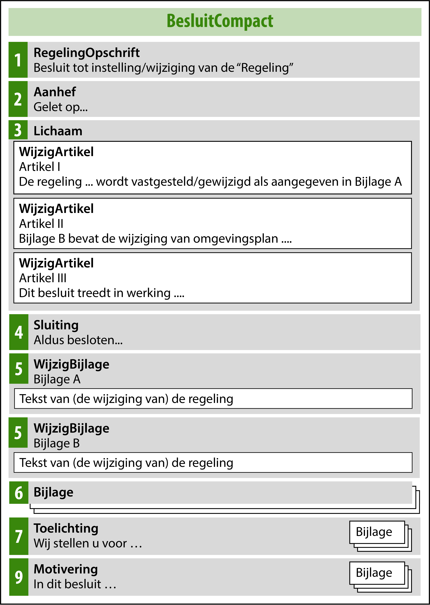
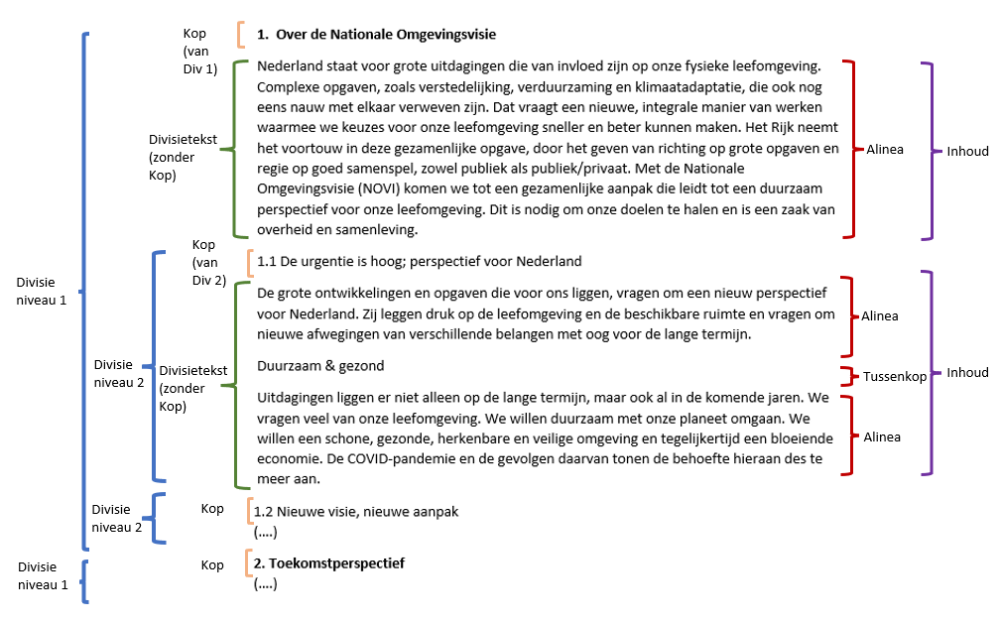
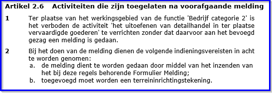
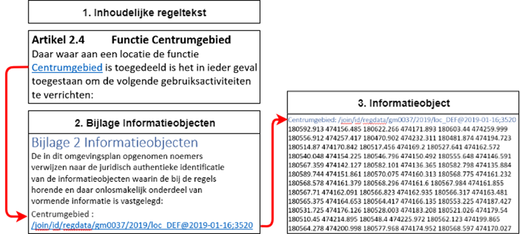
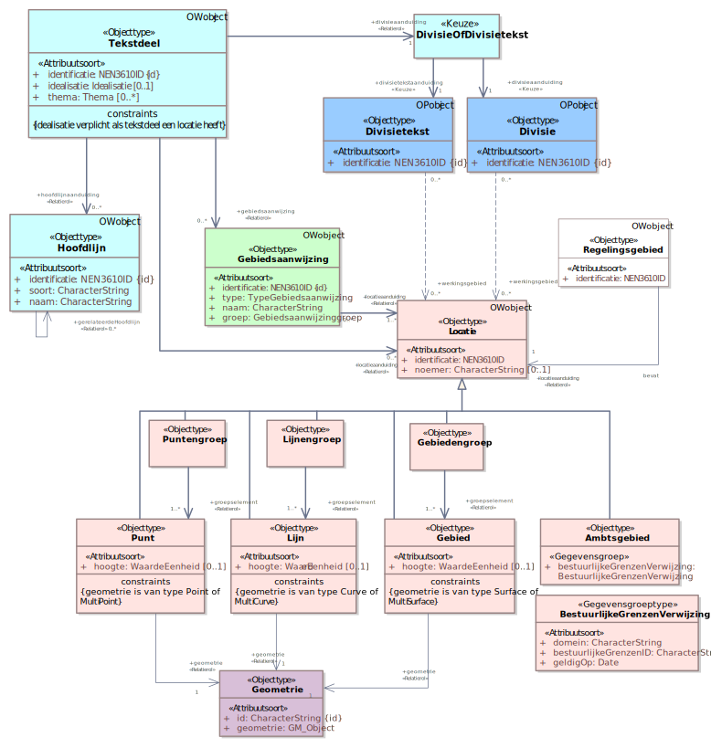
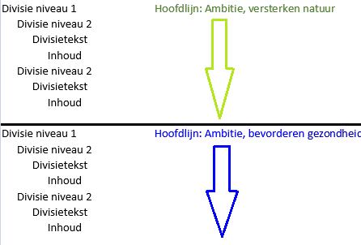
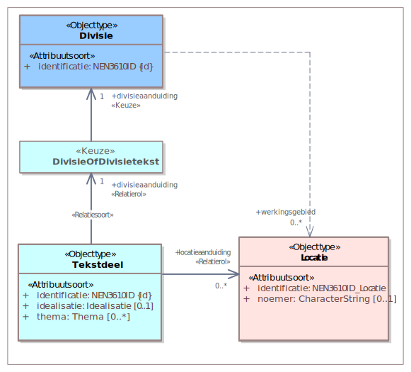
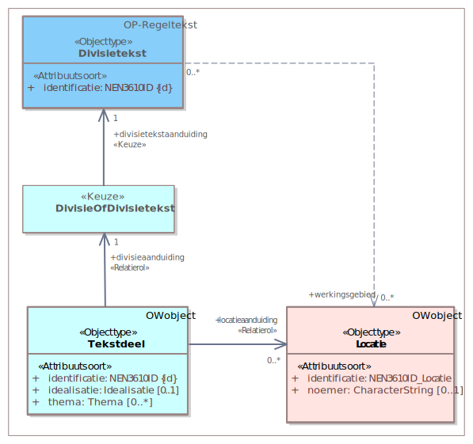
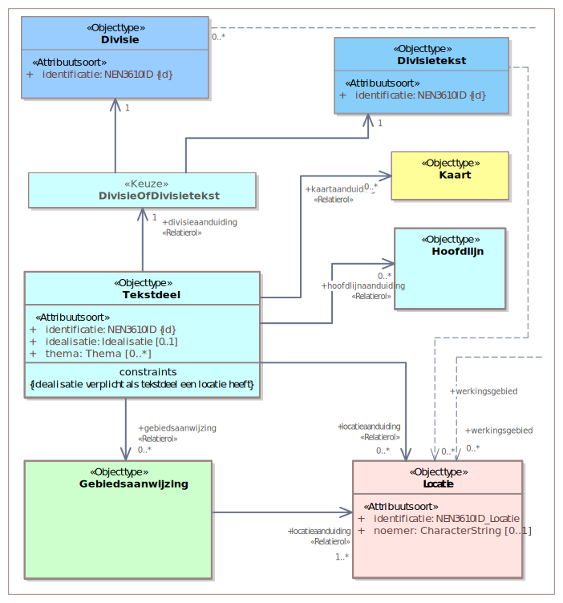

Het wijzigingsoverzicht bevat alleen de wijzigingen van deze versie van dit toepassingsprofiel ten opzichte van de voorgaande versie. De versiehistorie van eerdere versies staat in bijlage 3.
In het wijzigingsoverzicht wordt met WELT-xx verwezen naar de Wensen en Eisen Lijst voor de TPOD-standaard. Deze lijst bevat meldingen en wijzigingsverzoeken die door gebruikers van de standaard zijn ingediend. De ingediende meldingen zijn te vinden via https://www.geonovum.nl/geo-standaarden/omgevingswet/meldingen.
Voor de STOP-standaard bestaat een vergelijkbaar meldingssysteem, waarnaar wordt verwezen met STOP#xx. De STOP-issuetracker is te vinden via https://gitlab.com/koop/STOP/standaard/-/issues.
Versie
Datum
Wijziging
4.0.1
2025-01-23
Bij de publicatie van de vorige versie van de standaard ondersteunden de landelijke voorzieningen het ontwerp van een tijdelijk regelingdeel nog niet. Daarom was deze in dit toepassingsprofiel alleen genoemd als toekomstige functionaliteit. Inmiddels ondersteunen de landelijke voorzieningen het ontwerp van een tijdelijk regelingdeel wel. Dat is verwerkt in de volgende paragrafen:
2.4.4 (tekstaanpassingen en kader Toekomstige functionaliteit met workaround verwijderd)
4.4.4 (tekstaanpassingen en kader Toekomstige functionaliteit met workaround verwijderd)
11.4.4.2 (tekstaanpassingen en kader Toekomstige functionaliteit met workaround verwijderd)
11.4.4.2.3 (paragraaf over RegelingMetadata tijdelijk regelingdeel in ontwerpfase toegevoegd)
4.0.1
2025-01-23
Beschreven dat de functie van de regels in het tijdelijk regelingdeel, namelijk regels waarmee het projectbesluit een omgevingsplan wijzigt, tot uitdrukking moet komen in het RegelingOpschrift en de citeertitel van het tijdelijk regelingdeel. Dat is verwerkt in de volgende paragrafen:
In paragraaf 11.4.8 is beschreven dat, als de gemeente het wenselijk vindt om de regels uit het tijdelijk regelingdeel vanuit het projectbesluit te verwerken in de hoofdregeling van het omgevingsplan, het tijdelijk regelingdeel moet worden ingetrokken door het bevoegd gezag dat het heeft ingesteld.
A Uitgangspunten voor de modellering
1 Inleiding
1.1 Aanleiding
Het motto van de Omgevingswet is ‘Ruimte voor ontwikkeling, waarborgen voor kwaliteit’. De Omgevingswet staat voor een goede balans tussen het benutten en beschermen van de fysieke leefomgeving. Met benutten wordt bedoeld het doelmatig beheren, gebruiken en ontwikkelen van de fysieke leefomgeving om maatschappelijke behoeften te vervullen. Bij beschermen gaat het over het bereiken en in stand houden van een veilige en gezonde fysieke leefomgeving en een goede omgevingskwaliteit.
1.1.1 Nieuw stelsel omgevingsrecht
De Omgevingswet bundelt de wetgeving en regels voor ruimte, wonen, infrastructuur, milieu, natuur en water. Met de Omgevingswet wordt het huidige stelsel van ruimtelijke regels volledig herzien en wordt het fundament van het nieuwe stelsel voor het omgevingsrecht gelegd. Met het vernieuwen van het omgevingsrecht wil de wetgever vier verbeteringen bereiken:
Het omgevingsrecht is inzichtelijk, voorspelbaar en gemakkelijk in het gebruik.
De leefomgeving staat op een samenhangende manier centraal in beleid, besluitvorming en regelgeving.
Een actieve en flexibele aanpak biedt overheden meer afwegingsruimte om doelen voor de leefomgeving te bereiken.
Besluitvorming over projecten in de leefomgeving gaat sneller en beter.
Voor de realisatie van deze doelen biedt de wetgever diverse juridische instrumenten, waaronder de besluiten en andere rechtsfiguren die verschillende bevoegde gezagen in staat stellen besluiten te nemen die ingrijpen in de leefomgeving. De belangrijkste instrumenten zijn:
Algemene Maatregel van Bestuur (Rijk)
Ministeriële Regeling (Rijk)
Omgevingsvisie (Rijk, provincies en gemeenten)
Omgevingsverordening (Provincies)
Waterschapsverordening (Waterschappen)
Omgevingsplan (Gemeenten)
Projectbesluit (Rijk, provincies en waterschappen)
Programma (Rijk, provincies, gemeenten en waterschappen)
1.1.2 LVBB, overheid.nl en DSO-LV
Besluiten moeten, om werking te kunnen hebben, worden bekendgemaakt respectievelijk gepubliceerd. Daartoe moeten ze worden aangeleverd aan de Landelijke Voorziening Bekendmaken en Beschikbaarstellen (verder: LVBB). De LVBB verzorgt vervolgens de bekendmaking van de besluiten en de consolidatie van wijzigingsbesluiten in de (geconsolideerde) Regeling. Beide worden geplaatst op het internetportaal overheid.nl: de bekendmaking van de besluiten komt op officielebekendmakingen.nl in het digitale publicatieblad van het bevoegde gezag en de geconsolideerde Regeling in de nationale respectievelijk lokale regelingenbank. De geconsolideerde Regeling (in STOP-termen: de Toestand) wordt doorgeleverd aan de hierna te bespreken DSO-LV. Deze processen en de resultaten daarvan zijn nader beschreven in paragraaf 3.8.
Digitalisering is een van de instrumenten voor het behalen van de in paragraaf 1.1.1 genoemde verbeterdoelen. De Omgevingswet bevat de grondslagen voor de Landelijke Voorziening Digitaal Stelsel Omgevingswet (verder: DSO-LV). Daarmee is de juridische basis gelegd voor de ontwikkeling van DSO-LV en kunnen er regels worden gesteld over onder andere gemeenschappelijke definities in de standaarden en voorzieningen die onderdeel zijn van het stelsel.
DSO-LV zorgt voor samenhangende, eenduidige en toegankelijke informatie van goede kwaliteit en draagt bij aan de verbetering van het stelsel van het omgevingsrecht. Het stimuleert een snellere en integrale besluitvorming onder de Omgevingswet en vergroot het gebruikersgemak.
DSO-LV biedt het digitale loket waar initiatiefnemers, overheden en belanghebbenden snel kunnen zien wat kan en mag in de fysieke leefomgeving: het Omgevingsloket. Via het Omgevingsloket kunnen zij:
vergunningen aanvragen en meldingen doen;
zien welke regels en beleid van toepassing zijn op een locatie;
(op termijn) informatie raadplegen over de kwaliteit van de fysieke leefomgeving, zoals gegevens over water- of luchtkwaliteit en geluidbelasting.
Om aan deze doelstellingen van DSO-LV te kunnen voldoen, is het nodig om bepaalde besluiten en andere rechtsfiguren machineleesbaar te maken en de gebruikte gegevens uitwisselbaar te maken. Dat betekent dat ze vanuit informatiekundig en technisch oogpunt moeten worden gestructureerd en gestandaardiseerd.
De Omgevingswet biedt daartoe de mogelijkheid door het stellen van regels over die besluiten en andere rechtsfiguren.
1.2 STOP, IMOW en TPOD
Op grond van artikel 20.26 lid 2 Omgevingswet worden besluiten en andere rechtsfiguren op grond van die wet die bij ministeriële regeling zijn aangeduid als omgevingsdocument, ontsloten via DSO-LV. De bedoelde ministeriële regeling is de Regeling standaarden publicaties Omgevingswet[1] De Regeling standaarden publicaties Omgevingswet is een ministeriële regeling bij de Bekendmakingswet . Deze regeling wijst besluiten en andere rechtsfiguren aan als omgevingsdocument en stelt het verplicht om die omgevingsdocumenten, en ontwerpen daarvan, elektronisch vorm te geven conform de Standaard voor Officiële Publicaties, het InformatieModel Omgevingswet en het voor het betreffende omgevingsdocument voorgeschreven toepassingsprofiel. Ook bevat deze regeling de verplichting om omgevingsdocumenten voor publicatie aan te bieden aan het Bronhouderkoppelvlak van de LVBB.
De Standaard voor Officiële Publicaties (verder: STOP) beschrijft hoe officiële publicaties moeten worden opgesteld en aangeleverd om te kunnen worden bekendgemaakt of gepubliceerd en om te kunnen worden geconsolideerd. STOP gaat daarbij niet over de inhoud van officiële bekendmakingen, maar beschrijft wel de mechanismen en bouwstenen om die inhoud digitaal vast te leggen.
Per domein kan een specificatie van STOP gemaakt worden. Voor het domein van de Omgevingswet is die specificatie gegeven in het ToepassingsProfiel voor OmgevingsDocumenten (TPOD). Daarbij behoort het InformatieModel Omgevingswet (verder: IMOW). IMOW is het logische model dat is toegespitst op de keten ‘Van plan tot publicatie’. IMOW bepaalt hoe omgevingsdocumenten aan DSO-LV moeten worden aangeleverd. IMOW omvat implementatierichtlijnen en implementatie-afspraken voor de omgevingsdocumenten. IMOW is bedoeld voor bouwers van plansoftware en voor technisch ingestelde medewerkers van bevoegde gezagen en adviesbureaus.
Naast IMOW is er, als serviceproduct, het Conceptueel InformatieModel Omgevingswet (verder: CIMOW). CIMOW is het informatiemodel voor informatie-uitwisseling binnen DSO-LV. CIMOW is bedoeld voor de DSO-keten. Per omgevingsdocument is in een Toepassingsprofiel beschreven op welke wijze STOP en IMOW moeten worden toegepast. Een Toepassingsprofiel is een nadere invulling c.q. beperking van STOP en bevat domein- en omgevingsdocument-specifieke afspraken. De toepassingsprofielen geven de informatiekundige specificaties conform STOP en IMOW voor de (inhoudelijke) onderwerpen, de regels en richtlijnen die gelden voor het betreffende omgevingsdocument. Het is in feite de schakel tussen de juridisch(-inhoudelijke) bepalingen in de Omgevingswet en de technische specificaties voor het opstellen van de afzonderlijke omgevingsdocumenten en de data die daarin wordt vastgelegd en het ontwikkelen van software daarvoor. Het TPOD is primair bedoeld voor beleidsmedewerkers en juristen van de bevoegde gezagen, die de omgevingsdocumenten volgens de standaard inhoud en vorm zullen geven.
De STOP/TPOD-standaard legt vast hoe tekst moet worden ingedeeld en geannoteerd, hoe tekst aan locaties moet worden gekoppeld, welke waardelijsten van toepassing zijn en hoe het resultaat vervolgens uitgewisseld moet worden. Het is aan de bevoegde gezagen om de inhoud te bepalen.
Het onderhavige document is het toepassingsprofiel voor het projectbesluit. Het behoort tot het Toepassingsprofiel voor Omgevingsdocumenten, dat de volgende onderdelen omvat:
Informatiemodel Omgevingswet (document en schema’s);
Toepassingsprofielen voor de omgevingsdocumenten;
Symbolenbibliotheek STOP-TPOD;
Waardelijsten IMOW.
Bij het Toepassingsprofiel voor Omgevingsdocumenten hoort een set van serviceproducten, waaronder:
Conceptueel Informatiemodel Omgevingswet;
Presentatiemodel;
Wegwijzer;
Validatiematrix.
1.3 Leeswijzer
Dit document is in drie delen verdeeld. Deel A beschrijft de uitgangspunten voor de modellering: de doelstellingen van Omgevingswet, STOP/TPOD-standaard en DSO; de juridische, inhoudelijke en procedurele aspecten van het projectbesluit en tot slot de uitgangspunten die de bouwstenen vormden voor de ontwikkeling van de toepassingsprofielen. Deel B is volledig gewijd aan de modellering van het projectbesluit. Beschreven worden de vormgeving van Besluit en Regeling, de toepassing van de STOP-tekststructuren, het annoteren met OW-objecten, het wijzigen van omgevingsdocumenten met wijzigingsbesluiten en enkele andere aspecten. Deel C tenslotte gaat over een aantal aspecten van de aanlevering. Het gaat dan om de wettelijk voorgeschreven procedure die het projectbesluit doorloopt en de producten en gegevens die per stap in die procedure moeten worden aangeleverd. Ook gaat dit hoofdstuk in op rectificatie en revisie.
Dit toepassingsprofiel stelt een aantal (overwegend technische en structurerende) normen voor het opstellen van het projectbesluit. Voorbeelden daarvan zijn het model voor Besluit en Regeling dat op het projectbesluit en een besluit tot vaststelling of wijziging daarvan moet worden toegepast, de attributen die nodig zijn om een bepaalde annotatie vast te leggen en de manier waarop de relatie tussen tekst en werkingsgebied wordt vormgegeven. Uiteraard bevat het toepassingsprofiel ook een toelichting op die normen. Om volstrekt helder te maken wat tot de norm behoort, wordt in de tekst een duidelijk onderscheid gemaakt tussen beide teksttypen. De toelichtende teksten staan steeds in de subparagraaf Toelichting, de normen staan in de subparagraaf Norm. Het gaat hier om de functionele normen uit de standaard, niet om juridische normen die regels stellen. De subparagraaf Norm beschrijft hoe bij het opstellen van het projectbesluit voldaan moet worden aan de TPOD-standaard. Doelstelling hiervan is dat de omgevingsdocumenten van verschillende bevoegde gezagen op eenzelfde manier geraadpleegd en bevraagd kunnen worden en het combineren van informatie uit verschillende omgevingsdocumenten over eenzelfde onderwerp vereenvoudigd wordt. Hiermee hebben deze normen een functionele invalshoek. Validatieregels die bepalen of een projectbesluit kan worden bekendgemaakt en/of in DSO-LV getoond kan worden, kennen een technische invalshoek: kan het geautomatiseerde systeem het document verwerken?
2 Inhoudelijke aspecten van het projectbesluit
Dit hoofdstuk beschrijft het projectbesluit en heeft als doel de vereisten voor de modellering in dit toepassingsprofiel te identificeren.
Paragraaf 2.1 schetst het karakter van het projectbesluit. Deze schets bevat informatie op hoofdlijnen, die van belang is voor de functionele elementen in het toepassingsprofiel. In paragraaf 2.2 staan algemene kenmerken van het projectbesluit. Deze kenmerken geven de (juridische, procedurele, etc.) context weer van het projectbesluit. Paragraaf 2.3 beschrijft domeinspecifieke kenmerken: de bestuursorganen die bevoegd zijn een projectbesluit vast te stellen, de inhoud van het projectbesluit en de projectprocedure. Paragraaf 2.4 geeft in detail aan hoe het projectbesluit het omgevingsplan wijzigt. Paragraaf 2.5 ten slotte gaat over het overgangsrecht en de overgangsfase.
2.1 Kenschets rechtsfiguur
Rijk, provincies, waterschappen en gemeenten stellen elk (integraal) beleid en regels vast en nemen vervolgens andere besluiten over de ontwikkeling, het gebruik, de bescherming en het beheer en onderhoud van de fysieke leefomgeving voor hun grondgebied. Zij leggen dit vast in één of meerdere omgevingsdocumenten.
Elk van deze bestuurslagen heeft in het stelsel voor het omgevingsrecht zijn eigen bevoegdheden en verantwoordelijkheden en daarmee samenhangende instrumenten, waaronder de omgevingsdocumenten.
Waterschappen, provincies en Rijk kunnen besluiten tot het uitvoeren van een (vaak) complex project in de fysieke leefomgeving door middel van het projectbesluit. Het projectbesluit heeft alleen betrekking op projecten waar een nationaal, provinciaal of waterstaatsbelang mee gemoeid is of waar een privaat belang samenvalt met een publiek belang, zoals de aanleg van een windpark.
Het projectbesluit is gericht op het uitvoeren van een project en het in werking hebben of in stand houden daarvan. Voor een aantal categorieën van projecten is het vaststellen van een projectbesluit verplicht, voor andere projecten van publiek belang is het mogelijk om een projectbesluit vast te stellen. In beide gevallen wordt de projectprocedure toegepast.
Het projectbesluit heeft een bijzonder karakter. Het bevat de maatregelen en kan alle toestemmingen bevatten die nodig zijn voor de uitvoering van het project. Het projectbesluit geldt als omgevingsvergunning voor de expliciet in het projectbesluit genoemde activiteiten en als toestemming voor andere onderdelen van het projectbesluit. Tot slot wijzigt het projectbesluit een of meer omgevingsplannen met regels die nodig zijn voor het uitvoeren en in werking hebben of in stand houden van het project. Gedurende de overgangsfase hoeft dat niet en geldt het projectbesluit, voor zover het in strijd is met het omgevingsplan, als omgevingsvergunning voor een buitenplanse omgevingsplanactiviteit. Met het oog op de voorbereiding van een projectbesluit kunnen provinciale staten respectievelijk de minister een voorbereidingsbesluit nemen, dat een of meer omgevingsplannen wijzigt met voorbeschermingsregels.
2.2 Algemene kenmerken projectbesluit
In Tabel 1 tot en met Tabel 3 zijn de algemene kenmerken van het projectbesluit opgenomen. Deze kenmerken leggen de algemene eigenschappen vast, waarmee informatie over het projectbesluit wordt bijgehouden. Doel van deze tabellen is het weergeven van de meest essentiële algemene kenmerken van het instrument zodat de lezer het beter kan plaatsen en vergelijken met bestaande instrumenten; niet om een volledig sluitende beschrijving te geven. De in de tabellen aangehaalde artikelen zijn afkomstig uit de Omgevingswet (verder: Ow), tenzij anders vermeld.
Tabel 1Juridische kenmerken
Onderwerp
Specificatie
Grondslag rechtsfiguur
Artikel5.44Ow
Voorbereidingsprocedure
Verplichtingen:
kennis geven van voornemen een verkenning uit te voeren naar opgave in de fysieke leefomgeving en om projectbesluit vast te stellen met/zonder voorafgaande voorkeursbeslissing, met een termijn waarbinnen eenieder de gelegenheid heeft oplossingen voor de opgave voor te dragen (art. 5.47 leden 1 en 3 Ow)
kennis geven van wijze waarop burgers, bedrijven, maatschappelijke organisaties en bestuursorganen worden betrokken bij verkenning (art. 5.47 lid 4 Ow)
Het bevoegd gezag bepaalt zelf het tijdstip waarop het projectbesluit wordt bekend gemaakt en ter inzage gelegd
Wijze van bekendmaking
Bekendmaking door plaatsing van het volledige besluit in het elektronisch publicatieblad van het bestuursorgaan dat het besluit heeft genomen
Tijdstip inwerkingtreding
Projectbesluit van GS of minister treedt in werking 4 weken na dag van bekendmaking van het besluit, bij spoedeisende omstandigheden kan GS/minister een eerdere datum bepalen (art. 16.78 lid 3 Ow)
Projectbesluit van waterschap treedt in werking 4 weken na de dag waarop het besluit door GS over goedkeuring is bekendgemaakt (art. 16.78 lid 4 Ow)
Rechtsbescherming
Tegen (het vaststellen van) het projectbesluit én tegen het besluit van GS omtrent de goedkeuring van een projectbesluit van een waterschap kan rechtstreeks beroep worden ingesteld bij de Afdeling bestuursrechtspraak van de Raad van State[2] Artikel 8:6 lid 1 en Bijlage 2 artikel 2 Awb (Beroep bij de Afdeling bestuursrechtspraak van de Raad van State)
Geldt toepassingsprofiel ook voor ontwerpbesluit
Ja[3] Maar zie wel paragraaf 4.4.4 waarin enige beperkingen zijn aangegeven
Rechtsfiguur roept meldingsplicht of vergunningplicht in het leven
Ja, voor zover projectbesluit regels omgevingsplan wijzigt
Rechtsfiguur bevat voor eenieder bindende regels
Ja, voor zover projectbesluit regels omgevingsplan wijzigt
Tabel 2Kenmerken ten behoeve van metadata en annotaties
omgevingsdocument kan rechtstreeks ander omgevingsdocument wijzigen (meervoudig bronhouderschap)
Ja, het projectbesluit wijzigt het omgevingsplan met regels die nodig zijn voor het uitvoeren en in werking hebben of in stand houden van het project (art. 5.52 lid 1 Ow)
In de overgangsfase hoeft het projectbesluit tot een bij koninklijk besluit te bepalen tijdstip het omgevingsplan niet te wijzigen maar geldt het projectbesluit, voor zover het in strijd is met een omgevingsplan, als omgevingsvergunning voor een buitenplanse omgevingsplanactiviteit (art. 22.16, lid 1 Ow)
Ander omgevingsdocument kan rechtstreeks onderhavig omgevingsdocument wijzigen (meervoudig bronhouderschap)
Nee
Rechtsfiguur kan gewijzigd worden door wijzigingsbesluiten
Ja
Tabel 3Vergelijking met huidige rechtsfiguren en RO Standaarden
Onderwerp
Specificatie
Vergelijkbaar met/ voortzetting van huidige rechtsfiguur
inpassingsplan (Wet ruimtelijke ordening)
tracébesluit (Tracéwet)
projectplan (Waterwet)
Voortzetting van instrument in RO Standaarden
Projectbesluit heeft hybride karakter en is daardoor niet een voortzetting van 1 specifiek instrument van RO-standaarden. Heeft gelijkenis met het inpassingplan uit Wro
INSPIRE thema
Planned Land Use: SpatialPlan
2.3 Het projectbesluit
2.3.1 De bevoegdheid om een projectbesluit vast te stellen
Voor het uitvoeren van een project en het in werking hebben of in stand houden daarvan kunnen het dagelijks bestuur van het waterschap, gedeputeerde staten (verder: GS) respectievelijk de minister die het aangaat, in overeenstemming met de minister van BZK, een projectbesluit vaststellen[4] Artikel 5.44 lid 1 Ow . Wanneer het een project van provinciaal belang betreft dat op het grondgebied van meerdere provincies betrekking heeft, zijn GS van de provincie waar het project in hoofdzaak wordt uitgevoerd bevoegd om het projectbesluit vast te stellen[5] Artikel 5.44a lid 1 Ow . In het geval het gaat om een project in het kader van het beheer van watersystemen en het waterketenbeheer dat op het grondgebied van meerdere waterschappen betrekking heeft, is het dagelijks bestuur van het waterschap waar het project in hoofdzaak wordt uitgevoerd bevoegd om het projectbesluit vast te stellen[6] Artikel 5.44a lid 2 Ow . Als het een gezamenlijk project van een of meer provincies en een of meer waterschappen betreft, zijn GS van de provincie waar het project geheel of in hoofdzaak wordt uitgevoerd bevoegd om het projectbesluit vast te stellen[7] Artikel 5.44a lid 3 Ow . Bij een gezamenlijk project van Rijk, een of meer provincies of een of meer waterschappen is de minister die het aangaat, in overeenstemming met de minister van BZK, het bevoegd gezag voor het vaststellen van het projectbesluit[8] Artikel 5.44a lid 4 Ow . De minister kan deze bevoegdheid overdragen aan GS van de provincie waar het project geheel of in hoofdzaak wordt uitgevoerd, als GS daarmee hebben ingestemd[9] Artikel 5.44b lid 1 Ow .
2.3.2 De inhoud van het projectbesluit
In Omgevingswet en Omgevingsbesluit zijn onderwerpen benoemd die
het projectbesluit in ieder geval moet bevatten respectievelijk moet bevatten indien ze van toepassing zijn. Die onderwerpen worden in deze paragraaf beschreven.
Onderdelen die het projectbesluit moet bevatten:
een beschrijving van het project[10] Artikel 5.6 aanhef en onder a Omgevingsbesluit ; De beschrijving van het project zal bestaan uit tekst, afbeeldingen, tekeningen en kaarten.
de permanente of tijdelijke maatregelen en voorzieningen om het project te realiseren, voor zover die voor de fysieke leefomgeving relevant zijn[11] Artikel 5.6 aanhef en onder b Omgevingsbesluit ; In het projectbesluit zullen deze maatregelen en voorzieningen worden beschreven in tekst, afbeeldingen, tekeningen en kaarten. Voorbeelden van maatregelen zijn het tijdelijk aanleggen van bouwwegen en werkterreinen.
de maatregelen gericht op het ongedaan maken, beperken of compenseren van de nadelige gevolgen van het project of van het in werking hebben of in stand houden daarvan voor de fysieke leefomgeving[12] Artikel 5.6 aanhef en onder c Omgevingsbesluit ; In het projectbesluit zullen deze maatregelen worden beschreven in tekst, afbeeldingen, tekeningen en kaarten. Voorbeelden van deze maatregelen zijn geluidschermen, stil asfalt, het aanleggen van een ecopassage of het treffen van maatregelen in het belang van het behoud van cultureel erfgoed.
beschrijvingen van hoe burgers, bedrijven, maatschappelijke organisaties en bestuursorganen bij de voorbereiding zijn betrokken en van de resultaten van de uitgevoerde verkenning, waarbij in ieder geval wordt ingegaan op de door derden voorgedragen mogelijke oplossingen en de daarover door deskundigen uitgebrachte adviezen[13] Artikel 5.51 Ow ;
de termijn waarbinnen in een omgevingsplan geen regels mogen worden gesteld die het uitvoeren van een project waarvoor provincie of Rijk een projectbesluit heeft vastgesteld belemmeren, deze termijn kan eenmaal worden verlengd[14] Artikel 4.19a lid 3 jo lid 1 Ow .
Onderdelen die het projectbesluit moet bevatten indien ze van toepassing zijn:
Voor zover dat in het projectbesluit uitdrukkelijk is bepaald, geldt het projectbesluit als[15] Artikelen 5.52 Ow en 5.7 Omgevingsbesluit :
omgevingsvergunning voor activiteiten ter uitvoering van het projectbesluit;
besluit tot vaststelling van een geluidproductieplafond als omgevingswaarde als bedoeld in artikel 2.12a[16] Besluit van provinciale staten tot vaststelling van geluidproductieplafonds als omgevingswaarden voor bepaalde industrieterreinen , 2.13a[17] Besluit van provinciale staten tot vaststelling van geluidproductieplafonds als omgevingswaarden voor bepaalde wegen en lokale spoorwegen of 2.15 lid 2[18] Besluit van minister van IenW tot vaststelling van geluidproductieplafonds als omgevingswaarden voor bepaalde wegen en hoofdspoorwegen Ow;
maatwerkvoorschrift op grond van regels als bedoeld in artikel 4.3 Ow[19] Een projectbesluit kan alleen gelden als maatwerkvoorschrift op grond van rijksregels. Een maatwerkvoorschrift op grond van decentrale regels moet afzonderlijk worden aangevraagd bij het bevoegd gezag ;
verkeersbesluit als bedoeld in artikel 15 Wegenverkeerswet 1994[20] Besluit tot de plaatsing of verwijdering van bepaalde verkeerstekens en onderborden en bepaalde maatregelen op of aan de weg tot wijziging van de inrichting van de weg of tot het aanbrengen of verwijderen van voorzieningen ter regeling van het verkeer voor zover het gaat om de uitvoering van het projectbesluit;
onttrekking van een weg aan de openbaarheid als bedoeld in artikel 7 Wegenwet[21] Besluit waardoor een weg ophoudt openbaar te zijn .
Als het projectbesluit geldt als een of meer van de hier genoemde besluiten, moet dat expliciet in het projectbesluit worden beschreven. Het projectbesluit heeft daardoor die andere besluiten in zich; er zijn geen losse besluitdocumenten.
Bij een projectbesluit kan worden bepaald dat het besluit met inachtneming van de daarbij gestelde randvoorwaarden door het bevoegd gezag kan worden uitgewerkt[22] Artikel 5.54 lid 1 Ow . De uitwerking maakt deel uit van het projectbesluit en kan, zolang de uitwerking nog niet is verwezenlijkt, worden vervangen door een nieuwe uitwerking[23] Artikel 5.54 lid 2 Ow . In de randvoorwaarden wordt concreet gemaakt waarop de uitwerking betrekking kan hebben, zoals welk onderdeel van het project en welk deel van het projectgebied. Een voorbeeld: in het projectbesluit is bepaald dat er een brug over een rivier gebouwd moet worden, maar de exacte hoogte en locatie van de brug moet in de uitwerking bepaald worden. Bij de uitwerking van een projectbesluit binnen de randvoorwaarden wordt een verkorte procedure toegepast: kennisgeving van het voornemen, het uitvoeren van een verkenning en het nemen van een voorkeursbeslissing zijn niet van toepassing[24] Artikel 5.50 Ow .
Wijziging omgevingsplan Het projectbesluit wijzigt het omgevingsplan met regels die nodig zijn voor het uitvoeren en in werking hebben of in stand houden van het project[25] Artikel 5.52 lid 1 Ow . Dit betekent dat als het projectbesluit in strijd is met het omgevingsplan, het projectbesluit het omgevingsplan móét wijzigen. NB: Gedurende de overgangsfase hoeft het projectbesluit het omgevingsplan niet te wijzigen. Voor zover een projectbesluit in deze periode in strijd is met het omgevingsplan, geldt het als een omgevingsvergunning voor een buitenplanse omgevingsplanactiviteit[26] Artikel 22.16 lid 1 Ow . Om kenbaar te zijn moet dat uitdrukkelijk in het projectbesluit worden bepaald.
Een projectbesluit van waterschap of provincie mag het uitvoeren van een project waarvoor het Rijk een projectbesluit heeft vastgesteld niet belemmeren[27] Artikel 5.53a lid 1 en 4.19a lid 1 Ow voor het projectbesluit van het waterschap, artikel 5.53a lid 2 Ow voor het projectbesluit van de provincie .
2.3.3 De projectprocedure
Het projectbesluit is onderdeel van de projectprocedure. In paragraaf 11.4 staat een gedetailleerde beschrijving van de projectprocedure. Daarin is per procedurestap aangegeven of deze door de STOP/TPOD-standaard en de DSO-keten wordt ondersteund en zo ja, welke producten en welke gegevens en metadata aan die keten moeten worden aangeleverd. In hoofdlijnen ziet de projectprojectprocedure er als volgt uit.
Kennis geven van voornemen om een verkenning uit te voeren en een projectbesluit vast te stellen met of zonder voorafgaande voorkeursbeslissing, met een termijn waarbinnen eenieder de gelegenheid heeft oplossingen voor de opgave voor te dragen[28] Artikel 5.47 leden 1 en 3 Ow
Kennis geven van wijze waarop burgers, bedrijven, maatschappelijke organisaties en bestuursorganen bij de verkenning worden betrokken[29] Artikel 5.47 lid 4 Ow
Verkenning[30] Artikel 5.48 Ow
In de verkenning onderzoekt het bevoegd gezag de mogelijke oplossingen voor een opgave. Door de verkenning wil het bevoegd gezag inzicht krijgen in:
de aard van de opgave
de relevante ontwikkelingen voor de fysieke leefomgeving
de mogelijke oplossingen voor die opgave.
Hieronder vallen ook de oplossingen die anderen hebben voorgedragen en waarvan het bevoegd gezag na beoordeling ervan besluit deze mee te nemen in de verkenning. Het bevoegd gezag bepaalt zelf de invulling van de verkenning. De verkenning moet uiteindelijk voldoende informatie bieden om een projectbesluit te kunnen opstellen en -indien van toepassing- daaraan voorafgaand een voorkeursbeslissing te kunnen nemen. Het milieueffectrapport kan onderdeel zijn van de verkenning.
Voorkeursbeslissing[31] Artikel 5.49 Ow (indien van toepassing)
Voorbereiden voorkeursbeslissing met toepassing van afdeling 3.4 Awb[32] Artikel 16.70 Ow
Vaststellen voorkeursbeslissing
Projectbesluit
Voorbereiden projectbesluit met toepassing van afdeling 3.4 Awb[33] Artikel 16.71 lid 1 aanhef en onder a Ow
Inwinnen instemming respectievelijk advies als het projectbesluit gaat gelden als omgevingsvergunning voor een activiteit waarvoor instemming van een ander bestuursorgaan nodig is of als besluit op een aanvraag waarover een ander bestuursorgaan of andere instantie in de gelegenheid wordt gesteld om advies uit te brengen
Vaststellen projectbesluit
Beslissen omtrent goedkeuring projectbesluit waterschap[34] Artikel 16.72 Ow
Een projectbesluit dat is vastgesteld door het dagelijks bestuur van het waterschap behoeft goedkeuring van GS van de provincie waarin het projectbesluit wordt uitgevoerd dan wel GS van de provincie waarin het projectbesluit in hoofdzaak zal worden uitgevoerd.
Beroep Tegen een projectbesluit kan beroep worden ingesteld. In het geval van een projectbesluit van een waterschap kan zowel tegen het projectbesluit als tegen het besluit over de goedkeuring beroep worden ingesteld[35] Artikel 8:6 lid 1 en Bijlage 2 artikel 2 Awb (Beroep bij de Afdeling bestuursrechtspraak van de Raad van State) .
Inwerkingtreden
projectbesluit provincie en Rijk treedt in werking 4 weken na de dag van bekendmaking van het projectbesluit; het bevoegd gezag kan vanwege spoedeisende omstandigheden bepalen dat het projectbesluit eerder in werking treedt[36] Artikel 16.78 lid 3 Ow
projectbesluit waterschap treedt in werking 4 weken na de dag van bekendmaking van het besluit over de goedkeuring[37] Artikel 16.78 lid 4 Ow .
2.3.4 Coördinatie
In artikel 5.52 Ow is het projectbesluit als een integraal besluit gepositioneerd. Dat is -behoudens het overgangsrecht- in ieder geval verplicht voor de strijdigheid van het projectbesluit met het ter plaatse geldende omgevingsplan: dan moet het projectbesluit het omgevingsplan wijzigen met regels die nodig zijn voor het uitvoeren en in werking hebben of in stand houden van het project[38] Artikel 5.52 lid 1 Ow . Daarnaast geldt, voor zover dat in het projectbesluit uitdrukkelijk is bepaald, het projectbesluit als omgevingsvergunning, besluit tot vaststelling van een geluidproductieplafond als omgevingswaarde, maatwerkvoorschrift, verkeersbesluit of onttrekking van een weg aan de openbaarheid[39] Artikel 5.52 lid 2 Ow en artikel 5.7 Ob . Het is mogelijk om het projectbesluit niet te laten gelden als die besluittypen, maar voor zover de bevoegdheid tot het nemen van deze besluiten ligt bij een ander bestuursorgaan kan het bestuursorgaan dat het projectbesluit vaststelt niet afdwingen dat dat andere bestuursorgaan die besluiten daadwerkelijk neemt.
Bij projectbesluiten voor hoofdinfrastructuur en primaire waterkeringen is het verplicht om op de coördinatie van de voorbereiding van de besluiten ter uitvoering van een projectbesluit de coördinatieregeling van afdeling 3.5 Awb toe te passen[40] Artikel 5.45 lid 2 en 16.7 Ow . Bij projectbesluiten voor andere projecten kan het bevoegd gezag bepalen om op de coördinatie van de voorbereiding van de besluiten ter uitvoering van een projectbesluit die coördinatieregeling toe te passen[41] Artikel 5.45 lid 1 en 16.7 Ow . Coördinerend bestuursorgaan is het bestuursorgaan dat bevoegd gezag is voor het projectbesluit[42] Artikel 5.45 lid 3 Ow , tenzij het gaat om een projectbesluit van het waterschap; in dat geval zijn GS coördinerend bestuursorgaan[43] Artikel 5.45 lid 4 Ow . De Omgevingswet gaat uit van de coördinatie van verschillende besluiten ter uitvoering van een projectbesluit. De gecoördineerde voorbereiding van die uitvoeringsbesluiten kan parallel verlopen aan de totstandkoming van het projectbesluit, maar kan ook na het afronden van de procedure van het projectbesluit plaatsvinden. Het projectbesluit wordt gepubliceerd en bekend gemaakt met toepassing van de STOP/TPOD-standaard. De uitvoeringsbesluiten worden gepubliceerd en bekend gemaakt op de voor die besluiten gebruikelijke wijze.
In de artikelen 5.45 en 16.7 Ow is uitdrukkelijk sprake van coördinatie van besluiten ter uitvoering van een projectbesluit; deze artikelen regelen niet de coördinatie van uitvoeringsbesluiten met het projectbesluit. Artikel 3:21 lid 1 onder b Awb maakt het echter mogelijk om de coördinatieregeling van afdeling 3.5 Awb toe te passen als dat is bepaald bij besluit van de tot het nemen van die besluiten bevoegde bestuursorganen. Er zou dan kunnen worden besloten om uitvoeringsbesluiten met het projectbesluit te coördineren; juridisch is dat mogelijk.
Om technische redenen is de coördinatie van uitvoeringsbesluiten met het projectbesluit op de manier waarop de Awb coördinatie voorschrijft niet mogelijk. Dat komt ten eerste omdat de Awb bepaalt dat bij toepassing van de coördinatieregeling van afdeling 3.5 Awb het coördinerende bestuursorgaan de besluiten gelijktijdig bekend moet maken[44] Artikel 3:27 Awb . Bij een projectbesluit van een waterschap zijn GS coördinerend bestuursorgaan. Bij coördinatie van een projectbesluit met de uitvoeringsbesluiten zou het waterschap de STOP/TPOD-bestandenset van het ontwerp-projectbesluit en later het vastgestelde projectbesluit aan de provincie moeten sturen. De provincie zou vervolgens die bestandenset moeten importeren in de eigen plansoftware en ter publicatie of bekendmaking aan de LVBB moeten aanleveren. Dat is vergelijkbaar met het meervoudig bronhouderschap, dat nu technisch niet mogelijk is (zie daarover uitgebreid paragraaf 2.4). Er zal onderzocht worden of hiervoor een oplossing moet worden geboden door aanpassing van de wetgeving. Een tweede reden is dat de STOP/TPOD-standaard (nog) geen modellen kent voor de typen besluiten ter uitvoering van een projectbesluit.
Wanneer het gewenst is om een projectbesluit en besluiten ter uitvoering van dat projectbesluit gelijktijdig voor te bereiden, kan dit praktisch worden opgelost door de besluiten ter uitvoering van het projectbesluit met toepassing van de coördinatieregeling van afdeling 3.5 Awb voor te bereiden en tegelijkertijd -maar zonder toepassing van de coördinatieregeling- een projectbesluit voor te bereiden. Als het gaat om besluiten ter uitvoering van een projectbesluit van het waterschap stelt het waterschap in dat geval het projectbesluit op met toepassing van de STOP/TPOD-standaard en levert het waterschap het projectbesluit aan de LVBB aan, waarna het in het publicatieblad van het waterschap wordt bekendgemaakt. De provincie levert de gecoördineerde besluiten ter uitvoering van het projectbesluit via DROP aan, die vervolgens in het provinciaal blad bekend gemaakt worden.
2.4 Wijziging van het omgevingsplan door het projectbesluit: meervoudig bronhouderschap
2.4.1 Beoogde werking van meervoudig bronhouderschap
In het algemeen is een bestuursorgaan verantwoordelijk voor het vaststellen en wijzigen van het omgevingsdocument waarvoor het op grond van de Omgevingswet is aangewezen als bevoegd gezag en worden omgevingsdocumenten alleen gewijzigd door wijzigingsbesluiten van hetzelfde type. In het geval van het omgevingsplan berust die bevoegdheid primair bij de gemeente, maar zijn er ook andere bestuursorganen, van andere bestuurslagen, die andere typen besluiten nemen die leiden tot wijziging van het omgevingsplan:
gedeputeerde staten kunnen met een reactieve interventie besluiten dat een onderdeel van een besluit tot vaststelling of wijziging van het omgevingsplan geen deel van het omgevingsplan uitmaakt[45] Artikel 16.21 Ow ;
bestuursorganen van provincie en Rijk kunnen een voorbereidingsbesluit nemen dat het omgevingsplan wijzigt met voorbeschermingsregels[46] Artikel 4.16 Ow ;
bestuursorganen van waterschap, provincie en Rijk kunnen met een projectbesluit het omgevingsplan wijzigen met regels die nodig zijn voor het uitvoeren en in werking hebben of in stand houden van het project[47] Artikel 5.52 lid 1 Ow .
Artikel 16.2 Ow bepaalt dat, ter uitvoering van artikel 19 van de Bekendmakingswet, op een bestuursorgaan dat met een van de genoemde instrumenten een omgevingsplan wijzigt, ook de verplichting rust om deze wijziging te verwerken in een nieuwe geconsolideerde versie van het omgevingsplan.
De wetgever heeft reactieve interventie, voorbereidingsbesluit en projectbesluit zo bedoeld dat het bestuursorgaan dat een van die instrumenten vaststelt, ook het omgevingsplan, een instrument van een ander type en van een ander bevoegd gezag van een andere bestuurslaag, wijzigt. Technisch uitgedrukt zijn er in dat geval meerdere bronhouders die eenzelfde omgevingsdocument kunnen wijzigen. Dit wordt meervoudig bronhouderschap genoemd. In grote lijnen zou de technische uitwerking van het beoogde meervoudig bronhouderschap er op neerkomen dat het bestuursorgaan dat het andere besluittype heeft genomen, tegelijk met het ter bekendmaking aan de LVBB aanleveren van dat besluit ook de wijzigingsinstructie voor het omgevingsplan moet aanleveren. De LVBB zou daarmee een nieuwe versie van de geconsolideerde regeling van het omgevingsplan kunnen genereren. De betreffende gemeente zou vervolgens de nieuwe geconsolideerde regeling bij de LVBB moeten ophalen en in het eigen plansysteem in de eigen versie van het omgevingsplan importeren en verwerken.
Wanneer er met het oog op de voorbereiding van een projectbesluit een voorbereidingsbesluit wordt genomen, kan het meervoudig bronhouderschap op twee momenten spelen: bij het nemen van het voorbereidingsbesluit én, als het projectbesluit een of meer omgevingsplannen wijzigt, bij het vaststellen van het daarop volgende projectbesluit.
2.4.2 Uitvoering meervoudig bronhouderschap en consolidatie met concept ‘tijdelijk regelingdeel’
Gebleken is dat de door de wetgever beoogde vorm van meervoudig bronhouderschap juridisch én technisch heel complex is. Ten eerste omdat iedere wijziging niet alleen een wijziging van tekst is, maar ook van locaties, annotaties en geografische informatieobjecten (en daarmee ook gevolgen kan hebben voor de juridische en technische opzet van het omgevingsplan) en ook gevolgen kan hebben voor de toepasbare regels waarmee het omgevingsplan in het Omgevingsloket bevraagd kan worden. Ten tweede omdat niet eenduidig is hoe wijzigingen uitgevoerd moeten worden. Voor het omgevingsplan geldt namelijk een overgangsfase waarin gemeenten het omgevingsplan stapsgewijs kunnen opbouwen. In die periode bestaat het omgevingsplan uit het omgevingsplan van rechtswege (met name bestaande uit de geldende bestemmingsplannen c.a. die in Ruimtelijkeplannen.nl zijn gepubliceerd en dan via de overbruggingsfunctie in DSO-LV getoond worden), het omgevingsplan van Rijkswege (oftewel de bruidsschatregels) en het omgevingsplan dat de gemeente zelf aan het opbouwen is. Bovendien zal het omgevingsplan naar verwachting vaak gewijzigd worden, zowel door wijzigingsbesluiten (van gemeenteraad maar ook van B&W) en voorbereidingsbesluiten van de gemeente zelf als door voorbereidingsbesluiten, reactieve interventies en projectbesluiten van bestuursorganen van andere bestuurslagen. Alleen al voor de wijzigingsbesluiten van de gemeente zelf geldt dat er zeer zorgvuldig geregisseerd moet worden wanneer welk besluit wordt genomen. Om deze redenen is de vorm van tweerichtingsverkeer met de LVBB die nodig is voor de door de wetgever beoogde vorm van meervoudig bronhouderschap, niet haalbaar gebleken.
In de STOP/TPOD-standaard is de technische invulling ontwikkeld van het meervoudig bronhouderschap: het tijdelijk regelingdeel. Dit concept houdt in dat de juridische geconsolideerde regeling kan bestaan uit een hoofdregeling en een of meer tijdelijk regelingdelen. Het tijdelijk regelingdeel maakt tijdelijk deel uit van de geconsolideerde regeling en/of is afkomstig van een ander bevoegd gezag dan de ‘eigenaar’ van het omgevingsdocument. Technisch zijn het losse delen. Schematisch ziet dit er zo uit:
Figuur 1 Onderdelen geconsolideerde regeling: hoofdregeling en tijdelijk regelingdelen
Een regeling bestaat op deze manier uit één hoofdregeling en nul of meer tijdelijke regelingdelen. Elk deel (de hoofdregeling en ieder tijdelijk regelingdeel) is een apart ‘work’ (een eigenstandig deel) en kan worden beheerd door een ander bevoegd gezag. Elk deel kan worden gewijzigd en heeft dus ook zijn eigen versies.
In STOP is het tijdelijk regelingdeel vormgegeven in het tekstmodel RegelingTijdelijkdeel. De specificaties voor de toepassing van het tekstmodel RegelingTijdelijkdeel op het projectbesluit staan in paragraaf 2.4.4.
Het concept tijdelijk regelingdeel geldt zowel voor tekst als voor geografische informatieobjecten (verder afgekort tot GIO, zie daarvoor verder paragraaf 6.1.2.1). Een tijdelijk regelingdeel kan artikelen en leden hebben die niet in de hoofdregeling voorkomen én alternatieve versies van artikelen en leden uit de hoofdregeling. Ieder tijdelijk regelingdeel heeft eigen GIO’s. Ze kunnen bedoeld zijn als GIO’s die niet in de hoofdregeling voorkomen of als alternatieve versies van GIO’s uit de hoofdregeling, bij voorbeeld om aan te geven dat een onderdeel van de hoofdregeling op een bepaalde locatie wel of juist niet geldt. Datzelfde geldt voor annotaties met OW-objecten.
De hoofdregeling is het initiële STOP/TPOD-omgevingsplan (de bruidsschat), geconsolideerd met alle STOP/TPOD-wijzigingsbesluiten die de gemeente daarna heeft genomen. Een tijdelijk regelingdeel is een technisch afzonderlijk deel, dat niet wordt geconsolideerd in de hoofdregeling, maar wel samen met de hoofdregeling de geconsolideerde regeling vormt. Ieder tijdelijk regelingdeel kan met wijzigingsbesluiten worden gewijzigd; dan ontstaat een consolidatie van dat tijdelijk regelingdeel. Technisch wordt de relatie tussen het tijdelijk regelingdeel en de (hoofd)regeling van het omgevingsplan vastgelegd in de STOP-metadata: dít tijdelijk regelingdeel hoort bij díé hoofdregeling.
Ieder tijdelijk regelingdeel begint met de conditie van het tijdelijk regelingdeel: een beschrijving in woorden van de verhouding tussen dit tijdelijk regelingdeel en de hoofdregeling. Doorgaans zal in de conditie worden bepaald dat de regels in het tijdelijk regelingdeel -daar waar ze afwijken- voorrang hebben op de regels in de hoofdregeling. Door middel van het STOP-XML-element Conditie is de conditie als zodanig te herkennen. Met behulp van het tekstelement Conditie kunnen overheid.nl en DSO-LV de conditie tonen bij de regels uit het tijdelijk regelingdeel zodat de raadpleger direct kan zien wat de verhouding tussen tijdelijk regelingdeel en hoofdregeling is. De betekenis van de conditie wordt niet gemodelleerd. Er is dus geen attribuut waarmee de aard van de verhouding tussen hoofdregeling en tijdelijk regelingdeel machineleesbaar wordt gemaakt. Hoe die verhouding is, blijkt uit de tekst van de conditie.
Zoals in paragraaf 2.4.1 al is aangegeven, moet het bestuursorgaan dat met een voorbereidingsbesluit, projectbesluit of reactieve interventie een omgevingsplan wijzigt, zorgen voor het verwerken van deze wijziging in een nieuwe geconsolideerde versie van het omgevingsplan[48] Artikel 16.2 Ow . Net als het doorvoeren van wijzigingen in een al bestaand plandeel is de toevoeging van een tijdelijk regelingdeel aan het omgevingsplan een vorm van consolidatie. In dat laatste geval wordt aan de consolidatieverplichting voldaan door het tijdelijk regelingdeel (door middel van metadata) te koppelen aan de hoofdregeling van het omgevingsplan. Vaststelling van een tijdelijk regelingdeel is een vorm van verwerking in het omgevingsplan, namelijk door er een (tijdelijk regeling)deel aan toe te voegen. Hiermee wordt het omgevingsplan juridisch gewijzigd en ontstaat een nieuwe geconsolideerde versie.
Het concept ‘tijdelijk regelingdeel’ van de STOP/TPOD-standaard voorziet dus zowel in de toepassing van het meervoudig bronhouderschap als in het voldoen aan de consolidatieverplichting van artikel 16.2 Ow.
2.4.3 Wijzigen omgevingsplan door projectbesluit voorlopig niet verplicht
Op grond van het overgangsrecht (zie verder paragraaf 2.5) is het gedurende de overgangsfase voor het omgevingsplan niet verplicht om met het projectbesluit het omgevingsplan te wijzigen. Gebruikmaken van het tijdelijk regelingdeel, de methode om het omgevingsplan te wijzigen, is dus ook niet verplicht.
Uiteraard zal het doorgaans zo zijn dat het voorgenomen project in strijd is met het ter plaatse geldende omgevingsplan. Er zijn twee methoden om daarmee om te gaan. De eerste methode is het gebruik van het overgangsrecht: gedurende de overgangsfase hoeft het projectbesluit niet het omgevingsplan te wijzigen en geldt het projectbesluit als omgevingsvergunning voor de buitenplanse omgevingsplanactiviteit[49] Artikel 22.16 Ow . De tweede methode bestaat er uit dat niet het bestuursorgaan dat het projectbesluit vaststelt maar de gemeente de voor de uitvoering van het project benodigde wijzigingen van het omgevingsplan vaststelt. Dat kan door het samen optrekken van waterschap, provincie of Rijk enerzijds en de gemeente anderzijds in de voorbereiding van het project, waarbij waterschap, provincie of Rijk het projectbesluit voorbereidt en vaststelt en de gemeente het wijzigen van het omgevingsplan voor haar rekening neemt. Bij een projectbesluit van provincie of Rijk kan dat ook doordat provincie of Rijk voorafgaand aan het vaststellen van het projectbesluit een voorbereidingsbesluit neemt en de gemeente de instructie geeft om het omgevingsplan te wijzigen, waarna de gemeente de wijziging van het omgevingsplan voorbereidt en vaststelt.
Opgemerkt wordt dat er gevallen zijn waarin de omgevingsvergunning voor de buitenplanse omgevingsplanactiviteit geen oplossing biedt. Met een omgevingsvergunning kan immers alleen toestemming worden gegeven om iets te doen, oftewel om onderdelen van een project te realiseren; een omgevingsvergunning kan niet een verbod, vergunningplicht of ander beschermingsregime voor het project instellen. Een voorbeeld: een projectbesluit kan wel gelden als omgevingsvergunning voor het aanleggen van een ondergrondse hoogspanningskabel, maar kan niet voorzien in een verbod om zonder omgevingsvergunning te graven of bomen te planten in de grond boven die hoogspanningskabel. Zo’n vergunningplicht kan wel ingesteld worden door de regels van het omgevingsplan te wijzigen. Daarvoor kan dan het tijdelijk regelingdeel worden ingezet. Ter bescherming van een project van een waterschap kan het waterschap, voor die aspecten van het project waarover het waterschap regels kan stellen, een vergunningplicht, meldingsplicht of informatieplicht in de waterschapsverordening opnemen. De daarvoor benodigde wijziging van de waterschapsverordening verloopt via een separate procedure en is geen onderdeel van het projectbesluit.
2.4.4 Toepassing van het tijdelijk regelingdeel en van de consolidatie bij het wijzigen van het omgevingsplan met het projectbesluit
Toegepast op het projectbesluit en het omgevingsplan werkt het tijdelijk regelingdeel als volgt. Voorafgaand aan het publiceren van een ontwerp-projectbesluit en aan het vaststellen van een projectbesluit is er een hoofdregeling van het omgevingsplan. Een bestuursorgaan van waterschap, provincie of Rijk publiceert het ontwerp respectievelijk stelt een projectbesluit vast en maakt het bekend. De regels of ontwerpregels waarmee het projectbesluit het omgevingsplan wijzigt, worden niet verwerkt in de hoofdregeling. Ontwerp-projectbesluit en definitief projectbesluit leiden dus niet tot een nieuwe versie van de hoofdregeling van het omgevingsplan; de al aanwezige hoofdregeling op overheid.nl en in DSO-LV blijft ongewijzigd bestaan. Door het gebruik van het STOP-tekstmodel RegelingTijdelijkdeel ontstaat door het projectbesluit een nieuw (ontwerp- of definitief) tijdelijk regelingdeel als onderdeel van de volledige geconsolideerde regeling van het omgevingsplan. Daarin komen de conditie én de regels of ontwerpregels waarmee het projectbesluit het omgevingsplan wijzigt. Het is dus het bestuursorgaan dat het ontwerp-projectbesluit publiceert of het projectbesluit vaststelt dat er voor zorgt dat een nieuw (ontwerp-)tijdelijk regelingdeel deel gaat uitmaken van de geconsolideerde regeling van het omgevingsplan. Dat doet het door (het ontwerp van) het projectbesluit met het tijdelijk regelingdeel aan te leveren aan de LVBB.
Figuur 2Aanleveren van projectbesluit met vrijetekstgedeelte en tijdelijk regelingdeel in relatie tot geconsolideerde regeling omgevingsplan
Ieder ontwerp-projectbesluit en ieder projectbesluit leidt voor een gemeente tot een afzonderlijk tijdelijk regelingdeel. Als er voor het grondgebied van een gemeente meerdere ontwerp-projectbesluiten zijn gepubliceerd en/of meerdere projectbesluiten zijn bekendgemaakt is er voor ieder (ontwerp)projectbesluit een eigen tijdelijk regelingdeel. Voorbereidingsbesluiten en reactieve interventies leiden ook tot afzonderlijke tijdelijk regelingdelen. Er kunnen dus tegelijkertijd meerdere tijdelijk regelingdelen onderdeel uitmaken van de geconsolideerde regeling van het omgevingsplan. Er is dus niet per gemeente één tijdelijk regelingdeel waarin de regels vanuit alle projectbesluiten, voorbereidingsbesluiten en reactieve interventies worden opgenomen.
Er zijn projectbesluiten die betrekking hebben op het grondgebied van één gemeente. In Figuur 3is het effectop het omgevingsplan van het in een projectbesluit toepassen van het tijdelijk regelingdeelin een kaartbeeldvisueel gemaakt.
Figuur 3Schematisch kaartbeeld van geconsolideerde regeling omgevingsplan van één gemeente, bestaande uit hoofdregeling en tijdelijk regelingdelen
Figuur 3 kan gezien worden als visualisatie van verschillende mogelijkheden:
er zijn drie projectbesluiten vastgesteld, ieder projectbesluit heeft een tijdelijk regelingdeel dat geldt voor een eigen gebied;
er is één projectbesluit vastgesteld, dat projectbesluit heeft één tijdelijk regelingdeel dat geldt voor drie gebieden;
er zijn twee projectbesluiten vastgesteld, het eerste projectbesluit heeft een tijdelijk regelingdeel dat geldt voor twee gebieden, het tweede projectbesluit heeft een tijdelijk regelingdeel dat geldt voor één gebied.
Er zijn ook combinaties van projectbesluit, voorbereidingsbesluit en reactieve interventie mogelijk.
Uit de aard van het projectbesluit vloeit voort dat het altijd slechts een gedeelte van het grondgebied van een gemeente betreft en ook slechts voor een deel van dat grondgebied de regels van het omgevingsplan wijzigt. In het (ontwerp en definitief) tijdelijk regelingdeel moet dan ook in de regels en met behulp van Locaties, IMOW-annotaties en geografische informatieobjecten worden vastgelegd voor welk gebied ze gelden.
Er zijn ook projectbesluiten die betrekking hebben op het grondgebied van meerdere gemeenten. Bij het projectbesluit moet dan per gemeente een afzonderlijk (ontwerp of definitief) tijdelijk regelingdeel worden aangeleverd. Figuur 4 laat, in de vorm van een schematisch kaartbeeld, een voorbeeld zien van een projectbesluit dat voorziet in de aanleg van een provinciale weg over het grondgebied van drie gemeenten. Bij het projectbesluit wordt voor het omgevingsplan van iedere gemeente een afzonderlijk tijdelijk regelingdeel aangeleverd; in totaal zijn er bij dit projectbesluit dus drie tijdelijk regelingdelen.
Figuur 4Schematisch kaartbeeld van één projectbesluit met en de tijdelijk regelingdelen voor de omgevingsplannen van drie gemeenten
Opgemerkt wordt dat er toepasbare regels kunnen zijn bij regels uit de hoofdregeling die door het projectbesluit zijn gewijzigd. Als die toepasbare regels in de Vergunningcheck- en Aanvraagmodules van DSO-LV aanwezig blijven, krijgt een raadpleger onjuiste informatie. Wanneer er zowel bij de hoofdregeling als bij het tijdelijk regelingdeel toepasbare regels zijn, krijgt een raadpleger dubbele informatie die deels juist en deels onjuist is. Er zullen bestuurlijke afspraken moeten worden gemaakt hoe hiermee omgegaan moet worden.
Een tijdelijk regelingdeel wordt op dezelfde manier gewijzigd als andere regelingen, zoals het vrijetekstgedeelte van het projectbesluit en de hoofdregeling van het omgevingsplan. In principe dus met de wijzigingsmethode renvooi of, zolang de gebruikte software dat niet ondersteunt, met de alternatieve wijzigingsmethode Integrale tekstvervanging.
2.4.5 Verwerken van de regels uit het tijdelijk regelingdeel in de hoofdregeling en intrekken van het tijdelijk regelingdeel
Nadat een projectbesluit is vastgesteld en bekendgemaakt, wordt het tijdelijk regelingdeel getoond op overheid.nl en in DSO-LV, als onderdeel van de geconsolideerde regeling van het omgevingsplan. Anders dan bij voorbereidingsbesluit en reactieve interventie, waarbij de regels in het tijdelijk regelingdeel een tijdelijk karakter hebben en het tijdelijk regelingdeel na verloop van tijd verdwijnt, bevat het tijdelijk regelingdeel waarmee het projectbesluit het omgevingsplan wijzigt permanente regels en verdwijnt het tijdelijk regelingdeel niet. Daardoor kan er een langdurige situatie ontstaan waarin op een bepaalde locatie een of meer regels in de hoofdregeling in strijd zijn met de regels in het tijdelijk regelingdeel. In de conditie in het tijdelijk regelingdeel is dan uiteraard vastgelegd dat de regels in het tijdelijk regelingdeel voorgaan boven de regels in de hoofdregeling, maar voor een raadpleger is dat een minder inzichtelijke oplossing. Als de gemeente dat onwenselijk vindt, kan zij ervoor kiezen om de regels waarmee een projectbesluit het omgevingsplan heeft gewijzigd, te verwerken in de hoofdregeling van het omgevingsplan. Als dat gedaan is, moet het tijdelijk regelingdeel niet meer getoond worden. De gemeente doet dat door bij de aanlevering van het wijzigingsbesluit waarmee de regels uit het tijdelijk regelingdeel in de hoofdregeling van het omgevingsplan worden verwerkt, ook de intrekking van het tijdelijk regelingdeel aan te leveren. Hoe dat moet, is beschreven in paragraaf 11.4.8.
2.5 Overgangsrecht en overgangsfase
Zoals in de vorige paragraaf al beschreven is, voorziet de Omgevingswet in een overgangsfase voor het projectbesluit waar het de relatie met het omgevingsplan betreft. Deze overgangsfase bestaat uit twee onderdelen. Ten eerste hoeft het projectbesluit tot het bij koninklijk besluit te bepalen tijdstip (het einde van de overgangsfase voor het omgevingsplan) niet de regels van het omgevingsplan te wijzigen. Voor zover een projectbesluit in deze periode in strijd is met het omgevingsplan, geldt het als een omgevingsvergunning voor een buitenplanse omgevingsplanactiviteit[50] Artikel 22.16 lid 1 Ow . Ten tweede hoeft, voor zover een projectbesluit geldt als omgevingsvergunning voor een omgevings-planactiviteit, het omgevingsplan niet eerder dan op het bij koninklijk besluit te bepalen tijdstip met die omgevingsvergunning in overeenstemming te zijn gebracht[51] Artikel 22.16 lid 2 Ow .
Naast de overgangsrechtelijke regeling gedurende de overgangsfase voor de relatie tussen projectbesluit en omgevingsplan, geldt er overgangsrecht voor de voorgangers van het projectbesluit. In bepaalde gevallen wordt een al gestarte procedure afgemaakt onder het oude recht, terwijl het in andere gevallen mogelijk is om een onder het oude recht gestarte procedure voort te zetten onder het nieuwe recht.
Het oude recht blijft van toepassing als voor de inwerkingtreding van de Omgevingswet:
het ontwerp van een inpassingsplan ter inzage is gelegd[52] Artikel 4.6 lid 2 Invoeringswet Omgevingswet ;
een ontwerptracébesluit ter inzage is gelegd[53] Artikel 4.44 lid 1 Invoeringswet Omgevingswet ;
voor bepaalde projecten de verkenning als bedoeld in de Tracéwet in een vergevorderd stadium is en voor het project binnen een jaar na de inwerkingtreding van de Omgevingswet een ontwerptracébesluit ter inzage is gelegd[54] Artikel 4.45 lid 1 en lid 2 Invoeringswet Omgevingswet ;
het ontwerp van een projectplan als bedoeld in artikel 5.4, eerste lid, van de Waterwet ter inzage is gelegd[55] Artikelen 4.62 lid 2, 4.63 lid 2. 4.64 lid 2 en 4.65 lid 2 Invoeringswet Omgevingswet ;
Het nieuwe recht kan worden toegepast:
Voor bepaalde projecten als bedoeld in de Electriciteitswet, de Gaswet en de Mijnbouwwet waarvoor voor de inwerkingtreding van de Omgevingswet ter voorbereiding van een inpassingsplan een voorbereidingsbesluit is bekendgemaakt, kan een projectbesluit worden bekendgemaakt, mits dat gebeurt binnen een periode van een jaar en zes maanden na de inwerkingtreding van de Omgevingswet[56] Artikelen 4.32, 4.37 en 4.39 Invoeringswet Omgevingswet .
Als voor de inwerkingtreding van de Omgevingswet de voorbereiding van een inpassingsplan is gestart maar er nog geen ontwerp van het inpassingsplan ter inzage is gelegd, kan in bepaalde gevallen een ontwerp-projectbesluit ter inzage gelegd worden en kan in andere gevallen binnen een periode van een jaar en zes maanden na de inwerkingtreding van de Omgevingswet een projectbesluit worden vastgesteld[57] Artikel 4.107 Invoeringswet Omgevingswet ;
Als voor de inwerkingtreding van de Omgevingswet de voorbereiding van een projectplan is gestart maar er nog geen ontwerp van het projectplan ter inzage is gelegd, kan in bepaalde gevallen een ontwerp-projectbesluit ter inzage gelegd worden en kan in andere gevallen binnen een periode van een jaar en zes maanden na de inwerkingtreding van de Omgevingswet een projectbesluit worden vastgesteld[58] Artikelen 4.62 leden 3 en 4, 4.63 leden 3 en 4, 4.64 leden 3 en 4 en 4.65 leden 3 en 4 Invoeringswet Omgevingswet .
Inpassingsplannen van provincie en Rijk gelden als deel van het omgevingsplan[59] Artikel 4.6 lid 1 Invoeringswet Omgevingswet .
Voor het gebied dat is begrepen in een tracébesluit geldt het tracébesluit als een voorbereidingsbesluit als bedoeld in artikel 4.14, eerste lid, van de Omgevingswet[60] Artikel 4.49 lid 1 Invoeringswet Omgevingswet : een voorbereidingsbesluit dat het omgevingsplan wijzigt met voorbeschermingsregels en de voorbereiding is op het stellen van regels in het omgevingsplan. Deze voorbeschermingsregels vervallen op het tijdstip waarop het wijzigingsbesluit waarmee het omgevingsplan in overeenstemming wordt gebracht met het tracébesluit van kracht is geworden[61] Artikel 4.49 lid 2 Invoeringswet Omgevingswet . Nadat het tracébesluit onherroepelijk is geworden, moet het omgevingsplan met het tracébesluit in overeenstemming gebracht worden. Dat moet uiterlijk op het bij koninklijk besluit te bepalen tijdstip, of uiterlijk vijf jaar na het onherroepelijk worden van het tracébesluit, als het tracébesluit korter dan vijf jaar voor bedoeld tijdstip onherroepelijk is geworden[62] Artikel 4.50 lid 1 Invoeringswet Omgevingswet . Zolang het omgevingsplan nog niet in overeenstemming is met het tracébesluit, verleent het college van burgemeester en wethouders aan degenen die inzage verlangen in dat plan ook inzage in het tracébesluit[63] Artikel 4.50 lid 3 Invoeringswet Omgevingswet .
In DSO-LV zullen raadpleegbaar zijn:
projectbesluiten die zijn opgesteld met toepassing van de STOP/TPOD-standaard;
inpassingsplannen (via de overbruggingsfunctie van Informatiehuis Ruimte).
In DSO-LV zullen niet raadpleegbaar zijn:
tracébesluiten[64] Tracébesluiten zullen wel op overheid.nl en op/via de projectwebsite te raadplegen zijn ;
(voorbeschermingsregels uit) het voorbereidingsbesluit in het geval een tracébesluit geldt als voorbereidingsbesluit[65] Dat een Tracébesluit geldt als voorbereidingsbesluit is een juridische fictie: het is zo omdat de wet zegt dat het zo is, maar er is niet daadwerkelijk een voorbereidingsbesluit dat geraadpleegd kan worden. In dit geval moet het Tracébesluit geraadpleegd worden. Zoals in de vorige noot aangegeven kan dat op overheid.nl en op/via de projectwebsite ;
projectplannen[66] Projectplannen zullen wel op overheid.nl en op/via de eventuele projectwebsite te raadplegen zijn .
Als B&W, in de periode dat het omgevingsplan nog niet in overeenstemming is met het tracébesluit, inzage moeten verlenen in het tracébesluit, moeten ze dat doen met het bekendgemaakte tracébesluit op overheid.nl en kan dat niet in DSO-LV.
3 Uitgangspunten voor de toepassingsprofielen voor omgevingsdocumenten
In dit hoofdstuk worden de uitgangspunten voor de toepassingsprofielen voor omgevingsdocumenten beschreven. Deze uitgangspunten zijn mede gebruikt als bouwstenen voor de ontwikkeling van de TPOD’s. Deze informatie is met name beschrijvend van aard en dient het doel achtergrond te bieden voor deel B, dat de modellering van het projectbesluit beschrijft en voortborduurt op de uitgangspunten beschreven in dit hoofdstuk. Dit hoofdstuk beschrijft generiek de toegepaste principes in algemene bewoording. Het is mogelijk dat onderdelen van die teksten voor het projectbesluit niet van toepassing zijn.
3.1 Proces van totstandkoming en bekendmaking c.q. publicatie van omgevingsdocumenten
Het proces van opstellen van omgevingsdocumenten en daarbij toepassen van de STOP/TPOD-standaard begint intern bij het bevoegd gezag. Waar dat relevant is voor het instrument kan een informeel deel volgen dat bestaat uit participatie en (voor)overleg. Deze informele fase is vormvrij. In het informele deel van het proces kan een informele versie van het omgevingsdocument gebruikt worden die aan de STOP/TPOD-standaard voldoet, maar dat is niet verplicht.
Bij het opstellen van het omgevingsdocument ten behoeve van het formele deel van het proces moet gebruik gemaakt worden van de standaarden STOP en TPOD. De standaarden ondersteunen ook dit opstelproces. Na het opstellen van het omgevingsdocument volgen voor die instrumenten waarvoor dat van toepassing is publicatie en kennisgeving van het ontwerp van het omgevingsdocument en later publicatie of bekendmaking van het besluit op overheid.nl.
Op overheid.nl worden alleen ontwerp- en vastgestelde besluiten gepubliceerd respectievelijk bekendgemaakt. De DSO-viewer toont alleen ontwerpregelingen en geldende regelingen. Vooralsnog zorgt de DSO-keten niet voor het beschikbaar stellen en raadpleegbaar maken van informele versies van de omgevingsdocumenten, zoals concepten en voorontwerpen.
3.2 Omgevingsdocumenten met en zonder regels
Er is onderscheid tussen omgevingsdocumenten die regels bevatten, zoals het omgevingsplan, en omgevingsdocumenten die geen regels bevatten, zoals de omgevingsvisie.
Omgevingsdocumenten die regels bevatten, zullen vanuit de gebruikerstoepassing van het DSO het meest bevraagd worden. Daarom worden aan die omgevingsdocumenten extra eisen gesteld ten behoeve van de bekendmaking en zijn er extra mogelijkheden aan toegevoegd voor bevraging en raadpleging. Om deze reden besteden de standaarden bijzondere aandacht aan deze categorie als het gaat om tekststructuur, annotaties en weergave.
De omgevingsdocumenten zonder regels hebben een ander karakter. Ze hebben een vrijere opzet en kennen geen artikelsgewijze indeling. Hiervoor geldt dan ook een aantal eisen niet die wel voor de omgevingsdocumenten met regels gelden, zoals vaste tekststructuren.
De specificaties voor de tekststructuur zijn opgenomen in hoofdstuk 5.
3.3 Initieel besluit, wijzigingsbesluit en geconsolideerde Regeling
Omgevingsdocumenten komen in principe tot stand door het nemen van een initieel besluit (het eerste besluit waarbij een volledig omgevingsdocument wordt vastgesteld). Bij het omgevingsplan en de waterschapsverordening bestaat het initiële besluit uit een overgangsrechtelijke situatie en/of een regeling van rijkswege. Daarna kunnen de omgevingsdocumenten door wijzigingsbesluiten gewijzigd worden. Voor omgevingsplannen, omgevingsverordeningen, waterschapsverordeningen, AMvB’s, MR en omgevingsvisies geldt de verplichting ze in geconsolideerde vorm beschikbaar te stellen. De LVBB zorgt er voor dat alle achtereenvolgens genomen wijzigingsbesluiten verwerkt worden tot een doorlopende versie van het omgevingsdocument: de geconsolideerde Regeling. In hoofdstuk 4 wordt dit nader beschreven.
3.4 Annoteren
Onder annoteren verstaan we het toevoegen van gegevens aan (onderdelen van) een omgevingsdocument die de inhoud van het omgevingsdocument voor de computer vertalen. Door het annoteren kan een viewer locaties en andere gegevens op een kaart en bij een tekst weergeven. Het annoteren zorgt er ook voor dat een omgevingsdocument op bepaalde kenmerken doorzoekbaar is. In het geval van omgevingsdocumenten met artikelstructuur waarin regels over activiteiten worden gesteld, helpt het annoteren ook bij het verbinden van toepasbare regels, oftewel vragenbomen, aan regels met locaties. De gegevens die bij het annoteren worden toegevoegd worden niet in de voor de mens leesbare tekst weergegeven. Voor degene die dat wil zijn ze wel terug te vinden. Het annoteren van omgevingsdocumenten met OW-objecten is beschreven in hoofdstuk 6. Daar wordt ook van ieder OW-object aangegeven wat het doel is van die annotatie, met andere woorden: wat levert de extra inspanning van het annoteren op aan meerwaarde voor gebruiker en opsteller?
3.5 Waardelijsten
Een waardelijst is een collectie van waarden die gebruikt kunnen worden bij het annoteren. Bij diverse attributen van annotaties hoort een waardelijst met vooraf gedefinieerde waarden. De TPOD-standaard kent alleen limitatieve waardelijsten. Dat is een lijst met vooraf gedefinieerde waarden waaruit gekozen moet worden. Deze waardelijst wordt centraal beheerd en kan alleen beheermatig gewijzigd worden, aangezien een wijziging direct effect heeft op de werking en functionaliteiten van de applicaties van DSO-LV en LVBB.
De waardelijsten IMOW zijn vastgelegd in de Stelselcatalogus van het DSO-LV.
In hoofdstuk 7.15 is per objecttype is aangegeven voor welke attributen een waardelijst geldt.
3.6 Presentatiemodel
De inhoud van een omgevingsdocument dient kenbaar te zijn. Daarom moet een omgevingsdocument niet alleen machineleesbaar worden aangeboden, maar is ook een voor de mens te interpreteren weergave noodzakelijk. Uitgangspunt is dat de tekst, de bijbehorende Locaties in combinatie met de annotaties met OW-objecten en de waarden die normen op de verschillende Locaties hebben zo overzichtelijk worden weergegeven dat de raadpleger ze kan interpreteren.
Het Presentatiemodel richt zich op de mensleesbare vorm van het weergeven. Onder weergeven verstaan we het weergeven en visualiseren van de inhoud van een regeling in een voorgedefinieerde vorm (gebruik van symbolen, kleur, lijndikte, arcering, karakterset) conform een afgesproken standaard. Het Presentatiemodel beschrijft daarbij de wijze van weergave van annotaties met OW-objecten op een kaart.
De mensleesbare weergave van Locaties maakt gebruik van de annotaties met OW-objecten, waardelijsten en symboolcodes. Een symboolcode die is toegekend aan een waarde uit de waardelijsten IMOW bepaalt hoe Locaties, de bijbehorende annotaties en waarden op een kaartbeeld worden weergegeven. De tabel geeft de symbolisatie waarmee een annotatie wordt weergegeven. Hierbij wordt een waarde uit een limitatieve waardelijst aan de bijbehorende, afgesproken, symboolcode gekoppeld. Gebruik van de symboolcode uit de waardelijsten IMOW leidt tot een standaardweergave, ook wel geharmoniseerde weergave genoemd. Ieder OW-objecttype heeft daarbij, als het is gekoppeld aan een Gebied, een eigen symbolisatiestijl. Voorbeelden zijn: Het objecttype Activiteit wordt weergegeven met verschillende vormen van arceringen en rasters in verschillende kleuren, gecombineerd met verschillende randlijnstijlen. Het objecttype Gebiedsaanwijzing wordt weergegeven met een volledige vlakvulling in verschillende kleuren, gecombineerd met verschillende randlijnstijlen en verschillende mate van transparantie. Voor Lijnen en Punten is een heel scala aan symbolisaties beschikbaar, met variaties in kleur, lijnsoort, vorm, grootte en dikte. Voor Normwaarden zijn er in de symbolenbibliotheek kleurenranges beschikbaar. Figuur 5 laat de werking van de standaardweergave zien voor een annotatie met een Gebiedsaanwijzing.
Figuur 5Weergave op de kaart door annoteren met object, type en groep, in combinatie met symboolcode uit waardelijst IMOW, toepassing standaardweergave
Figuur 5 laat zien dat een tekst wordt gekoppeld aan een Locatie. Om de Locatie herkenbaar op een kaart weer te geven is deze geannoteerd met een Gebiedsaanwijzing, in dit geval van het type Natuur. Het bevoegd gezag heeft zelf een naam gekozen voor de Gebiedsaanwijzing (in dit geval ‘Gelders Natuurnetwerk’) en heeft aangegeven tot welke groep die specifieke Gebiedsaanwijzing hoort. De groep wordt gekozen uit de waardelijst ‘Natuurgroep’ die hoort bij de Gebiedsaanwijzing van het type Natuur. In het voorbeeld is uit de waardelijst de waarde ‘Natuurnetwerk Nederland’ gekozen. De groep is het onderdeel van de annotatie dat bepaalt hoe de Locatie op de kaart wordt weergegeven. Alle waarden voor groep van de waardelijsten IMOW hebben een symboolcode die bepaalt hoe de groep wordt weergegeven: de kleur, arcering, mate van transparantie en lijnstijl. Voor het bevoegd gezag is het voldoende om aan te geven welke groep van toepassing is. Een viewer kan dan geautomatiseerd met behulp van de symboolcode uit de waardelijsten IMOW de Locatie met de juiste standaardsymbolisatie weergeven.
Het bevoegd gezag heeft twee methoden om zelf invloed uit te oefenen op de weergave van objecten, Locaties en waarden op een kaart. De eerste methode is door te kiezen voor een eigen, specifieke symbolisatie in plaats van de standaardweergave. Dit maakt het bijvoorbeeld mogelijk om de activiteiten ‘het exploiteren van een discotheek’ en ‘het exploiteren van daghoreca’ ieder op een eigen manier weer te geven in plaats van met de standaardweergave die hoort bij de Activiteitengroep ‘exploitatieactiviteit horeca’.Figuur 6laat daarvan (enigszins versimpeld) een voorbeeld zien. IMOW heeft daarvoor het objecttype SymbolisatieItem. Met SymbolisatieItem kan het bevoegd gezag een eigen, specifieke symbolisatie geven aan ActiviteitLocatieaanduiding, Normwaarde en (de verschillende typen) Gebiedsaanwijzing.
Figuur 6Weergave op de kaart door annoteren, links toepassing standaardweergave door object en groep, rechts eigen weergave door keuze symboolcode uit symbolenbibliotheek
Figuur 6laat het verschil zien tussen de toepassing van de standaardweergave en de eerste methode voor het bevoegd gezag om zelf invloed uit te oefenen op de weergave, namelijk door te kiezen voor een eigen, specifieke symbolisatie. Het bovenste deel van de afbeelding laat, net als inFiguur 5maar dan voor een activiteit, zien dat een tekst wordt gekoppeld aaneen Locatie, de activiteit een naam krijgt en een groep wordt gekozen. Het onderste deel van de figuur laat aan de linkerkant de toepassing van de standaardweergave zien. Dit is al beschreven in de toelichting opFiguur 5. De rechterkant toont de toepassing van de eigen, specifieke symbolisatie. Het bevoegd gezag kiest uit de symbolenbibliotheek de symboolcode die het beste past bij de manier waarop het het object wil weergeven. In dat geval gaat de specifieke symbolisatie boven de weergave-werking van de groep.
Werkafspraak
Let op: voor deze methode geldt nu de werkafspraak “Gebruik het objecttype SymbolisatieItem niet.” Zie daarvoor de paragrafen 7.9.4, 7.9.5, 8.9.4 en 8.9.5.
De tweede methode die het bevoegd gezag heeft om zelf invloed uit te oefenen op de weergave is het samenstellen van kaarten en kaartlagen. Daarmee geeft het bevoegd gezag zelf aan dat bepaalde informatie, of een set van informatie, op een kaart of kaartlaag wordt weergegeven. IMOW kent hiervoor de objecten Kaart en Kaartlaag, die in de paragrafen 8.10 en 8.11 zijn beschreven.
3.7 Metadata
Informatie en specificaties voor de metadata die moeten worden meegeleverd bij de aanlevering voor de bekendmaking c.q. publicatie van omgevingsdocumenten zijn te vinden in de STOP-documentatie.
3.8 Van plan tot publicatie
3.8.1 Het aanleverproces
Het bevoegd gezag levert via het digitale kanaal het digitale besluit aan via het bronhouderkoppelvlak. Het digitale besluit bestaat uit een generiek formeel deel met daarin de artikelen c.q. beleidstekst en geografische informatieobjecten (verder afgekort tot GIO, zie hiervoor paragraaf 6.1.2.1) en een Omgevingswetdeel met specifieke objecten vanuit dit domein (verder: OW-objecten, zie hiervoor hoofdstuk 7.15). In het geval van een wijzigingsbesluit levert het bevoegd gezag de consolidatie-instructies ten behoeve van het consolideren van het wijzigingsbesluit in de regeling. Beide delen vormen een gevalideerd consistent geheel. De LVBB verzorgt de publicatie van het formele deel van het besluit in het digitale publicatieblad van het bevoegde gezag op officiëlebekendmakingen.nl en consolideert het besluit in de regeling. De OW-objecten worden gedistribueerd naar DSO-LV ten behoeve van het Omgevingsloket.
Figuur 7Aanleverproces
3.8.2 Raadplegen
3.8.2.1 Raadplegen in het officiële publicatieblad
Op officielebekendmakingen.nl wordt het besluit formeel bekend gemaakt in het digitale publicatieblad van het bevoegde gezag. De authentieke tekst van het besluit wordt in PDF-formaat weergegeven en er is een zogeheten landingspagina voor de informatieobjecten. Tevens is er een web-versie van het besluit.
Daarnaast worden de consolidatie-instructies verwerkt in de geldende regeling van dat moment. Dit resulteert in een documentgerichte weergave van de regeling van waaruit de informatieobjecten kunnen worden benaderd. De informatieobjecten worden afzonderlijk getoond in een interactieve viewer en kunnen vanuit daar ook worden gedownload.
Raadplegen is alleen mogelijk per omgevingsdocument of regeling en dus ook alleen van één bevoegd gezag. Er is geen integraal overzicht van alle regels voor de leefomgeving.
3.8.2.2 Raadplegen in DSO-LV
DSO-LV ontvangt de geconsolideerde regeling met de OW-objecten. In het Omgevingsloket zijn diverse functies beschikbaar voor de gebruiker. Het biedt de mogelijkheid tot het oriënteren op de integrale regels of het integrale beleid over de fysieke leefomgeving via de kaart. Met een klik op de kaart zijn de daar geldende regels en het geldende beleid te raadplegen. De locaties uit de diverse regelingen worden via een legenda gesymboliseerd op de kaart. De tekst en kaart geven ook selectiemogelijkheden, bijvoorbeeld het tonen van regeltekst en locaties voor een specifieke activiteit, het uitsluitend tonen van regels die voor iedereen gelden of het tonen van beleid over een specifiek beleidsaspect met de bijbehorende locaties. De getoonde tekst komt uit de geconsolideerde Regelingen vanuit de officiële publicatiebladen.
Tot slot vormen, in omgevingsdocumenten met artikelstructuur waarin regels over activiteiten worden gesteld, de OW-objecten Activiteit en ActiviteitLocatieaanduiding de basis voor de toepasbare regels (vragenbomen) in het Omgevingsloket. De locaties zijn gekoppeld aan de activiteiten in de vragenboom. De vragenbomen zelf worden via een apart kanaal aangeleverd.
B Modellering van het projectbesluit
Dit deel beschrijft de modellering van het projectbesluit en voorziet in de vertaling van (een deel van) de kenmerken van de tabellen uit hoofdstuk 2 naar modellen voor tekst en annotaties die de kenmerken structureren en aan elkaar relateren. De beschrijvingen van de modellen leggen uit hoe het projectbesluit zodanig gestructureerd wordt, dat het machineleesbaar en op een gestandaardiseerde manier uitwisselbaar wordt.
Hoofdstuk 4 beschrijft de vormgeving van Besluit en Regeling bij het projectbesluit. In hoofdstuk 5 wordt de toepassing van de STOP-tekststructuren op het projectbesluit beschreven. Hoofdstuk 6 geeft een inleiding op het Informatiemodel Omgevingswet (IMOW). Hoofdstuk 7.15 beschrijft in detail het annoteren met OW-objecten van het projectbesluit. Hoofdstuk 9 licht het wijzigen van omgevingsdocumenten met wijzigingsbesluiten toe. In hoofdstuk 10 komen de resterende modelleringsaspecten aan de orde.
IMOW en de toepassing daarvan vormen een domeinspecifieke toepassing van STOP. Om een omgevingsdocument op te stellen en juridisch juist te kunnen bekendmaken is het uiteraard ook nodig om te voldoen aan de specificaties van STOP. Die zijn voor zover nodig en mogelijk in dit toepassingsprofiel beschreven. Voor het overige wordt verwezen naar de STOP-standaard.
4 De vormgeving van Besluit en Regeling bij het projectbesluit
4.1 Besluit, juridisch geldende versie en (geconsolideerde) Regeling van het projectbesluit
4.1.1 Besluit in de juridische context
Het samenstel van Awb, Bekendmakingswet en Omgevingswet maakt, voor besluiten die niet tot een of meer belanghebbenden zijn gericht en die zijn voorbereid met toepassing van afdeling 3.4 Awb, onderscheid tussen het (ontwerp)besluit en de op dat (ontwerp)besluit betrekking hebbende stukken. Met het (ontwerp)besluit wordt hier bedoeld dat wat het bestuursorgaan besluit (of voornemens is te besluiten) en wat het bestuursorgaan vaststelt (c.q. gaat vaststellen). De op het (ontwerp)besluit betrekking hebbende stukken zijn stukken die het bestuursorgaan gebruikt bij de onderbouwing van het (ontwerp)besluit, maar niet vaststelt. Een voorbeeld: als de gemeenteraad het besluit neemt tot wijziging van het omgevingsplan, stelt hij de wijziging van het omgevingsplan vast. Rapportages van onderzoeken die zijn uitgevoerd ter onderbouwing van die wijziging zijn op het (ontwerp)besluit betrekking hebbende stukken. De gemeenteraad stelt deze stukken niet vast, maar betrekt ze bij het nemen van het besluit.
Het (ontwerp)besluit moet gepubliceerd c.q. bekend gemaakt worden door plaatsing van de volledige inhoud van het (ontwerp)besluit in het publicatieblad van het bevoegd gezag[67] Artikelen 3:11 lid 1 en 3:44 lid 2 Awb en artikelen 5, 6 en 12 Bekendmakingswet . De op het (ontwerp)besluit betrekking hebbende stukken moeten ter inzage gelegd worden. Deze terinzagelegging geschiedt zowel op elektronische wijze als op een door het bestuursorgaan aan te wijzen locatie. De (elektronische) terinzagelegging vindt niet plaats in de publicatiebladen.
4.1.2 Het juridische besluit in de informatiekundige context van de STOP/TPOD-standaard
De LVBB moet kunnen bepalen wat in het publicatieblad gepubliceerd dan wel bekendgemaakt moet worden (namelijk alles wat behoort tot het in de vorige paragraaf beschreven besluit in de juridische context) en dat wat geconsolideerd moet worden. Daartoe maakt de STOP/TPOD-standaard onderscheid tussen Besluit en Regeling.
De Regeling bevat de juridische regels c.q. beleid- of realisatietekst en de geografische begrenzingen van de gebieden waar de regels c.q. de beleid- of realisatietekst gelden, die door het bestuursorgaan worden vastgesteld, gewijzigd of ingetrokken. Voorbeelden zijn het omgevingsplan en de omgevingsvisie. Het Besluit bevat de tekst waarmee het bestuursorgaan bepaalt wat er gebeurt bij de bekendmaking: het stelt een initiële regeling vast, het wijzigt een regeling, het trekt een regeling in etc. Het bestuursorgaan bepaalt ook wanneer die vaststelling, wijziging of intrekking in werking treedt. Onderdeel van het Besluit is dus ook de nieuwe regeling of de wijziging van de regeling. Voorbeelden zijn het raadsbesluit met alle bijbehorende onderdelen waarmee de gemeenteraad een wijziging van het omgevingsplan vaststelt en het statenbesluit met alle bijbehorende onderdelen waarmee provinciale staten de omgevingsvisie vaststellen.
Het Besluit wordt, met inbegrip van de inhoud of wijziging van de Regeling die onderdeel is van het Besluit, bekendgemaakt in het publicatieblad van het bevoegd gezag op officielebekendmakingen.nl. De juridisch geldende versie van het projectbesluit waaraan rechten en plichten kunnen worden ontleend, bestaat uit de verzameling van de nieuwe regeling en alle daarna vastgestelde wijzigingen van die regeling. Om die verzameling op een voor de mens leesbare en begrijpelijke manier weer te geven is er ook de geconsolideerde Regeling. Een (Toestand van een) geconsolideerde Regeling bevat de inhoud van een regeling zoals die geldt op een bepaald moment. De geconsolideerde Regeling wordt afgeleid uit de initiële regeling waarin steeds de (in werking getreden) wijzigingen uit de wijzigingsbesluiten zijn verwerkt tot een doorlopende versie van het projectbesluit. De geconsolideerde Regeling vormt de basis voor de weergave van de regeling in de nationale respectievelijk lokale regelingenbank op overheid.nl én van de versie van het projectbesluit die in DSO-LV te raadplegen is.
Bij Besluit en Regeling kunnen bijlagen worden gevoegd die integraal onderdeel zijn van de tekst van Besluit of Regeling maar om redenen van leesbaarheid e.d. niet in het lichaam van Besluit of Regeling kunnen worden opgenomen. Rapportages van onderzoeken die zijn uitgevoerd ter onderbouwing van het nemen van het juridische besluit als bedoeld in de vorige paragraaf zijn op het besluit betrekking hebbende stukken. Het zijn geen bijlagen bij Besluit of Regeling als bedoeld in de STOP/TPOD-standaard. Ze worden niet in de publicatiebladen gepubliceerd maar ter inzage gelegd. Zie voor de elektronische terinzagelegging van deze stukken paragraaf 4.2.3.
4.2 Bijlagen en op het besluit betrekking hebbende stukken
4.2.1 Onderscheid tussen bijlagen en op het besluit betrekking hebbende stukken
In paragraaf 4.1.1 over het besluit in de juridische context is beschreven dat het samenstel van Awb, Bekendmakingswet en Omgevingswet leidt tot onderscheid tussen het besluit en de op dat besluit betrekking hebbende stukken. Het besluit is dat wat het bestuursorgaan besluit en vaststelt. Het besluit wordt bekend gemaakt in het publicatieblad van het bevoegd gezag. Van het besluit kunnen bijlagen deel uitmaken. Deze bijlagen bevatten informatie die onderdeel is van wat het bestuursorgaan vaststelt maar om redenen van omvang, leesbaarheid en/of vormgeving niet goed in het besluit kan worden opgenomen. Bijlagen worden dus ook in het publicatieblad opgenomen.
Op het (ontwerp)besluit betrekking hebbende stukken zijn stukken die het bestuursorgaan gebruikt bij de onderbouwing van het besluit, maar niet vaststelt. Rapportages van onderzoeken die zijn uitgevoerd ter onderbouwing van het besluit zijn typische voorbeelden van op het (ontwerp)besluit betrekking hebbende stukken. De op het (ontwerp)besluit betrekking hebbende stukken moeten ter inzage gelegd worden. Die terinzagelegging vindt niet plaats in het publicatieblad.
4.2.2 Bijlagen bij Besluit en Regeling
Er is informatie die onderdeel vormt van (een besluit tot vaststelling of wijziging van) een omgevingsdocument maar niet goed direct in het lichaam van besluit of regeling is op te nemen. Deze informatie wordt dan in een bijlage opgenomen. Redenen daarvoor zijn met name leesbaarheid en vormgeving (denk aan lange lijsten en complexe tabellen). Ook kan een bijlage bestaan uit verwijzingen naar de (geografische) informatieobjecten of uit niet-tekstuele informatie. Deze bijlagen worden als onderdeel van Besluit en Regeling gepubliceerd c.q. bekend gemaakt in het publicatieblad.
Bijlagen kunnen worden gepubliceerd als:
bijlage als onderdeel van de tekst in STOP-XML;
PDF-document, gemodelleerd als informatieobject.
De hoofdregel is dat elke tekst die onderdeel is van een besluit of regeling, dus ook een bijlage, wordt vormgegeven als onderdeel van de tekst in STOP-XML. Op die manier is gewaarborgd dat de teksten voldoen aan alle wettelijke eisen betreffende publicatie en bekendmaking. De teksten kunnen dan juridisch rechtsgeldig gepubliceerd en geconsolideerd worden en de voorzieningen kunnen ze volgens de richtlijnen van digitale toegankelijkheid ontsluiten. Ook is het dan mogelijk om te verwijzen naar specifieke onderdelen van de tekst en om onderdelen van de tekst te muteren. Slechts in bijzondere gevallen is het toegestaan een bijlage als PDF-document aan te leveren. Dat is omdat het niet altijd mogelijk is om tekst in STOP-XML uit te wisselen zonder de tekst te moeten overtypen. Het aanleveren van een bijlage als PDF-document is alleen toegestaan in specifieke gevallen die in het betreffende toepassingsprofiel zijn vastgelegd. In dit toepassingsprofiel is dat gedaan in de normen in paragraaf 4. Het gebruik van een PDF-document als bijlage is alleen toegestaan als het voor het bevoegd gezag redelijkerwijs niet mogelijk is om de bijlage als onderdeel van de tekst in STOP-XML op te stellen én als de bijlage informatie bevat die daadwerkelijk als (te consolideren) bijlage gezien kan worden.
Opgemerkt wordt dat aan DSO-LV alleen tekstonderdelen worden doorgeleverd die in de Regeling zijn opgenomen. DSO-LV kan dus ook alleen die onderdelen tonen. Bijlagen die onlosmakelijk onderdeel zijn van het omgevingsdocument zelf, zoals bijlagen bij de regels of de beleidstekst, moeten dus in de Regeling zelf worden opgenomen om in DSO-LV getoond en gebruikt te kunnen worden.
4.2.2.1 Bijlage als onderdeel van de tekst in STOP-XML
Een bijlage die onderdeel is van de tekst wordt gecodeerd in XML overeenkomstig het STOP-model voor Vrijetekststructuur dat is beschreven in paragraaf 5.2. Een bijlage die onderdeel is van de regeling wordt geconsolideerd, een bijlage die onderdeel is van het besluit wordt niet geconsolideerd. Een voorbeeld van een bijlage die onderdeel is van de tekst in STOP-XML is de bijlage met verwijzingen naar de GIO’s.
4.2.2.2 PDF-document, gemodelleerd als informatieobject
Een bijlage die niet in XML via het STOP-model gecodeerd kan worden, is in STOP een informatieobject. Een informatieobject is een zelfstandige entiteit die onderdeel is van het besluit of de regeling waarin het vastgesteld wordt, maar niet is opgenomen in de (XML-) tekst van besluit of regeling.
Naast het geografisch informatieobject, dat wordt beschreven in paragraaf 6.1.2.1, kent STOP het informatieobject dat wordt gebruikt voor tekstuele bijlagen. De bijlage wordt in de vorm van een PDF-document met het besluit meegegeven, gemodelleerd als informatieobject. Een bijlage mag alleen als PDF-document worden aangeleverd als het voor het bevoegd gezag redelijkerwijs niet mogelijk is om de bijlage als onderdeel van de tekst in STOP-XML op te stellen én als de bijlage informatie bevat die daadwerkelijk als (te consolideren) bijlage gezien kan worden. Als de bijlage bekendgemaakt en/of geconsolideerd moet worden, moet het PDF-document onveranderlijk zijn. Daarom moet het voldoen aan de eisen van PDF/A-1a of PDF/A-2a. Bij een latere wijziging van het informatieobject moet het gehele document worden vervangen. STOP kent namelijk geen voorziening om een informatieobject te muteren.
Let op dat een PDF-document als informatieobject precies hetzelfde werkt als een GIO. In een bijlage Informatieobjecten wordt de naam van het PDF-document opgenomen op een manier vergelijkbaar met een begrip en zijn definitie: bij wijze van definitie komt achter de naam van het PDF-document de volledige identificatie van het informatieobject. Aanbevolen wordt om twee verschillende bijlagen informatieobjecten te maken: een bijlage voor de GIO’s en een bijlage voor de PDF-document-informatieobjecten. In de bekendmaking en de viewers op overheid.nl en in DSO-LV zijn PDF-documenten alleen via een omweg (mogelijk via het klikken op een link) te raadplegen. Dit is een extra reden waarom wordt aanbevolen om als dat maar enigszins mogelijk is, bijlagen als onderdeel van de tekst in STOP-XML toe te voegen.
4.2.3 Op het besluit betrekking hebbende stukken
In paragraaf 4.2.1 is aangegeven wat op het (ontwerp)besluit betrekking hebbende stukken zijn: dat zijn stukken die het bestuursorgaan gebruikt bij de onderbouwing van het besluit, maar geen integraal onderdeel vormen van de tekst van Besluit of Regeling. Bekende voorbeelden zijn de rapportages van onderzoeken die zijn uitgevoerd ter onderbouwing van het besluit, zoals een milieueffectrapportage en rapportages van akoestisch onderzoek, archeologisch onderzoek en bodemonderzoek, en de zienswijzennota. Volgens Awb en Bekendmakingswet zijn op het (ontwerp)besluit betrekking hebbende stukken geen onderdeel van de publicatie of bekendmaking in het publicatieblad, maar worden ze ter inzage gelegd. Vanuit het besluit in het publicatieblad moet het mogelijk zijn om op eenvoudige wijze de elektronisch ter inzage gelegde stukken te raadplegen.
Over deze stukken bepaalt de Awb het volgende:
De op het ontwerpbesluit betrekking hebbende stukken liggen ter inzage gedurende de termijn van zes weken voor het naar voren brengen van zienswijzen, die begint op de dag waarop het ontwerp ter inzage is gelegd en daarvan kennis is gegeven[68] Artikelen 3:11 en 3:16 Awb .
De op het definitieve besluit betrekking hebbende stukken liggen ter inzage totdat de beroepstermijn van zes weken is verstreken[69] Artikelen 3:44 en 6:7 Awb . De beroepstermijn begint op de dag na die waarop het besluit op de voorgeschreven wijze is bekendgemaakt (of, in het geval van een besluit dat aan goedkeuring is onderworpen, op de dag na die waarop het goedkeuringsbesluit op de voorgeschreven wijze is bekendgemaakt)[70] Artikel 6:8 Awb .
Uitgangspunt van de wetgever is dus dat de op het (ontwerp)besluit betrekking hebbende stukken gedurende de zes weken van de zienswijzen- respectievelijk beroepstermijn ter inzage liggen. Het kan uiteraard voorkomen dat betrokkenen ook na die termijnen kennis willen nemen van deze stukken. Als de stukken dan niet meer elektronisch worden ontsloten, zou een betrokkene het bestuursorgaan moeten verzoeken om toezending van die stukken, of naar een fysieke locatie toe moeten om inzage te krijgen in die stukken. Daarom wordt aanbevolen om de elektronische terinzagelegging van de op het ontwerpbesluit betrekking hebbende stukken en de op het (definitieve) besluit betrekking hebbende stukken in ieder geval te laten voortduren totdat de volledige procedure is afgerond. Bij een besluit waartegen geen beroep openstaat is dat totdat het besluit in werking is getreden. Bij een besluit waartegen wel beroep openstaat is dat in ieder geval tot het einde van de beroepstermijn en, als beroep tegen het besluit is ingesteld, totdat de Afdeling bestuursrechtspraak van de Raad van State uitspraak heeft gedaan op de beroepen.
Naast de verplichting om op het (ontwerp)besluit betrekking hebbende stukken ter inzage te leggen, gelden ook de verplichtingen uit de Archiefwet. Op grond van deze wet zijn overheidsorganen verplicht de onder hen berustende archiefbescheiden te bewaren en om ze na afloop van de voor het betreffende stuk geldende bewaartermijn te vernietigen.
Toekomstige functionaliteit
Onderzocht wordt of in de toekomst voor de elektronische terinzagelegging van stukken die betrekking hebben op het (ontwerp)besluit van omgevingsdocumenten gebruik gemaakt kan worden van een nog te ontwikkelen centrale voorziening voor het ontsluiten van dergelijke stukken in het kader van de Wet open overheid en de Bekendmakingswet. Wanneer duidelijk is of voor deze stukken gebruik gemaakt kan worden van een centrale voorziening, welke voorziening dat is en hoe de aanlevering moet plaatsvinden, zal dat in een volgende versie van dit toepassingsprofiel beschreven worden.
Workaround
Zolang er geen centrale voorziening is voor de elektronische terinzagelegging van op het (ontwerp)besluit betrekking hebbende stukken, past het bevoegd gezag naar keuze één van de volgende methoden toe:
het ontsluit de betreffende stukken op een zelf te bepalen elektronische wijze, bijvoorbeeld via de eigen website, of
het levert de betreffende stukken aan de LVBB aan als onderdeel van het Besluit conform STOP. Daarbij moet worden voldaan aan de eisen aan PDF-bijlagen die in dit hoofdstuk zijn beschreven. De LVBB stelt beperkingen aan de bestandsgrootte.
Op het besluit betrekking hebbende stukken zijn stukken waarmee het bestuursorgaan het besluit onderbouwt en motiveert. Wanneer het bevoegd gezag zelf de stukken op elektronische wijze ontsluit, neemt het in het onderdeel Motivering dan wel in het onderdeel Toelichting van het Besluit een link op naar de webpagina waar die stukken zijn ontsloten, en/of een link naar het betreffende stuk op die webpagina. Wanneer het bevoegd gezag de stukken opneemt als onderdeel van het Besluit, neemt het ze op als Bijlagen bij de Motivering dan wel de Toelichting.
Wanneer het bevoegd gezag zelf de stukken op elektronische wijze ontsluit, wordt aanbevolen om de terinzagelegging op elektronische wijze van de op het ontwerpbesluit betrekking hebbende stukken en de op het (definitieve) besluit betrekking hebbende stukken in ieder geval te laten voortduren totdat de volledige procedure is afgerond.
4.3 Modellen voor Besluit en Regeling en tekststructuren
STOP schrijft voor hoe een officiële publicatie vormgegeven en aangeleverd moet worden om te kunnen worden bekendgemaakt of gepubliceerd en om te kunnen worden geconsolideerd. Onderdeel van die voorschriften van STOP zijn de modellen voor Besluit en Regeling en de tekststructuren. Beide spelen een belangrijke rol bij het opstellen en aanleveren van omgevingsdocumenten. De TPOD-standaard geeft daarvan per type omgevingsdocument een specificatie: welk model moet worden gebruikt en hoe moet dat model worden toegepast.
4.3.1 Modellen voor Besluit en Regeling
Er zijn modellen voor het Besluit en modellen voor de Regeling. De STOP/TPOD-standaard kent voor het Besluit de modellen BesluitKlassiek en BesluitCompact. Voor de Regeling zijn dat de modellen RegelingKlassiek, RegelingCompact, RegelingVrijetekst en RegelingTijdelijkdeel. RegelingKlassiek is uitsluitend bedoeld voor de instrumenten met regels van het Rijk. RegelingCompact is het model voor de decentrale regels, oftewel de instrumenten met regels van gemeente, waterschap en provincie, maar kan ook voor instrumenten met regels van het Rijk gebruikt worden. Het Rijk heeft dus een keuzemogelijkheid tussen RegelingKlassiek en RegelingCompact, waarbij wordt opgemerkt dat als het omgevingsdocument eenmaal is vormgegeven conform een van de modellen, er niet op een later moment in de levensloop van datzelfde omgevingsdocument zomaar kan worden overgestapt op het andere model. RegelingVrijetekst wordt gebruikt voor alle instrumenten met Vrijetekststructuur. RegelingTijdelijkdeel tot slot is het model dat moet worden gebruikt wanneer een tijdelijk regelingdeel wordt toegevoegd aan de geconsolideerde regeling van omgevingsplan of omgevingsverordening: bij een voorbereidingsbesluit, een reactieve interventie en een projectbesluit als dat een of meer omgevingsplannen wijzigt met regels die nodig zijn voor het uitvoeren en in werking hebben of in stand houden van het project. BesluitKlassiek wordt alleen in combinatie met RegelingKlassiek gebruikt. BesluitCompact wordt gebruikt als besluitmodel bij RegelingCompact, RegelingVrijetekst en RegelingTijdelijkdeel. In het vervolg van dit hoofdstuk worden alleen de modellen beschreven die voor het projectbesluit van toepassing zijn.
De modellen voor Regeling en Besluit die in het geval van het projectbesluit gebruikt moeten worden, zijn in detail beschreven in paragraaf 4.4.
4.3.2 Tekststructuren
De STOP/TPOD-standaard onderscheidt twee tekststructuren:
Artikelstructuur: de tekststructuur voor het Lichaam[71] Lichaam van de regeling als bedoeld in Aanwijzing 3.53 van de Aanwijzingen voor de regelgeving en in STOP van een Regeling als dat is opgebouwd uit één of meer artikelen;
Vrijetekststructuur:
de tekststructuur voor het Lichaam van een Regeling van juridisch authentieke documenten die geen artikelen bevat;
de tekststructuur voor onderdelen van Besluit en Regeling buiten het Lichaam.
Opgemerkt wordt dat er ook in het Lichaam van een Besluit artikelen voorkomen. Deze artikelen vallen echter niet onder het begrip Artikelstructuur. Dat de elementen van de Vrijetekststructuur worden gebruikt buiten het Lichaam geldt zowel voor omgevingsdocumenten met Artikelstructuur als voor omgevingsdocumenten met Vrijetekststructuur, en zowel voor Besluit als voor Regeling.
In het vervolg van dit hoofdstuk is vastgelegd welke modellen voor Besluit en Regeling gebruikt moeten worden en welke bijzondere bepalingen gelden voor het projectbesluit. In hoofdstuk 5 zijn de STOP-tekststructuren en de toepassing daarvan op het projectbesluit beschreven.
4.4 De vormgeving van Besluit en Regeling bij het projectbesluit
4.4.1 Model
4.4.1.1 Toelichting
Bij het opstellen en wijzigen van omgevingsdocumenten werkt het bevoegd gezag in de eigen plansoftware aan het omgevingsdocument in Regeling-vorm: de volledige inhoud van het omgevingsdocument. Met de volledige inhoud wordt bedoeld: alle divisies respectievelijk artikelen (en onderliggende elementen en inhoud), alle informatieobjecten en alle OW-informatie.
Voorafgaand aan de publicatie van een ontwerpbesluit en voorafgaand aan (en eventueel ook na) het nemen van een definitief besluit genereert de software van het bevoegd gezag uit die Regeling een Besluit. In het geval van een besluit tot het instellen van een nieuwe Regeling genereert de software een Besluit met daarin de volledige nieuwe Regeling, in het geval van een wijzigingsbesluit genereert de software een Besluit dat -in principe in renvooiweergave- de wijzigingen bevat van de bestaande Regelingversie naar de nieuwe Regelingversie, oftewel een overzicht van de wijzigingen die het besluit aanbrengt in de bestaande Regeling. Naast het onderdeel met de nieuwe Regeling of de wijzigingen in de Regeling, bevat het Besluit ook andere onderdelen, zoals de ondertekening, motivering en bijlagen. Het bevoegd gezag levert het Besluit aan de LVBB aan. De LVBB zorgt ervoor dat het aangeleverde Besluit bekend gemaakt wordt en genereert met behulp van het Besluit een nieuwe RegelingVersie, oftewel een nieuwe geconsolideerde Regeling. Om het de LVBB mogelijk te maken om die verwerkingen te doen stelt de STOP/TPOD-standaard eisen aan de vormgeving van de tekst van Besluit en Regeling. Die eisen zijn vastgelegd in modellen voor Besluit en modellen voor Regeling. Het model voor het Besluit dat voor het projectbesluit gebruikt moet worden is beschreven in paragraaf 4.4.2. Bij een projectbesluit zijn twee Regelingmodellen van toepassing. Het eerste model is RegelingVrijetekst dat wordt gebruikt voor het vrijetekstgedeelte van het projectbesluit, met daarin (het grootste deel van) de onderdelen van het projectbesluit die in paragraaf 2.3.2 zijn opgesomd onder de nummers 1 en 2 van de beschrijving van de inhoud van het projectbesluit. In het vervolg van dit toepassingsprofiel noemen we dat het vrijetekstgedeelte van het projectbesluit waarmee het project wordt beschreven, of een vergelijkbare omschrijving. Het model RegelingVrijetekst is beschreven in paragraaf 4.4.3. Het tweede model is RegelingTijdelijkdeel. Dit model wordt gebruikt als het projectbesluit het omgevingsplan wijzigt. Hiermee worden de wijziging die het projectbesluit aanbrengt in een omgevingsplan in de vorm van een tijdelijk regelingdeel toegevoegd aan de geconsolideerde regeling van dat omgevingsplan. Zie daarvoor nummer 3 van de beschrijving van de inhoud van het projectbesluit in paragraaf 2.3.2 en de uitgebreide beschrijving in paragraaf 2.4. Het model RegelingTijdelijkdeel is het onderwerp van paragraaf 4.4.4.
4.4.1.2 Norm
Voor het projectbesluit moet gebruik gemaakt worden van de volgende modellen:
BesluitCompact voor het besluit;
RegelingVrijetekst voor de regeling van het vrijetekstgedeelte van het projectbesluit waarmee het project wordt beschreven
RegelingTijdelijkdeel voor de regeling waarmee het omgevingsplan wordt gewijzigd, indien met het projectbesluit een of meer omgevingsplannen worden gewijzigd.
4.4.2 Besluit
In het Besluit staat wat het bestuursorgaan vaststelt (of wijzigt), met inbegrip van de procedure van totstandkoming en de motivering van het besluit. Het Besluit wordt, met inbegrip van de inhoud of wijziging van de Regeling die onderdeel is van het Besluit, bekendgemaakt in het publicatieblad van het bevoegd gezag op officielebekendmakingen.nl.
In paragraaf 4.4.1.2 is de norm voor de toepassing van het model BesluitCompact op het projectbesluit vastgelegd: welke elementen moeten respectievelijk mogen worden gebruikt en hoe vaak kunnen ze voorkomen. Paragraaf 4.4.2.2 geeft een uitgebreide toelichting op de elementen van het Besluit, waaronder ook tips over het al dan niet gebruikelijk zijn van een bepaald element. In deze paragraaf wordt ook aangegeven welke onderdelen die het projectbesluit op grond van Omgevingswet en Omgevingsbesluit moet c.q. kan bevatten, in het Besluit thuishoren en in welk element van het Besluit. In paragraaf 4.4.2.3 worden norm en toelichting concreet gemaakt met een voorbeeld.
Opgemerkt wordt dat de modellen voor Besluit en Regeling XML-modellen zijn. Met de in de volgende paragrafen genoemde elementen worden dus (STOP-)XML-elementen bedoeld.
Omwille van de leesbaarheid en herkenbaarheid zijn de namen van de ‘hoofdelementen’ vetgedrukt en die van de ‘subelementen’ schuingedrukt. De ‘hoofdelementen’ zijn genummerd om er in de toelichting en het voorbeeld in de volgende paragrafen naar te kunnen verwijzen.
4.4.2.1 Norm
Een besluit tot vaststelling of wijziging van het projectbesluit moet worden opgesteld en aangeleverd overeenkomstig het model BesluitCompact. Dit geldt zowel voor het ontwerpbesluit als voor het definitieve besluit. BesluitCompact bevat de volgende elementen:
RegelingOpschrift: STOP-element dat de officiële titel van het Besluit bevat. Verplicht element. Komt 1 keer voor.
Aanhef: STOP-element dat een blok tekst aan het begin van een Besluit bevat. Optioneel element. Komt 0 of 1 keer voor.
Lichaam: STOP-element dat het lichaam (oftewel het dictum) van het Besluit bevat: dat wat het bestuursorgaan vaststelt of wijzigt. Verplicht element. Komt 1 keer voor. Bestaat voor zowel initieel besluit (besluit dat een regeling instelt) als wijzigingsbesluit (besluit dat een regeling wijzigt of uitwerkt) uit de volgende elementen:
WijzigArtikel: STOP-element dat beschrijft wat wordt vastgesteld of gewijzigd en verwijst naar de WijzigBijlage. Verplicht element. Komt ten minste 1 keer voor. Als een projectbesluit een of meer omgevingsplannen wijzigt, is er één WijzigArtikel voor de RegelingVrijetekst en voor ieder RegelingTijdelijkdeel één WijzigArtikel. Ieder WijzigArtikel moet de volgende onderdelen bevatten:
Kop: STOP-element dat de Kop bevat. Verplicht element. Komt 1 keer voor. Bevat ten minste één van de Kopelementen Label, Nummer en Opschrift; ieder van deze onderdelen komt 0 of 1 keer voor.
Wat: STOP-element dat bevat:
een tekstuele omschrijving van dat wat het bestuursorgaan vaststelt (in het geval van een initieel besluit) respectievelijk wijzigt (in het geval van een wijzigingsbesluit); en
een verwijzing, zowel tekstueel als met IntRef, naar de WijzigBijlage.
Artikel: STOP-element dat een regulier artikel bevat. Verplicht element. Komt ten minste 1 keer voor. Ieder Artikel moet de volgende onderdelen bevatten:
Kop: STOP-element dat de Kop bevat. Verplicht element. Komt 1 keer voor. Bevat ten minste één van de Kopelementen Label, Nummer en Opschrift; ieder van deze onderdelen komt 0 of 1 keer voor.
Verplichte keuze tussen Lid en Inhoud.
Sluiting: STOP-element dat het Besluit afsluit. Optioneel element. Komt 0 of 1 keer voor. De tekst van de Sluiting staat in een of meer reguliere Alinea’s. Ook kan gebruik gemaakt worden van de optionele elementen Slotformulering, Dagtekening en Ondertekening.
WijzigBijlage: STOP-element dat voor een initieel besluit de inhoud van de instelling van RegelingVrijetekst of RegelingTijdelijkdeel en voor een wijzigingsbesluit de wijzigingen van een versie van RegelingVrijetekst of RegelingTijdelijkdeel bevat. Verplicht element. Komt ten minste 1 keer voor. Iedere WijzigBijlage bevat de volgende elementen:
Kop: STOP-element dat de Kop bevat. Verplicht element. Komt 1 keer voor. Bevat ten minste één van de onderdelen Label, Nummer en Opschrift; ieder van deze onderdelen komt 0 of 1 keer voor. Optioneel kan het element Subtitel worden toegevoegd.
Een verplichte keuze uit:
RegelingVrijetekst: STOP-element dat de volledige tekst van de initiële regeling van het vrijetekstgedeelte van het projectbesluit bevat. Onder voorwaarde verplicht element: alleen te gebruiken bij een initieel projectbesluit; is dan verplicht en komt dan 1 keer voor.
RegelingTijdelijkdeel: STOP-element dat het volledige initiële tijdelijk regelingdeel bevat. Onder voorwaarde verplicht element: alleen te gebruiken bij een initieel projectbesluit dat de regels van een omgevingsplan wijzigt; is dan verplicht en komt dan -per WijzigBijlage- 1 keer voor.
RegelingMutatie: STOP-element dat de wijzigingen tussen twee RegelingVersies bevat. Onder voorwaarde verplicht element: alleen te gebruiken bij een wijzigingsbesluit; is dan verplicht en komt dan 1 keer voor.
Bijlage: STOP-element dat een bijlage (in dit geval bij het Besluit) bevat. Optioneel element. Komt zo vaak voor als gewenst. Hoofdregel is dat een bijlage is vormgegeven als onderdeel van de tekst in STOP-XML. In bijzondere gevallen is het toegestaan een bijlage als PDF-document aan te leveren. Een Bijlage die in STOP-XML wordt opgesteld, bevat de volgende elementen:
Kop: STOP-element dat de Kop bevat. Verplicht element. Komt 1 keer voor. Bevat ten minste één van de Kopelementen Label, Nummer en Opschrift; ieder van deze onderdelen komt 0 of 1 keer voor. Optioneel kan het element Subtitel worden toegevoegd.
De inhoud van de Bijlage, opgebouwd met Divisie (optioneel element) en Divisietekst (verplicht element). Divisie en Divisietekst moeten voldoen aan de specificaties voor de Vrijetekststructuur in paragraaf 5.2.
Sluiting: STOP-element dat de Bijlage afsluit. Optioneel element. Komt 0 of 1 keer voor. De tekst van de Sluiting staat in een of meer reguliere Alinea’s. Ook kan gebruik gemaakt worden van de optionele elementen Slotformulering, Dagtekening en Ondertekening.
Een bijlage mag alleen als PDF-document worden aangeleverd als het voor het bevoegd gezag redelijkerwijs niet mogelijk is om de bijlage als onderdeel van de tekst in STOP-XML op te stellen én als de bijlage informatie bevat die daadwerkelijk als bijlage gezien kan worden. Het PDF-document moet dan voldoen aan de eisen van PDF/A-1a of PDF/A-2a en moet worden gemodelleerd als informatieobject.
Toelichting: STOP-element dat de toelichting op het Besluit bevat. Optioneel element. Komt 0 of 1 keer voor. Een Toelichting als onderdeel van het Besluit bevat de volgende elementen:
Kop: STOP-element dat de Kop bevat. Verplicht indien de -hierna beschreven- aanbevolen eenvoudige modellering voor de toelichting wordt gebruikt. Onder voorwaarde verplicht element indien de gestructureerde modellering voor de toelichting wordt gebruikt: verplicht indien binnen het element Toelichting zowel het element AlgemeneToelichting als het element ArtikelgewijzeToelichting voorkomt, komt dan 1 keer voor; optioneel indien binnen het element Toelichting slechts één van de elementen AlgemeneToelichting en ArtikelgewijzeToelichting voorkomt, komt dan 0 of 1 keer voor. Bevat ten minste één van de Kopelementen Label, Nummer en Opschrift; ieder van deze onderdelen komt 0 of 1 keer voor. Optioneel kan het element Subtitel worden toegevoegd.
De inhoud van de Toelichting, opgebouwd met Divisie (optioneel element) en Divisietekst (verplicht element). Divisie en Divisietekst moeten voldoen aan de specificaties voor de Vrijetekststructuur in paragraaf 5.2. Dit is de aanbevolen modellering voor een Toelichting op het Besluit. Geadviseerd wordt om voor de Toelichting op het Besluit deze eenvoudige modellering te gebruiken en niet de hierna beschreven onderverdeelde modellering.
Een onderverdeling van de Toelichting in het geval van een toelichting die zowel een algemeen deel als een artikelsgewijs deel heeft. Aanbevolen wordt om voor een Toelichting op het Besluit niet deze gestructureerde modellering te gebruiken maar de hiervoor beschreven eenvoudige modellering. Indien toch gebruikt bestaat de toelichting uit de volgende elementen:
AlgemeneToelichting: STOP-element dat de algemene toelichting bevat. Optioneel element. Komt 0 of 1 keer voor. Een AlgemeneToelichting bevat de volgende elementen:
Kop: STOP-element dat de Kop bevat. Verplicht element. Komt 1 keer voor. Bevat ten minste één van de Kopelementen Label, Nummer en Opschrift; ieder van deze onderdelen komt 0 of 1 keer voor. Optioneel kan het element Subtitel worden toegevoegd.
De inhoud van de AlgemeneToelichting, opgebouwd met Divisie (optioneel element) en Divisietekst (verplicht element). Divisie en Divisietekst moeten voldoen aan de specificaties voor de Vrijetekststructuur in paragraaf 5.2.
ArtikelgewijzeToelichting: STOP-element dat de artikelsgewijze toelichting bevat. Optioneel element. Komt 0 of 1 keer voor. Een ArtikelgewijzeToelichting bevat de volgende elementen:
Kop: STOP-element dat de Kop bevat. Verplicht element. Komt 1 keer voor. Bevat ten minste één van de Kopelementen Label, Nummer en Opschrift; ieder van deze onderdelen komt 0 of 1 keer voor. Optioneel kan het element Subtitel worden toegevoegd.
De inhoud van de ArtikelgewijzeToelichting, opgebouwd met Divisie (optioneel element) en Divisietekst (verplicht element). Divisie en Divisietekst moeten voldoen aan de specificaties voor de Vrijetekststructuur in paragraaf 5.2.
Sluiting: STOP-element dat de Toelichting afsluit. Optioneel element. Komt 0 of 1 keer voor. De tekst van de Sluiting staat in een of meer reguliere Alinea’s. Ook kan gebruik gemaakt worden van de optionele elementen Slotformulering, Dagtekening en Ondertekening.
Bijlage: STOP-element dat een bijlage (in dit geval bij de Toelichting op het Besluit) bevat. Optioneel element. Komt zo vaak voor als gewenst. Een bijlage bij de Toelichting wordt niet geconsolideerd. Voor een bijlage bij de Toelichting gelden dezelfde eisen als voor het ‘hoofdelement’ Bijlage.
ArtikelgewijzeToelichting: STOP-element dat de artikelsgewijze toelichting, oftewel de toelichting op de artikelen in het Besluit, bevat. Optioneel element. Komt 0 of 1 keer voor. Mogelijkheid die STOP biedt voor een toelichting die uitsluitend een toelichting op de artikelen in het besluit is. Dit element zal in een toekomstige versie van de standaard vervallen; gebruik daarvan wordt daarom nu afgeraden. Indien toch gebruikt gelden voor deze ArtikelgewijzeToelichting dezelfde eisen als voor de ArtikelgewijzeToelichting binnen het element Toelichting onder 7.
Motivering: STOP-element dat de motivering van het Besluit bevat. Optioneel element. Komt 0 of 1 keer voor. Een Motivering bevat de volgende elementen:
Kop: STOP-element dat de Kop bevat. Verplicht element. Komt 1 keer voor. Bevat ten minste één van de Kopelementen Label, Nummer en Opschrift; ieder van deze onderdelen komt 0 of 1 keer voor. Optioneel kan het element Subtitel worden toegevoegd.
De inhoud van de Motivering, opgebouwd met Divisie (optioneel element) en Divisietekst (verplicht element). Divisie en Divisietekst moeten voldoen aan de specificaties voor de Vrijetekststructuur in paragraaf 5.2.
Sluiting: STOP-element dat de Motivering afsluit. Optioneel element. Komt 0 of 1 keer voor. De tekst van de Sluiting staat in een of meer reguliere Alinea’s. Ook kan gebruik gemaakt worden van de optionele elementen Slotformulering, Dagtekening en Ondertekening.
Bijlage: STOP-element dat een bijlage (in dit geval bij de Motivering) bevat. Optioneel element. Komt zo vaak voor als gewenst. Een bijlage bij de Motivering wordt niet geconsolideerd. Voor een bijlage bij de Motivering gelden dezelfde eisen als voor het ‘hoofdelement’ Bijlage.
Inhoudsopgave: STOP-element dat de inhoudsopgave van het Besluit bevat. Optioneel element. Komt 0 of 1 keer voor. Een inhoudsopgave wordt niet geconsolideerd. Dit element zal in een toekomstige versie van de standaard vervallen; gebruik daarvan wordt daarom nu afgeraden.
4.4.2.2 Toelichting
In deze paragraaf worden de elementen toegelicht die moeten respectievelijk kunnen voorkomen in een Besluit dat is opgesteld overeenkomstig het model BesluitCompact. Figuur 8 en Figuur 9 laten -voor een projectbesluit dat niet respectievelijk voor een projectbesluit dat wel een omgevingsplan wijzigt- schematisch zien hoe het model BesluitCompact voor het projectbesluit er uit ziet (de nummers voor de elementen verwijzen naar de nummering in de vorige paragraaf).
Figuur 8Projectbesluit dat omgevingsplan niet wijzigt: overzicht van model BesluitCompact met 1 WijzigBijlage met daarin het vrijetekstgedeelte
Figuur 8 toont de toepassing van het model BesluitCompact voor een projectbesluit zonder wijziging van het omgevingsplan. Er is slechts één WijzigBijlage, nr 5 in de figuur. Die bevat de RegelingVrijetekst voor het vrijetekstgedeelte van het projectbesluit (of in het geval van een wijziging of uitwerking van een projectbesluit de RegelingMutatie met daarin de wijzigingen die in de geconsolideerde versie van het projectbesluit worden aangebracht). De onderdelen 1 t/m 9 komen in het publicatieblad. In de regelingenbank op overheid.nl en in DSO-LV is alleen de geconsolideerde regeling te zien die de LVBB met behulp van de WijzigBijlage (nr 5) construeert.
Figuur 9Projectbesluit dat één omgevingsplan wijzigt: overzicht van model BesluitCompact met 2 WijzigBijlagen met daarin vrijetekstgedeelte en tijdelijk regelingdeel
Figuur 9 toont de toepassing van het model BesluitCompact voor een projectbesluit dat één omgevingsplan wijzigt. Er zijn twee WijzigBijlagen, de nrs 5 in de figuur. Bijlage A bevat de RegelingVrijetekst met het vrijetekstgedeelte van het projectbesluit. Bijlage B bevat de RegelingTijdelijkdeel met het tijdelijk regelingdeel waarmee het projectbesluit het omgevingsplan wijzigt. In het geval van een wijziging of uitwerking van een projectbesluit bevatten deze bijlagen de RegelingMutatie met daarin de wijzigingen die worden aangebracht in de geconsolideerde versie van het projectbesluit respectievelijk het tijdelijk regelingdeel waarmee het projectbesluit het omgevingsplan wijzigt. De onderdelen 1 t/m 9 komen in het publicatieblad. In de regelingenbank op overheid.nl en in DSO-LV is alleen de geconsolideerde regeling te zien die de LVBB met behulp van de WijzigBijlagen (nr 5) construeert.
In de hierna volgende toelichting wordt de nummering van paragraaf 4.4.2.1 gevolgd. In die paragraaf is van ieder element aangegeven of het moet (verplicht) of mag (optioneel) voorkomen; dat wordt in deze toelichting niet herhaald. De ‘hoofdelementen’ zijn weer vetgedrukt en de ‘subelementen’ schuingedrukt.
RegelingOpschrift: de officiële titel van het Besluit. Bijvoorbeeld: Vaststelling Projectbesluit Rondweg Gemeentestad.
Aanhef: blok tekst aan het begin van het Besluit. Hierin kunnen bijvoorbeeld de overwegingen van het bestuursorgaan staan, die voorafgaan aan het daadwerkelijke besluit. Bijvoorbeeld: “Overwegende dat, overeenkomstig artikel 16.71 lid 1 Omgevingswet en afdeling 3.4 Awb, het ontwerpbesluit tot vaststelling van het projectbesluit gedurende zes weken ter inzage heeft gelegen en er 116 zienswijzen zijn ontvangen; Gelezen het statenvoorstel d.d. 16 mei 2022 waarin wordt voorgesteld aan die zienswijzen gedeeltelijk tegemoet te komen”.
Lichaam: het Lichaam van het Besluit, in de bestuurspraktijk ook wel het dictum genoemd. Het Lichaam bevat ten minste één WijzigArtikel. Een WijzigArtikel mag slechts naar één WijzigBijlage verwijzen, anders gezegd: er zijn net zoveel WijzigArtikelen als er WijzigBijlagen zijn (en dus ook net zoveel WijzigArtikelen als er tijdelijk regelingdelen zijn). Als een projectbesluit niet een of meer omgevingsplannen wijzigt is er slechts één WijzigBijlage (met daarin de RegelingVrijetekst met het vrijetekstgedeelte van het projectbesluit) en dus ook slechts één WijzigArtikel. Als een projectbesluit niet alleen het project beschrijft maar ook een of meer omgevingsplannen wijzigt, is er een WijzigBijlage met daarin de RegelingVrijetekst met het vrijetekstgedeelte van het projectbesluit en een of meer WijzigBijlagen met daarin een RegelingTijdelijkdeel. Er zijn dan ten minste 2 WijzigArtikelen: één voor de verwijzing naar de RegelingVrijetekst en vervolgens net zoveel WijzigArtikelen als er tijdelijk regelingdelen zijn. In de tekst van het WijzigArtikel staat wat het bestuursorgaan besluit vast te stellen of te wijzigen en een verwijzing naar de WijzigBijlage, het onderdeel van het besluit waarin de inhoud of wijzigingen van de Regeling staan. Daarnaast moet het WijzigArtikel een machineleesbare verwijzing (met IntRef) naar de WijzigBijlage bevatten. Een voorbeeld van de tekstuele omschrijving en verwijzing bij de (initiële) vaststelling van het Projectbesluit Rondweg Gemeentestad: “Projectbesluit Rondweg Gemeentestad wordt vastgesteld zoals is aangegeven in Bijlage A”. Een voorbeeld van de tekstuele omschrijving en verwijzing bij een latere wijziging van dat projectbesluit: “Projectbesluit Rondweg Gemeentestad wordt gewijzigd zoals is aangegeven in Bijlage A”. Een voorbeeld bij een latere uitwerking van het projectbesluit: “Projectbesluit Rondweg Gemeentestad wordt uitgewerkt zoals is aangegeven in Bijlage A”. In een WijzigArtikel mag geen andere inhoud, zoals de datum van inwerkingtreding van het besluit, worden opgenomen. Opgemerkt wordt dat WijzigArtikel een technische term is die niet in de tekst van het besluit zal voorkomen. Bij gebruik van een Label zal de Kop dus niet Wijzigartikel I zijn maar Artikel I. In het Lichaam moet ten minste één (regulier) Artikel voorkomen. De (omschrijving van de) datum van inwerkingtreding van het besluit moet in zo’n regulier Artikel staan. In een Artikel mag geen inhoud worden opgenomen die in een WijzigArtikel hoort. Het is gebruikelijk dat WijzigArtikel voor Artikel komt, maar daar kan indien gewenst van worden afgeweken. RegelingOpschrift, Aanhef, Lichaam en de hierna te bespreken Sluiting samen vormen een geheel dat goed vergelijkbaar is met het statenbesluit-document waarmee de besluitvormingsprocedure van een provincie wordt vastgelegd. Wat (vermoedelijk) wel anders zal zijn is dat WijzigArtikel en Artikel verplicht een Kop moeten hebben. Die Kop moet ten minste één van de elementen Label, Nummer en Opschrift bevatten. In het besluit-voorbeeld van Figuur 10 in paragraaf 4.4.2.3 hebben WijzigArtikel en Artikel een Kop bestaande uit Label (namelijk: Artikel) en Nummer. Dat maakt het makkelijk om vanuit de WijzigBijlage naar het bijbehorende WijzigArtikel te verwijzen. Op de WijzigArtikelen en Artikelen in het Lichaam van het Besluit zijn de in paragraaf 4.4.2.1 genoemde eisen van toepassing. De bepalingen over de Artikelstructuur van paragraaf 5.2 gelden er niet voor. Ze kunnen niet worden geannoteerd met de in hoofdstuk 7 beschreven annotaties met OW-objecten.
Sluiting: de afsluiting van het Besluit. Hier staat vaak de datum waarop het bestuursorgaan het besluit heeft genomen. Ook staan hier de namen en dergelijke van de personen die namens het bestuursorgaan het besluit hebben ondertekend. Een voor de interne huishouding van het bevoegd gezag gebruikt papieren of digitaal exemplaar van het besluitdocument kan ook de handtekeningen van die personen bevatten. De versie van het besluit die ter bekendmaking aan de LVBB wordt aangeboden wordt niet voorzien van handtekeningen. Wanneer tegen het besluit beroep kan worden ingesteld wordt de rechtsmiddelenclausule in dit onderdeel opgenomen: de vermelding dat tegen het besluit beroep kan worden ingesteld en door wie, binnen welke termijn en bij welk orgaan dat beroep kan worden ingesteld. Dit is alleen het geval bij de aanlevering van een definitief besluit.
WijzigBijlage: het element waarin óf de inhoud van de initiële RegelingVrijetekst of de initiële RegelingTijdelijkdeel staat óf de wijzigingen die het Besluit aanbrengt in de bestaande versie van de RegelingVrijetekst of de RegelingTijdelijkdeel. De WijzigBijlage bevat de inhoud van de Regeling of de wijziging daarvan. Een WijzigBijlage heeft dus een heel andere functie dan een (gewone) Bijlage. Een WijzigBijlage bevat slechts één Regeling. Als een projectbesluit alleen het project beschrijft en niet een of meer omgevingsplannen wijzigt is er slechts één WijzigBijlage, met daarin de RegelingVrijetekst met het vrijetekstgedeelte van het projectbesluit. Als een projectbesluit niet alleen het project beschrijft maar ook een of meer omgevingsplannen wijzigt, is er een WijzigBijlage met daarin de RegelingVrijetekst met het vrijetekstgedeelte van het projectbesluit en net zoveel WijzigBijlagen als er omgevingsplannen zijn die door het projectbesluit worden gewijzigd. Daardoor is bij het omgevingsplan van ieder van die gemeenten een eigen tijdelijk regelingdeel zichtbaar. Dit maakt het desgewenst mogelijk om de tijdelijk regelingdelen per gemeente te wijzigen, in te trekken of anderszins te verwijderen en dat op verschillende tijdstippen te doen. De WijzigBijlage moet worden voorzien van een Kop. Een voorbeeld van deze Kop: ‘Bijlage A bij artikel I.’ Het artikel waarnaar wordt verwezen is het bij die WijzigBijlage behorende WijzigArtikel in het Lichaam van het Besluit. Na de Kop moet een keuze worden gemaakt tussen RegelingVrijetekst, RegelingTijdelijkdeel en RegelingMutatie. RegelingVrijetekst moet worden gekozen voor de nieuwe, initiële, regeling van het vrijetekstgedeelte van het projectbesluit. De RegelingVrijetekst bevat de volledige Regeling, oftewel de inhoud, van het vrijetekstdeel van het projectbesluit waarmee het project wordt beschreven. Dit onderdeel moet voldoen aan de specificaties voor RegelingVrijetekst die in paragraaf 4.4.3 zijn vastgelegd en aan de specificaties voor de Vrijetekststructuur die zijn beschreven in paragraaf 5.2. Dit is het onderdeel dat wordt geannoteerd met de OW-objecten die zijn beschreven in hoofdstuk 7. RegelingTijdelijkdeel wordt gekozen wanneer een bevoegd gezag met het projectbesluit het omgevingsplan van een gemeente wijzigt en daarvoor een nieuw tijdelijk regelingdeel instelt. De RegelingTijdelijkdeel bevat het volledige tijdelijk regelingdeel, oftewel de regels waarmee het projectbesluit het omgevingsplan wijzigt. Dit onderdeel moet voldoen aan de specificaties voor RegelingTijdelijkdeel die in paragraaf 4.4.4.1 zijn vastgelegd en aan de specificaties voor de Artikelstructuur die zijn beschreven in paragraaf 5.3. Dit is het onderdeel dat wordt geannoteerd met OW-objecten. Dit is beschreven in hoofdstuk 8. Zoals hiervoor al is aangegeven is er voor ieder omgevingsplan dat door het projectbesluit wordt gewijzigd een eigen WijzigBijlage met een eigen RegelingTijdelijkdeel. RegelingMutatie wordt gekozen wanneer het bevoegd gezag een wijzigingsbesluit neemt: een besluit dat een bestaande versie van de Regeling wijzigt. De RegelingMutatie bevat de wijzigingen van een RegelingVersie naar een nieuwe RegelingVersie. In het geval van de wijziging (of uitwerking) van een projectbesluit waarin het project is beschreven én dat een of meer omgevingsplannen heeft gewijzigd, kan een RegelingMutatie betrekking hebben op wijzigingen in het vrijetekstgedeelte van het projectbesluit of op wijzigingen in een tijdelijk regelingdeel. Per regeling die wordt gewijzigd (of wordt uitgewerkt) is er één RegelingMutatie.
Bijlage: het gaat hier om een Bijlage bij het Besluit. Dit zijn bijlagen die integraal onderdeel zijn van de tekst van het Besluit maar die om redenen van leesbaarheid e.d. niet in het lichaam van het Besluit kunnen worden opgenomen. Rapportages van onderzoeken die zijn uitgevoerd ter onderbouwing van het nemen van het juridische besluit als bedoeld in paragraaf 4.1.1 zijn geen bijlagen bij het Besluit (of de Regeling) als bedoeld in de STOP/TPOD-standaard, maar op het besluit betrekking hebbende stukken, zie hiervoor ook paragraaf 4.2.3. Er kunnen zoveel bijlagen bij het Besluit worden gevoegd als nodig is. Bijlagen bij het Besluit worden alleen bekendgemaakt en niet geconsolideerd. Deze bijlagen zijn dus wel te vinden in het publicatieblad van het bevoegd gezag op officielebekendmakingen.nl, maar niet in de regelingenbanken op overheid.nl en niet in DSO-LV. Vanuit de regelingenbanken op overheid.nl en DSO-LV kunnen door middel van een link naar de officiële bekendmaking de bijlagen wel eenvoudig gevonden worden. Uitgangspunt van de STOP/TPOD-standaard is dat elke tekst die onderdeel is van een officiële publicatie, zoals een besluit of regeling, wordt uitgewisseld in STOP-XML. Daarmee is gewaarborgd dat de teksten voldoen aan alle wettelijke eisen. De teksten kunnen dan juridisch rechtsgeldig gepubliceerd worden en de voorzieningen zorgen er voor dat ze volgens de richtlijnen van digitale toegankelijkheid worden ontsloten. Als de bijlage onderdeel is van de tekst in STOP-XML, staat de inhoud in een of meer Divisieteksten, die desgewenst hiërarchisch kunnen worden gestructureerd in Divisies. Deze elementen van de Vrijetekststructuur en hun specificaties zijn beschreven in paragraaf 5.2. Tekst uitwisselen in STOP-XML is niet altijd mogelijk zonder de tekst te moeten overtypen. Daarom ondersteunt de STOP/TPOD-standaard ook het aanleveren van tekst als PDF-document. Een tekst in een PDF-document is voor de landelijke voorzieningen minder goed te hanteren; denk aan verwijzen naar specifieke onderdelen en muteren dat niet -of niet goed- mogelijk is. Daarom wordt het gebruik van PDF-documenten slechts in specifieke, in het toepassingsprofiel vastgelegde, gevallen toegestaan. In dit toepassingsprofiel is, in de norm van paragraaf 4.4.2.1, bepaald dat het aanleveren van een bijlage als PDF-document alleen is toegestaan als het voor het bevoegd gezag redelijkerwijs niet mogelijk is om de bijlage als onderdeel van de tekst in STOP-XML op te stellen én als de bijlage informatie bevat die daadwerkelijk als bijlage gezien kan worden. Een bijlage in de vorm van een PDF-document moet onveranderlijk zijn. Daarom moet het PDF-document voldoen aan de eisen van PDF/A-1a of PDF/A-2a en moet het worden gepubliceerd als informatieobject. Een beschrijving van beide publicatiemogelijkheden voor bijlagen staat in paragraaf 4.2.2. Een Bijlage wordt niet geannoteerd met OW-objecten. Een Bijlage kan worden afgesloten met het element Sluiting. Van die mogelijkheid zal naar verwachting niet vaak gebruik gemaakt worden. Een projectbesluit dat door een waterschap is vastgesteld behoeft goedkeuring van GS. Het besluit over goedkeuring wordt niet bekendgemaakt in het officiële publicatieblad maar door toezending aan het waterschap. Als het waterschap het wenselijk vindt dat inzichtelijk wordt gemaakt dat de volledige procedure is gevolgd en wat GS omtrent de goedkeuring hebben besloten, kan het (een PDF van) het goedkeuringsbesluit als bijlage bij het Besluit voegen.
Toelichting: het gaat hier om een Toelichting bij het Besluit. Deze toelichting is onder andere vergelijkbaar met het voorstel-document waarmee het dagelijks bestuur van gemeente, provincie of waterschap een onderbouwing geeft voor het voorgestelde besluit dat het aan het algemeen bestuur voorlegt. In het geval van het projectbesluit is de toelichting vergelijkbaar met het voorstel-document waarmee de ambtelijke organisatie aan het bestuursorgaan voorstelt het projectbesluit vast te stellen. Omdat de toelichting bedoeld is voor gebruik in het interne besluitvormingsproces kan er ook voor gekozen worden de toelichting wel op te nemen in het besluit dat aan het bestuursorgaan ter vaststelling wordt aangeboden, maar niet in het bekend te maken besluit. Als de toelichting wel onderdeel is van het bekend te maken besluit, dan wordt het meegenomen in de publicatie. De STOP/TPOD-standaard biedt in de huidige versie voor zowel Besluit als Regeling een aantal mogelijkheden voor het indelen van toelichtingen. Er zijn de ‘hoofdelementen’ Toelichting en ArtikelgewijzeToelichting. Binnen het ‘hoofdelement’ Toelichting kan worden gekozen tussen enerzijds een vrije, niet nader gestructureerde opzet en anderzijds een gestructureerde opzet met de onderliggende elementen AlgemeneToelichting en ArtikelgewijzeToelichting. Deze mogelijkheden stellen medewerkers van bevoegde gezagen en adviesbureaus die de standaard in hun omgevingsdocumenten toepassen en bouwers van plansoftware voor lastige keuzes. Bovendien noodzaken ze de applicaties die de tekst tonen (officielebekendmakingen.nl, de regelingenbanken op overheid.nl en DSO-LV) om alle mogelijkheden te ondersteunen. Daarom zal in de toekomst de standaard zo worden aangepast dat er nog maar één modellering voor de toelichting als onderdeel van BesluitCompact is. Aangezien een artikelsgewijze toelichting bij een besluit een toelichting zou geven op de artikelen en wijzigartikelen in het lichaam van het besluit en het niet erg voor de hand ligt om dat te doen, zal de toekomstige modellering voor de toelichting als onderdeel van het besluit bestaan uit het ‘hoofdelement’ Toelichting met daarbinnen de vrije, niet nader gestructureerde opzet met Divisies en Divisieteksten. Aanbevolen wordt om voor de toelichting bij het besluit alleen de toekomstige modellering te gebruiken en geen gebruik te maken van het ‘hoofdelement’ ArtikelgewijzeToelichting en ook niet van de gestructureerde opzet met de onderliggende elementen AlgemeneToelichting en ArtikelgewijzeToelichting binnen het ‘hoofdelement’ Toelichting. Dit is een (dringende) aanbeveling. Op het moment van uitbrengen van deze versie van dit toepassingsprofiel is het namelijk nog niet mogelijk om de modellering in deze zin te wijzigen. NB: voor de toelichting op het tijdelijk regelingdeel geldt een andere aanbeveling, zie daarvoor onderdeel 4 van paragraaf 4.4.4.2. De daadwerkelijke inhoud van de toelichting staat in een of meer Divisieteksten, die desgewenst hiërarchisch kunnen worden gestructureerd in Divisies. Deze elementen van de Vrijetekststructuur en hun specificaties zijn beschreven in paragraaf 5.2. Het element Toelichting heeft verplicht een Kop. Een Toelichting kan worden afgesloten met het element Sluiting. Van die mogelijkheid zal naar verwachting niet vaak gebruik gemaakt worden. Aan een Toelichting kunnen een of meer Bijlagen worden toegevoegd. Een Toelichting wordt niet geannoteerd met OW-objecten. Een Toelichting op het Besluit wordt alleen bekendgemaakt en niet geconsolideerd. Deze Toelichting is dus wel te vinden op officielebekendmakingen.nl, maar niet in de regelingenbanken op overheid.nl en niet in DSO-LV. Vanuit de regelingenbanken op overheid.nl en DSO-LV kan door middel van een link naar de officiële bekendmaking de Toelichting wel eenvoudig gevonden worden.
ArtikelgewijzeToelichting: dit element zal in een toekomstige versie van de standaard vervallen; gebruik daarvan wordt daarom nu afgeraden. Daarom zijn in de norm in paragraaf 4.4.2.1 de subelementen van de ArtikelgewijzeToelichting niet opgenomen en wordt er in deze paragraaf geen nadere toelichting op gegeven.
Motivering: dit is de motivering oftewel de inhoudelijke onderbouwing van het Besluit. In de STOP/TPOD-standaard is dit element de voorgeschreven plek voor de motivering als op het besluit afdeling 3.7 Awb van toepassing en het besluit derhalve op een deugdelijke motivering dient te berusten. Hierin wordt gemotiveerd hoe het projectbesluit bijdraagt aan het bereiken van de doelen van de Omgevingswet. Te denken valt aan de beschrijving van participatie en participatieproces, resultaten van de uitgevoerde verkenning en voorgedragen mogelijke oplossingen (zie paragraaf 2.3.2) en de uitkomsten van het onderzoek naar aspecten van de fysieke leefomgeving dat ten behoeve van het project is uitgevoerd. Voor zover het projectbesluit geldt als omgevingsvergunning voor een activiteit waarvoor instemming van een ander bestuursorgaan nodig is of als besluit op een aanvraag waarover een ander bestuursorgaan of andere instantie in de gelegenheid wordt gesteld om advies uit te brengen, kan in dit gedeelte worden beschreven dat dat proces is gevoerd en welke uitkomst het had. In het geval van een wijzigingsbesluit wordt in dit deel beschreven op welke onderdelen het projectbesluit wordt gewijzigd en waarom. Als het een uitwerking van een projectbesluit betreft, kan in dit deel worden aangegeven welke onderdelen van het projectbesluit worden uitgewerkt en kan worden gemotiveerd dat aan de randvoorwaarden voor de uitwerking wordt voldaan. De inhoud van een Motivering staat in een of meer Divisieteksten, die desgewenst hiërarchisch kunnen worden gestructureerd in Divisies. Deze elementen van de Vrijetekststructuur en hun specificaties zijn beschreven in paragraaf 5.2. De Motivering kan worden afgesloten met het element Sluiting. Dat dat bij een omgevingsdocument daadwerkelijk gebeurt, ligt niet voor de hand. Daarom wordt de Sluiting niet nader toegelicht. Ter ondersteuning van de motivering kunnen een of meer Bijlagen worden toegevoegd. Indien dat gebeurt, gelden daarvoor dezelfde specificaties als voor het ‘hoofdelement’ Bijlage; zie ook de toelichting bij nr. 6. Een Motivering wordt niet geannoteerd met OW-objecten. Een Motivering wordt alleen bekendgemaakt en niet geconsolideerd. De Motivering is dus wel te vinden op officielebekendmakingen.nl, maar niet in de regelingenbanken op overheid.nl en niet in DSO-LV. Vanuit de regelingenbanken op overheid.nl en DSO-LV kan door middel van een link naar de officiële bekendmaking de Motivering wel eenvoudig gevonden worden.
Inhoudsopgave: STOP maakt het mogelijk dat aan een Besluit een Inhoudsopgave wordt toegevoegd. Dat dat bij een besluit tot vaststelling of wijziging van een omgevingsdocument daadwerkelijk gebeurt, ligt niet voor de hand. Dit element zal in een toekomstige versie van de standaard vervallen; gebruik daarvan wordt daarom nu afgeraden. Om deze redenen zijn in de norm in paragraaf 4.4.2.1 de subelementen van de Inhoudsopgave niet opgenomen en wordt dit element niet nader toegelicht.
Veel van de hiervoor besproken elementen moeten worden voorzien van een Kop. Voor de Kop zijn de Kopelementen Label, Nummer en Opschrift beschikbaar. Label is de aanduiding van het type tekstelement, zoals Hoofdstuk, Paragraaf of Artikel. Opschrift is de titel van het tekstelement, die aangeeft waar de tekst over gaat. Voor deze Koppen gelden niet de voorschriften voor Koppen van paragraaf 5.2.
In de schema’s van STOP komt in een aantal hoofd- en subelementen het element InleidendeTekst -bedoeld voor niet-juridische contextinformatie- voor. Dit element zal in een toekomstige versie van de standaard vervallen; gebruik daarvan wordt daarom nu afgeraden. Daarom is dit element hier niet opgenomen.
4.4.2.3 Voorbeeld
Door toepassing van model BesluitCompact ziet een besluit tot vaststelling, oftewel een initieel besluit dat een initiële Regeling instelt, van een projectbesluit met een vrijetekstgedeelte dat het project beschrijft en één tijdelijk regelingdeel dat een omgevingsplan wijzigt, er schematisch uit zoals aangegeven in Figuur 10. De nummers in deze figuur komen overeen met de nummering van de vorige twee paragrafen.
Figuur 10Voorbeeld toepassing model BesluitCompact, RegelingVrijetekst en RegelingTijdelijkdeel op (initieel) projectbesluit
4.4.3 Regeling: RegelingVrijetekst voor het vrijetekstgedeelte van het projectbesluit
In de Regeling van een omgevingsdocument staat welke regels of beleid gelden in de fysieke leefomgeving, dan wel, in het geval van een projectbesluit, wat er wordt gerealiseerd in de fysieke leefomgeving. De Regeling is te vinden in de regelingenbank op overheid.nl en in DSO-LV.
In paragraaf 4.4.3.1 is de norm voor het model RegelingVrijetekst vastgelegd: welke elementen moeten respectievelijk mogen worden gebruikt en hoe vaak kunnen ze voorkomen. Dit is het model dat moet worden gebruikt voor het vrijetekstgedeelte van het projectbesluit waarmee het project wordt beschreven. Paragraaf 4.4.3.2 geeft een uitgebreide toelichting op de elementen van de Regeling, waaronder ook tips over het al dan niet gebruikelijk zijn van een bepaald element. In deze paragraaf wordt ook aangegeven welke onderdelen die het projectbesluit op grond van Omgevingswet en Omgevingsbesluit moet c.q. kan bevatten, in de RegelingVrijetekst thuishoren en in welk element van de RegelingVrijetekst. In paragraaf 4.4.3.3 worden norm en toelichting concreet gemaakt met een voorbeeld.
Opgemerkt wordt dat de modellen voor Besluit en Regeling XML-modellen zijn. Met de in de volgende paragrafen genoemde elementen worden dus (STOP-)XML-elementen bedoeld.
Omwille van de leesbaarheid en herkenbaarheid zijn de namen van de ‘hoofdelementen’ vetgedrukt en die van de ‘subelementen’ schuingedrukt. De ‘hoofdelementen’ zijn genummerd om er in de toelichting en het voorbeeld in de volgende paragrafen naar te kunnen verwijzen.
4.4.3.1 Norm
De (geconsolideerde) Regeling van het vrijetekstgedeelte van het projectbesluit, het deel dat het project beschrijft, is opgebouwd overeenkomstig het model RegelingVrijetekst. RegelingVrijetekst bevat de volgende elementen:
RegelingOpschrift: STOP-element dat de officiële titel van de Regeling, oftewel het omgevingsdocument, bevat. Verplicht element. Komt 1 keer voor.
Lichaam: STOP-element dat de inhoud van het vrijetekstgedeelte van het projectbesluit waarmee het project wordt beschreven, oftewel de tekst van de (geconsolideerde) Regeling van het omgevingsdocument, bevat. Verplicht element. Komt 1 keer voor[72] Het Lichaam is het belangrijkste onderdeel van de RegelingVrijetekst. Zie daarvoor de toelichting in de volgende paragraaf en vooral de beschrijving van de Vrijetekststructuur in paragraaf 5.2. Dit is het deel dat wordt geannoteerd met OW-objecten, zie daarvoor hoofdstuk 7 . Het Lichaam wordt opgebouwd met Divisie (optioneel element) en Divisietekst (verplicht element). Divisie en Divisietekst moeten voldoen aan de specificaties voor de Vrijetekststructuur in paragraaf 5.2.
Bijlage: STOP-element dat een bijlage (in dit geval bij de Regeling) bevat. Optioneel element. Komt zo vaak voor als gewenst. Een bijlage die onderdeel is van de Regeling wordt geconsolideerd. Hoofdregel is dat een bijlage is vormgegeven als onderdeel van de tekst in STOP-XML. In bijzondere gevallen is het toegestaan een bijlage als PDF-document aan te leveren. Een Bijlage die in STOP-XML wordt opgesteld, bevat de volgende elementen:
Kop: STOP-element dat de Kop bevat. Verplicht element. Komt 1 keer voor. Bevat ten minste één van de Kopelementen Label, Nummer en Opschrift; ieder van deze elementen komt 0 of 1 keer voor. Optioneel kan het element Subtitel worden toegevoegd.
Gereserveerd: leeg STOP-element waarmee bij weergave op overheid.nl en in DSO-LV de tekst ‘Gereserveerd’ wordt gegenereerd. Optioneel element. Komt 0 of 1 keer voor. Indien in een Bijlage het element Gereserveerd wordt gebruikt mag in die Bijlage geen van de elementen Vervallen, Divisie en Divisietekst voorkomen.
Vervallen: leeg STOP-element waarmee bij weergave op overheid.nl en in DSO-LV de tekst ‘Vervallen’ wordt gegenereerd. Geeft aan dat de Bijlage de status ‘vervallen’ heeft; de Bijlage is niet langer juridisch geldig en heeft geen inhoud meer. Optioneel element. Komt 0 of 1 keer voor. Indien in een Bijlage het element Vervallen wordt gebruikt mag in die Bijlage geen van de elementen Gereserveerd, Divisie en Divisietekst voorkomen.
De inhoud van de Bijlage, opgebouwd met Divisie (optioneel element) en Divisietekst (verplicht element). Indien een Bijlage Inhoud bevat, mogen in die Bijlage de elementen Gereserveerd en Vervallen niet voorkomen. Divisie en Divisietekst moeten voldoen aan de specificaties voor de Vrijetekststructuur in paragraaf 5.2.
Sluiting: STOP-element dat de Bijlage afsluit. Optioneel element. Komt 0 of 1 keer voor. De tekst van de Sluiting staat in een of meer reguliere Alinea’s. Ook kan gebruik gemaakt worden van de optionele elementen Slotformulering, Dagtekening en Ondertekening.
Een bijlage mag alleen als PDF-document worden aangeleverd als het voor het bevoegd gezag redelijkerwijs niet mogelijk is om de bijlage als onderdeel van de tekst in STOP-XML op te stellen én als de bijlage informatie bevat die daadwerkelijk als (te consolideren) bijlage gezien kan worden. Het PDF-document moet dan voldoen aan de eisen van PDF/A-1a of PDF/A-2a en moet worden gemodelleerd als informatieobject.
4.4.3.2 Toelichting
RegelingVrijetekst is het model dat het bevoegd gezag moet gebruiken voor het vrijetekstgedeelte van het projectbesluit dat het project beschrijft, als het een nieuw, initieel projectbesluit instelt. RegelingVrijetekst is ook het model voor de geconsolideerde regeling van omgevingsdocumenten met Vrijetekststructuur.
In deze paragraaf worden de elementen toegelicht die moeten respectievelijk kunnen voorkomen in een Regeling overeenkomstig het model RegelingVrijetekst. Figuur 11 laat schematisch zien hoe het model RegelingVrijetekst voor het vrijetekstgedeelte van het projectbesluit er uit ziet (de nummers voor de elementen verwijzen naar de nummering in de vorige paragraaf).
Figuur 11Overzicht van model RegelingVrijetekst
In de hierna volgende toelichting wordt de nummering van paragraaf 4.4.3.1 gevolgd. In die paragraaf is van ieder element aangegeven of het moet (verplicht) of mag (optioneel) voorkomen; dat wordt in deze toelichting niet herhaald. De ‘hoofdelementen’ zijn weer vetgedrukt en de ‘subelementen’ schuingedrukt.
RegelingOpschrift: de officiële titel van de Regeling. Bijvoorbeeld: Projectbesluit Rondweg Gemeentestad.
Lichaam: het element dat de inhoud oftewel het vrijetekstgedeelte van het projectbesluit bevat. Deze inhoud staat in een of meer Divisieteksten, die desgewenst hiërarchisch kunnen worden gestructureerd in Divisies. Hiervoor gelden de specificaties voor de Vrijetekststructuur van paragraaf 5.2. Dit is het onderdeel dat wordt geannoteerd met de OW-objecten die zijn beschreven in hoofdstuk 7. In dit Lichaam staan de beschrijving van het project, de maatregelen om het project te realiseren en de maatregelen gericht op het ongedaan maken, beperken of compenseren van de nadelige gevolgen van het project of van het in werking hebben of in stand houden daarvan voor de fysieke leefomgeving. Als het projectbesluit geldt als omgevingsvergunning, besluit tot vaststelling van een geluidproductieplafond als omgevingswaarde, maatwerkvoorschrift, verkeersbesluit of als onttrekking van een weg aan de openbaarheid of als bepaalde regels van een gemeente, waterschap of provincie buiten toepassing worden gelaten, wordt dat in dit gedeelte uitdrukkelijk benoemd, met inbegrip van de beschrijving van verkregen instemming en/of advies van een ander bestuursorgaan als dat daarvoor nodig is. Als voor die besluittypen nadere specificaties en voorschriften gesteld worden, kan dat in het Lichaam van de Regeling, maar indien die specificaties en voorschriften omvangrijk en/of complex van vormgeving zijn kunnen ze ook worden opgenomen in de hierna te bespreken Bijlagen. Met een goede hiërarchisch structurering van de tekst in Divisies kunnen al die onderwerpen overzichtelijk geordend worden. Er kan bij voorbeeld op het hoogste niveau een onderverdeling worden gemaakt in het juridische deel en het toelichtende deel.
Bijlage: het gaat hier om een Bijlage bij de Regeling. Dit is een bijlage die informatie bevat die integraal onderdeel is van het omgevingsdocument maar om redenen van leesbaarheid en/of vormgeving (denk aan lange lijsten en complexe tabellen) niet goed in de tekst van het Lichaam van de Regeling kan worden opgenomen. Er kunnen zoveel bijlagen bij de Regeling worden gevoegd als nodig is. Bijlagen bij de Regeling worden bekendgemaakt én geconsolideerd. Dat laatste houdt in dat ze met een later wijzigingsbesluit gewijzigd kunnen worden. Deze bijlagen zijn zowel te vinden in het publicatieblad van het bevoegd gezag op officielebekendmakingen.nl als in de regelingenbank op overheid.nl en in DSO-LV. Uitgangspunt van de STOP/TPOD-standaard is dat elke tekst die onderdeel is van een officiële publicatie, zoals een besluit of regeling, wordt uitgewisseld in STOP-XML. Daarmee is gewaarborgd dat de teksten voldoen aan alle wettelijke eisen. De teksten kunnen dan juridisch rechtsgeldig gepubliceerd worden en de voorzieningen zorgen er voor dat ze volgens de richtlijnen van digitale toegankelijkheid worden ontsloten. Als de bijlage onderdeel is van de tekst in STOP-XML, staat de inhoud in een of meer Divisieteksten, die desgewenst hiërarchisch kunnen worden gestructureerd in Divisies. Deze elementen van de Vrijetekststructuur en hun specificaties zijn beschreven in paragraaf 5.2. Voorbeelden van regelingbijlagen in STOP-XML bij een projectbesluit zijn de bijlage met verwijzingen naar de GIO’s en een bijlage met vergunningvoorschriften als het projectbesluit geldt als omgevingsvergunning. Voor de gevallen waarin het projectbesluit geldt als besluit tot vaststelling van een geluidproductieplafond als omgevingswaarde is het vooralsnog toegestaan om de coördinaten en waarden waaruit die geluidproductieplafonds bestaan als tekst op te nemen in een bijlage in STOP-XML. Dit is geometrische informatie gecombineerd met normwaarden, waarvan het de bedoeling is dat ze in de vorm van geografische informatieobjecten worden vastgesteld en in het stelsel via een interactieve kaart op locatie geraadpleegd kunnen worden. Vanaf het moment dat binnen de B-release een volgende versie van dit toepassingsprofiel het mogelijk maakt om in het projectbesluit de geluidproductieplafonds te annoteren als omgevingswaarde zal het verplicht worden om dat op die manier te doen. Het is dan niet langer toegestaan om de coördinaten en waarden waaruit die geluidproductieplafonds bestaan als tekst op te nemen in een bijlage. Het is mogelijk om een bijlage in verschillende onderdelen op te delen. Voor die onderverdeling worden de vrijetekstelementen Divisie (optioneel element) en Divisietekst (verplicht element) gebruikt. Tekst uitwisselen in STOP-XML is niet altijd mogelijk zonder de tekst te moeten overtypen. Daarom ondersteunt de STOP/TPOD-standaard ook het aanleveren van tekst als PDF-document. Een tekst in een PDF-document is voor de landelijke voorzieningen minder goed te hanteren; denk aan verwijzen naar specifieke onderdelen en muteren dat niet -of niet goed- mogelijk is. Daarom wordt het gebruik van PDF-documenten slechts in specifieke, in het toepassingsprofiel vastgelegde, gevallen toegestaan. In dit toepassingsprofiel is, in de norm van paragraaf 4.4.3.1, bepaald dat een bijlage alleen als PDF-document mag worden aangeleverd als het voor het bevoegd gezag redelijkerwijs niet mogelijk is om de bijlage als onderdeel van de tekst in STOP-XML op te stellen én als de bijlage informatie bevat die daadwerkelijk als (te consolideren) bijlage gezien kan worden. Dat de bijlage informatie moet bevatten die daadwerkelijk als (te consolideren) bijlage gezien kan worden betekent dat het moet gaan om informatie die onlosmakelijk onderdeel is van de regeling maar om redenen van leesbaarheid en/of vormgeving niet in het Lichaam van de Regeling kan worden opgenomen. Het betekent ook dat niet de volledige inhoud van het Lichaam van de Regeling in een bijlage in PDF-formaat mag worden opgenomen. Een bijlage in de vorm van een PDF-document moet onveranderlijk zijn. Daarom moet het PDF-document voldoen aan de eisen van PDF/A-1a of PDF/A-2a en moet het worden gepubliceerd als informatieobject. Een beschrijving van beide publicatiemogelijkheden voor bijlagen staat in paragraaf 4.2.2. Bij een bijlage als onderdeel van de tekst in STOP-XML is het mogelijk om met een later wijzigingsbesluit één of meer gedeelten van de bijlage te wijzigen. Bij een bijlage in de vorm van een PDF-document kan dat niet; in dat geval wordt het hele PDF-document vervangen. In een Bijlage bij de Regeling kan het element Gereserveerd worden gebruikt. Dit element maakt het mogelijk om alvast een structuur neer te zetten die is voorbereid op toekomstige aanvullingen. Het is een leeg element waarmee bij weergave op overheid.nl en in DSO-LV de tekst ‘Gereserveerd’ wordt gegenereerd. Het bevoegd gezag kan het element niet zelf vullen met eigen tekst. Met latere wijzigingsbesluiten kan het element Gereserveerd worden vervangen door een structuurelement met daadwerkelijke inhoud. Wanneer een bijlage vervalt kan in het element Bijlage het element Vervallen worden opgenomen. Op deze manier blijft zichtbaar dat er een bijlage was en dat die later is vervallen. Het voordeel daarvan is dat in de wetstechnische informatie de historie van het element kan worden teruggevonden. Een andere mogelijkheid bij het vervallen van een bijlage is om het element Bijlage met een wijzigingsbesluit te verwijderen. Dan is het element niet langer zichtbaar en is er ook geen wetstechnische informatie meer. Een Bijlage kan worden afgesloten met het element Sluiting. Van die mogelijkheid zal naar verwachting niet vaak gebruik gemaakt worden. Een Bijlage wordt niet geannoteerd met OW-objecten.
Een aantal van de hiervoor besproken elementen moet worden voorzien van een Kop. Voor de Kop zijn de Kopelementen Label, Nummer en Opschrift beschikbaar. Label is de aanduiding van het type tekstelement, zoals Hoofdstuk, Paragraaf of Artikel. Opschrift is de titel van het tekstelement, die aangeeft waar de tekst over gaat.
In de schema’s van STOP komt in een aantal hoofd- en subelementen het element InleidendeTekst -bedoeld voor niet-juridische contextinformatie- voor. Dit element zal in een toekomstige versie van de standaard vervallen; gebruik daarvan wordt daarom nu afgeraden. Daarom is dit element hier niet opgenomen.
4.4.3.3 Voorbeeld
Door toepassing van model RegelingVrijetekst ziet het vrijetekstgedeelte van een projectbesluit er schematisch uit zoals aangegeven in Figuur 11. De nummers in deze figuur komen overeen met de nummering van de vorige twee paragrafen.
Figuur 12Voorbeeld toepassing model RegelingVrijetekst op vrijetekstgedeelte projectbesluit
4.4.4 Regeling: RegelingTijdelijkdeel voor wijzigen omgevingsplan
In de Regeling van een omgevingsdocument staat welke regels of beleid gelden in de fysieke leefomgeving, dan wel, in het geval van het vrijetekstgedeelte van het projectbesluit, wat er wordt gerealiseerd in de fysieke leefomgeving. De Regeling is te vinden in de regelingenbank op overheid.nl en in DSO-LV.
In paragraaf 4.4.4.1 is de norm voor het model voor het tijdelijk regelingdeel bij het projectbesluit vastgelegd: welke elementen moeten respectievelijk mogen worden gebruikt in een RegelingTijdelijkdeel en hoe vaak kunnen ze voorkomen. Paragraaf 4.4.4.2 geeft een uitgebreide toelichting op de elementen van de Regeling, waaronder ook tips over het al dan niet gebruikelijk zijn van een bepaald element. In paragraaf 4.4.4.3 worden norm en toelichting concreet gemaakt met een voorbeeld.
Opgemerkt wordt dat de modellen voor Besluit en Regeling XML-modellen zijn. Met de in de volgende paragrafen genoemde elementen worden dus (STOP-)XML-elementen bedoeld.
Omwille van de leesbaarheid en herkenbaarheid zijn de namen van de ‘hoofdelementen’ vetgedrukt en die van de ‘subelementen’ schuingedrukt. De ‘hoofdelementen’ zijn genummerd om er in de toelichting en het voorbeeld in de volgende paragrafen naar te kunnen verwijzen.
De STOP/TPOD-standaard en de DSO-keten ondersteunen de ontwerpversie van het tijdelijk regelingdeel. Wanneer de door het bevoegd gezag gebruikte lokale plansoftware de ontwerpversie van het tijdelijk regelingdeel nog niet ondersteunt, kunnen in een ontwerpversie van een projectbesluit dat beoogt een of meer omgevingsplannen te wijzigen, de wijzigingen die het projectbesluit in die omgevingsplannen aanbrengt, in het vrijetekstgedeelte worden beschreven. Om die tekst te kunnen koppelen aan locaties, waarmee wordt aangegeven waar de wijziging(en) van het omgevingsplan gaan gelden, moet die tekst worden opgenomen in het Lichaam van de Regeling.
4.4.4.1 Norm
Een projectbesluit dat een of meer omgevingsplannen wijzigt met regels die nodig zijn voor het uitvoeren en in werking hebben of in stand houden van het project, voegt een tijdelijk regelingdeel aan dat of die omgevingsplannen toe. Zo’n tijdelijk regelingdeel vormt samen met de hoofdregeling (en eventuele andere tijdelijk regelingdelen) de geconsolideerde Regeling van een omgevingsplan. Per omgevingsplan dat door het projectbesluit wordt gewijzigd is er een tijdelijk regelingdeel. Het tijdelijk regelingdeel moet worden opgebouwd overeenkomstig het model RegelingTijdelijkdeel. RegelingTijdelijkdeel bevat de volgende elementen:
RegelingOpschrift: STOP-element dat de officiële titel van het tijdelijk regelingdeel bevat. Verplicht element. Komt 1 keer voor.
Lichaam: STOP-element dat de inhoud van het tijdelijk regelingdeel bevat[73] Het Lichaam is het belangrijkste onderdeel van de Regeling. Zie daarvoor de toelichting in de volgende paragraaf en de beschrijving van de Artikelstructuur in paragraaf 5.2. Dit is het deel dat wordt geannoteerd met OW-objecten, zie daarvoor hoofdstuk 7.15 . Verplicht element. Komt 1 keer voor. Het Lichaam bevat de volgende elementen:
Conditie: STOP-element dat een Artikel bevat waarin de verhouding is vastgelegd tussen dit tijdelijk regelingdeel en de hoofdregeling van het omgevingsplan dat door het projectbesluit wordt gewijzigd. Verplicht element. Komt 1 keer voor. Binnen de Conditie komt 1 Artikel voor. De Kop van het Artikel in dit element heeft geen Label of Nummer maar bestaat uitsluitend uit een Opschrift. Dit Artikel wordt niet in een Hoofdstuk of ander structuurelement ondergebracht.
Artikel: een of meer artikelen die de regels bevatten waarmee het projectbesluit het omgevingsplan wijzigt. Verplicht element. Komt zo vaak voor als gewenst. De artikelen moeten voldoen aan de specificaties voor de Artikelstructuur in paragraaf 5.3. Het is verplicht om deze artikelen onder te brengen in een of meer hoofdstukken. Desgewenst kunnen de hoofdstukken worden gestructureerd met de structuurelementen die volgens paragraaf 5.2 zijn toegestaan.
Bijlage: STOP-element dat een bijlage (in dit geval bij het tijdelijk regelingdeel) bevat. Optioneel element. Komt zo vaak voor als gewenst. Een bijlage die onderdeel is van het tijdelijk regelingdeel wordt geconsolideerd. Hoofdregel is dat een bijlage is vormgegeven als onderdeel van de tekst in STOP-XML. In bijzondere gevallen is het toegestaan een bijlage als PDF-document aan te leveren. Een Bijlage die in STOP-XML wordt opgesteld, bevat de volgende elementen:
Kop: STOP-element dat de Kop bevat. Verplicht element. Komt 1 keer voor. Bevat ten minste één van de Kopelementen Label, Nummer en Opschrift; ieder van deze elementen komt 0 of 1 keer voor. Optioneel kan het element Subtitel worden toegevoegd.
Gereserveerd: leeg STOP-element waarmee bij weergave op overheid.nl en in DSO-LV de tekst ‘Gereserveerd’ wordt gegenereerd. Optioneel element. Komt 0 of 1 keer voor. Indien in een Bijlage het element Gereserveerd wordt gebruikt mag in die Bijlage geen van de elementen Vervallen, Divisie en Divisietekst voorkomen.
Vervallen: leeg STOP-element waarmee bij weergave op overheid.nl en in DSO-LV de tekst ‘Vervallen’ wordt gegenereerd. Geeft aan dat de Bijlage de status ‘vervallen’ heeft; de Bijlage is niet langer juridisch geldig en heeft geen inhoud meer. Optioneel element. Komt 0 of 1 keer voor. Indien in een Bijlage het element Vervallen wordt gebruikt mag in die Bijlage geen van de elementen Gereserveerd, Divisie en Divisietekst voorkomen.
De inhoud van de Bijlage, opgebouwd met Divisie (optioneel element) en Divisietekst (verplicht element). Indien een Bijlage inhoud bevat, mogen in die Bijlage de elementen Gereserveerd en Vervallen niet voorkomen. Divisie en Divisietekst moeten voldoen aan de specificaties voor de Vrijetekststructuur in paragraaf 5.2.
Sluiting: STOP-element dat de Bijlage afsluit. Optioneel element. Komt 0 of 1 keer voor. De tekst van de Sluiting staat in een of meer reguliere Alinea’s. Ook kan gebruik gemaakt worden van de optionele elementen Slotformulering, Dagtekening en Ondertekening.
Een bijlage mag alleen als PDF-document worden aangeleverd als het voor het bevoegd gezag redelijkerwijs niet mogelijk is om de bijlage als onderdeel van de tekst in STOP-XML op te stellen én als de bijlage informatie bevat die daadwerkelijk als (te consolideren) bijlage gezien kan worden. Het PDF-document moet dan voldoen aan de eisen van PDF/A-1a of PDF/A-2a en moet worden gemodelleerd als informatieobject.
Toelichting: STOP-element dat de toelichting op het tijdelijk regelingdeel bevat. Optioneel element. Komt 0 of 1 keer voor. Een Toelichting als onderdeel van de Regeling bevat de volgende elementen:
Kop: STOP-element dat de Kop bevat. Onder voorwaarde verplicht element: verplicht indien binnen het element Toelichting zowel het element AlgemeneToelichting als het element ArtikelgewijzeToelichting voorkomt, komt dan 1 keer voor; optioneel indien binnen het element Toelichting slechts één van de elementen AlgemeneToelichting en ArtikelgewijzeToelichting voorkomt, komt dan 0 of 1 keer voor. Bevat ten minste één van de Kopelementen Label, Nummer en Opschrift; ieder van deze onderdelen komt 0 of 1 keer voor. Optioneel kan het element Subtitel worden toegevoegd.
AlgemeneToelichting: STOP-element dat de algemene toelichting op het tijdelijk regelingdeel bevat. Optioneel element. Komt 0 of 1 keer voor. Een AlgemeneToelichting bevat de volgende elementen:
Kop: STOP-element dat de Kop bevat. Verplicht element. Komt 1 keer voor. Bevat ten minste één van de Kopelementen Label, Nummer en Opschrift; ieder van deze onderdelen komt 0 of 1 keer voor. Optioneel kan het element Subtitel worden toegevoegd.
De inhoud van de AlgemeneToelichting, opgebouwd met Divisie (optioneel element) en Divisietekst (verplicht element). Divisie en Divisietekst moeten voldoen aan de specificaties voor de Vrijetekststructuur in paragraaf 5.2.
ArtikelgewijzeToelichting: STOP-element dat de artikelsgewijze toelichting op het tijdelijk regelingdeel bevat. Optioneel element. Komt 0 of 1 keer voor. Een ArtikelgewijzeToelichting bevat de volgende elementen:
Kop: STOP-element dat de Kop bevat. Verplicht element. Komt 1 keer voor. Bevat ten minste één van de Kopelementen Label, Nummer en Opschrift; ieder van deze onderdelen komt 0 of 1 keer voor. Optioneel kan het element Subtitel worden toegevoegd.
De inhoud van de ArtikelgewijzeToelichting, opgebouwd met Divisie (optioneel element) en Divisietekst (verplicht element). Divisie en Divisietekst moeten voldoen aan de specificaties voor de Vrijetekststructuur in paragraaf 5.2.
De inhoud van de Toelichting, opgebouwd met Divisie (optioneel element) en Divisietekst (verplicht element), zonder de structurerende elementen AlgemeneToelichting en/of ArtikelgewijzeToelichting. Mogelijkheid die STOP biedt voor een toelichting die uitsluitend algemeen van aard is. Geadviseerd wordt om in RegelingTijdelijkdeel van deze mogelijkheid geen gebruik te maken. Indien toch gebruikt moeten Divisie en Divisietekst voldoen aan de specificaties voor de Vrijetekststructuur in paragraaf 5.2.
Sluiting: STOP-element dat de Toelichting afsluit. Optioneel element. Komt 0 of 1 keer voor. De tekst van de Sluiting staat in een of meer reguliere Alinea’s. Ook kan gebruik gemaakt worden van de optionele elementen Slotformulering, Dagtekening en Ondertekening.
Bijlage: STOP-element dat een bijlage (in dit geval bij de Toelichting) bevat. Optioneel element. Komt zo vaak voor als gewenst. Een bijlage bij de Toelichting wordt geconsolideerd. Voor een bijlage bij de Toelichting gelden dezelfde eisen als voor het ‘hoofdelement’ Bijlage.
ArtikelgewijzeToelichting: STOP-element dat de artikelsgewijze toelichting, oftewel de toelichting op de artikelen in de Regeling, bevat. Optioneel element. Komt 0 of 1 keer voor. Mogelijkheid die STOP biedt voor een toelichting die uitsluitend een toelichting op de artikelen in het tijdelijk regelingdeel is. Dit element zal in een toekomstige versie van de standaard vervallen; gebruik daarvan wordt daarom nu afgeraden. Indien toch gebruikt gelden voor deze ArtikelgewijzeToelichting dezelfde eisen als voor de ArtikelgewijzeToelichting binnen het element Toelichting onder 4 van deze paragraaf.
4.4.4.2 Toelichting
RegelingTijdelijkdeel is het model dat een bevoegd gezag moet gebruiken als het met een projectbesluit een of meer omgevingsplannen wil wijzigen met regels die nodig zijn voor het uitvoeren en in werking hebben of in stand houden van het project. Ieder tijdelijk regelingdeel is daardoor opgebouwd conform het model RegelingTijdelijkdeel. Zoals in hoofdstuk 2 is beschreven, vormt het tijdelijk regelingdeel (of, indien er meer tijdelijk regelingdelen zijn: alle tijdelijk regelingdelen) samen met de hoofdregeling de geconsolideerde versie van een omgevingsplan.
In deze paragraaf worden de elementen toegelicht die moeten respectievelijk kunnen voorkomen in het tijdelijk regelingdeel bij een projectbesluit, overeenkomstig het model RegelingTijdelijkdeel. Figuur 13 laat schematisch zien hoe het model RegelingTijdelijkdeel voor het projectbesluit er uit ziet (de nummers voor de elementen verwijzen naar de nummering in de vorige paragraaf).
Figuur 13Overzicht van model RegelingTijdelijkdeel
In de hierna volgende toelichting wordt de nummering van paragraaf 4.4.4.1 gevolgd. In die paragraaf is van ieder element aangegeven of het moet (verplicht) of mag (optioneel) voorkomen; dat wordt in deze toelichting niet herhaald. De ‘hoofdelementen’ zijn weer vetgedrukt en de ‘subelementen’ schuingedrukt.
RegelingOpschrift: de officiële titel van het tijdelijk regelingdeel. Het RegelingOpschrift is onderdeel van het tijdelijk regelingdeel dat, samen met de hoofdregeling en mogelijk ook andere tijdelijk regelingdelen, deel gaat uitmaken van de geconsolideerde regeling van het omgevingsplan. Het tijdelijk regelingdeel bevat alleen de regels waarmee het projectbesluit het omgevingsplan wijzigt, regels die onderdeel gaan vormen van de geconsolideerde regeling van omgevingsplan, niet het volledige projectbesluit. Dat moet uit het RegelingOpschrift blijken. Bijvoorbeeld: ‘Regels ter uitvoering en bescherming van hoogspanningsverbinding 380 kV Zuid-West’, of ‘Regels vanwege de versterking van de IJsselmeerdijk’. Welk bestuursorgaan het projectbesluit heeft vastgesteld blijkt al uit de metadata, daarom wordt aanbevolen om dat niet in het RegelingOpschrift te vermelden.
Lichaam: het element dat de inhoud van het tijdelijk regelingdeel bevat. In het Lichaam van het tijdelijk regelingdeel zijn dat twee onderdelen: de Conditie en de Artikelen met regels waarmee het betreffende omgevingsplan wordt gewijzigd. De Conditie is het element waarin wordt beschreven wat de relatie is tussen het tijdelijk regelingdeel en de hoofdregeling van het omgevingsplan. Zoals in hoofdstuk 2 is beschreven, vormen de hoofdregeling en alle daarbij behorende tijdelijk regelingdelen samen de geconsolideerde regeling van het omgevingsplan. Het zal vaak voorkomen dat de regels in het tijdelijk regelingdeel afwijken van de regels in de hoofdregeling. Dan zal in de Conditie worden beschreven dat het tijdelijk regelingdeel voorrang heeft op de hoofdregeling voor zover het daarvan afwijkt. STOP vereist dat de beschrijving van de relatie wordt opgenomen in een Artikel binnen het element Conditie. Binnen het element Conditie is slechts 1 Artikel toegestaan. Dit Artikel moet, net als alle andere artikelen, worden voorzien van een Kop. In dit specifieke geval bestaat die Kop uitsluitend uit een Opschrift; Label en Nummer komen dus niet voor. Een voorbeeld van het Opschrift van dit Artikel is ‘Voorrangsbepaling’. Het artikel waarin de tekst van de conditie staat, wordt niet in een structuurelement zoals een Hoofdstuk ondergebracht. Het tweede onderdeel van het Lichaam bestaat uit de Artikelen met regels waarmee het betreffende omgevingsplan wordt gewijzigd. Voor deze Artikelen gelden de specificaties voor de Artikelstructuur die zijn beschreven in paragraaf 5.3. Zoals daar is beschreven kunnen artikelen zijn opgenomen in een hiërarchische structuur, bestaande uit Hoofdstukken en andere structuurelementen. In het geval van een tijdelijk regelingdeel als onderdeel van een projectbesluit is het verplicht de artikelen in een of meer hoofdstukken te plaatsen. Deze Artikelen worden geannoteerd met de OW-objecten. Het annoteren met OW-objecten is beschreven in hoofdstuk 7.15. Een uitgebreide toelichting op het tijdelijk regelingdeel staat in paragraaf 2.4.
Bijlage: het gaat hier om een Bijlage bij de Regeling. Dit is een bijlage die informatie bevat die integraal onderdeel is van het omgevingsdocument maar om redenen van leesbaarheid en/of vormgeving (denk aan lange lijsten en complexe tabellen) niet goed in de artikelen van het Lichaam van de Regeling kan worden opgenomen. Er kunnen zoveel bijlagen bij de Regeling worden gevoegd als nodig is. Bijlagen bij de Regeling worden bekendgemaakt én geconsolideerd. Dat laatste houdt in dat ze met een later wijzigingsbesluit gewijzigd kunnen worden. Deze bijlagen zijn zowel te vinden in het publicatieblad van het bevoegd gezag op officielebekendmakingen.nl als in de regelingenbank op overheid.nl en in DSO-LV. Uitgangspunt van de STOP/TPOD-standaard is dat elke tekst die onderdeel is van een officiële publicatie, zoals een besluit of regeling, wordt uitgewisseld in STOP-XML. Daarmee is gewaarborgd dat de teksten voldoen aan alle wettelijke eisen. De teksten kunnen dan juridisch rechtsgeldig gepubliceerd worden en de voorzieningen zorgen er voor dat ze volgens de richtlijnen van digitale toegankelijkheid worden ontsloten. Als de bijlage onderdeel is van de tekst in STOP-XML, staat de inhoud in een of meer Divisieteksten, die desgewenst hiërarchisch kunnen worden gestructureerd in Divisies. Deze elementen van de Vrijetekststructuur en hun specificaties zijn beschreven in paragraaf 5.2. Een voorbeeld van een bijlage in STOP-XML is de bijlage met verwijzingen naar de GIO’s. Een ander voorbeeld is de bijlage met begripsbepalingen, in het geval dat de begripsbepalingen niet in een artikel in de regeling worden geplaatst maar in een bijlage. Het is mogelijk om zo’n bijlage in verschillende onderdelen op te delen. Voor die onderverdeling worden de vrijetekstelementen Divisie (optioneel element) en Divisietekst (verplicht element) gebruikt. Tekst uitwisselen in STOP-XML is niet altijd mogelijk zonder de tekst te moeten overtypen. Daarom ondersteunt de STOP/TPOD-standaard ook het aanleveren van tekst als PDF-document. Een tekst in een PDF-document is voor de landelijke voorzieningen minder goed te hanteren; denk aan verwijzen naar specifieke onderdelen en muteren dat niet -of niet goed- mogelijk is. Daarom wordt het gebruik van PDF-documenten slechts in specifieke, in het toepassingsprofiel vastgelegde, gevallen toegestaan. In dit toepassingsprofiel is, in de norm van paragraaf 4.4.4.1, bepaald dat een bijlage alleen als PDF-document mag worden aangeleverd als het voor het bevoegd gezag redelijkerwijs niet mogelijk is om de bijlage als onderdeel van de tekst in STOP-XML op te stellen én als de bijlage informatie bevat die daadwerkelijk als (te consolideren) bijlage gezien kan worden. Dat de bijlage informatie moet bevatten die daadwerkelijk als (te consolideren) bijlage gezien kan worden betekent dat het moet gaan om informatie die onlosmakelijk onderdeel is van de regeling maar om redenen van leesbaarheid en/of vormgeving niet in het Lichaam van de Regeling kan worden opgenomen. Het betekent ook dat niet de volledige inhoud van het Lichaam van de Regeling in een bijlage in PDF-formaat mag worden opgenomen. Een bijlage in de vorm van een PDF-document moet onveranderlijk zijn. Daarom moet het PDF-document voldoen aan de eisen van PDF/A-1a of PDF/A-2a en moet het worden gepubliceerd als informatieobject. Een beschrijving van beide publicatiemogelijkheden voor bijlagen staat in paragraaf 4.2. Bij een bijlage als onderdeel van de tekst in STOP-XML is het mogelijk om met een later wijzigingsbesluit één of meer gedeelten van de bijlage te wijzigen. Bij een bijlage in de vorm van een PDF-document kan dat niet; in dat geval wordt het hele PDF-document vervangen. In een Bijlage bij de Regeling kan het element Gereserveerd worden gebruikt. Dit element maakt het mogelijk om alvast een structuur neer te zetten die is voorbereid op toekomstige aanvullingen. Het is een leeg element waarmee bij weergave op overheid.nl en in DSO-LV de tekst ‘Gereserveerd’ wordt gegenereerd. Het bevoegd gezag kan het element niet zelf vullen met eigen tekst. Met latere wijzigingsbesluiten kan het element Gereserveerd worden vervangen door een structuurelement met daadwerkelijke inhoud. Gezien het karakter van een tijdelijk regelingdeel bij het projectbesluit ligt het gebruik van dit element niet erg voor de hand. Wanneer een bijlage vervalt kan in het element Bijlage het element Vervallen worden opgenomen. Op deze manier blijft zichtbaar dat er een bijlage was en dat die later is vervallen. Het voordeel daarvan is dat in de wetstechnische informatie de historie van het element kan worden teruggevonden. Een andere mogelijkheid bij het vervallen van een bijlage is om het element Bijlage met een wijzigingsbesluit te verwijderen. Dan is het element niet langer zichtbaar en is er ook geen wetstechnische informatie meer. Een Bijlage kan worden afgesloten met het element Sluiting. Van die mogelijkheid zal naar verwachting niet vaak gebruik gemaakt worden. Een Bijlage wordt niet geannoteerd met OW-objecten.
Toelichting: het gaat hier om de Toelichting op de Conditie en de artikelen in het tijdelijk regelingdeel. De STOP/TPOD-standaard biedt in de huidige versie voor zowel Besluit als Regeling een aantal mogelijkheden voor het indelen van toelichtingen. Er zijn de ‘hoofdelementen’ Toelichting en ArtikelgewijzeToelichting. Binnen het ‘hoofdelement’ Toelichting kan worden gekozen tussen enerzijds een gestructureerde opzet met de onderliggende elementen AlgemeneToelichting en/of ArtikelgewijzeToelichting en anderzijds een vrije, niet nader gestructureerde opzet. Deze mogelijkheden stellen medewerkers van bevoegde gezagen en adviesbureaus die de standaard in hun omgevingsdocumenten toepassen en bouwers van plansoftware voor lastige keuzes. Bovendien noodzaken ze de applicaties die de tekst tonen (officielebekendmakingen.nl, de regelingenbanken op overheid.nl en DSO-LV) om alle mogelijkheden te ondersteunen. Daarom zal in de toekomst de standaard zo worden aangepast dat er nog maar één modellering voor de toelichting van Regelingen is, namelijk het ‘hoofdelement’ Toelichting met daarbinnen de gestructureerde opzet. Op het moment van uitbrengen van deze versie van dit toepassingsprofiel is die aanscherping nog niet mogelijk. Het is uiteraard niet wenselijk dat er omgevingsdocumenten worden opgesteld met een toelichting-modellering die in de toekomst niet meer voldoet aan de dan aangescherpte standaard en dan moeten worden aangepast. Daarom wordt met klem geadviseerd om alleen de toekomstige modellering te gebruiken en geen gebruik te maken van het ‘hoofdelement’ ArtikelgewijzeToelichting en ook niet van de vrije, niet nader gestructureerde opzet met Divisies en Divisieteksten binnen het ‘hoofdelement’ Toelichting. NB: voor de toelichting op het besluit geldt een andere aanbeveling, zie daarvoor onderdeel 7 van paragraaf 4.4.2. De toekomstige modellering bestaat er uit dat alleen gebruik wordt gemaakt van het ‘hoofdelement’ Toelichting en daarbinnen de gestructureerde opzet met de elementen AlgemeneToelichting en/of ArtikelgewijzeToelichting. Een toelichting kan dan alleen een algemene toelichting bevatten, alleen een artikelsgewijze toelichting of allebei. De algemene toelichting en de artikelsgewijze toelichting hebben verplicht een kop. De kop van het element toelichting is verplicht wanneer de elementen AlgemeneToelichting en ArtikelgewijzeToelichting allebei voorkomen. Wanneer slechts een van beide elementen voorkomt is de kop van het element Toelichting optioneel: het bevoegd gezag mag dan zelf kiezen of het de toelichting al dan niet een kop geeft.
Let op dat de hier besproken algemene toelichting een algemene toelichting geeft op het tijdelijk regelingdeel en niet op een besluit. In DSO-LV is de algemene toelichting aan het hele regelingsgebied gekoppeld. Het is niet mogelijk om onderdelen van de toelichting te koppelen aan specifieke locaties. In de artikelsgewijze toelichting wordt, waar nodig, een toelichting gegeven op de artikelen in het lichaam van het tijdelijk regelingdeel en desgewenst ook op de bijlage(n) die onderdeel zijn van die regeling. Een Toelichting kan worden afgesloten met het element Sluiting. Van die mogelijkheid zal naar verwachting niet vaak gebruik gemaakt worden. Aan een Toelichting kunnen een of meer Bijlagen worden toegevoegd. Een Toelichting bij het tijdelijk regelingdeel wordt bekendgemaakt én geconsolideerd. Deze toelichting is dus zowel te vinden op officielebekendmakingen.nl als in de regelingenbank op overheid.nl en in DSO-LV. Een Toelichting wordt niet geannoteerd met OW-objecten.
ArtikelgewijzeToelichting: dit ‘hoofdelement’ zal in een toekomstige versie van de standaard vervallen; gebruik daarvan wordt daarom nu afgeraden. Dringend wordt geadviseerd om alleen de toekomstige modellering te gebruiken. Dat houdt in dat geen gebruik gemaakt wordt van het ‘hoofdelement’ ArtikelgewijzeToelichting, maar van het bij nr 4 beschreven ‘hoofdelement’ Toelichting met daarbinnen de gestructureerde opzet met de elementen AlgemeneToelichting en/of ArtikelgewijzeToelichting. Daarom zijn in de norm in paragraaf 4.4.4.1 de subelementen van de ArtikelgewijzeToelichting niet opgenomen en wordt er in deze paragraaf geen nadere toelichting op gegeven.
Veel van de hiervoor besproken elementen moeten worden voorzien van een Kop. Voor de Kop zijn de Kopelementen Label, Nummer en Opschrift beschikbaar. Label is de aanduiding van het type tekstelement, zoals Hoofdstuk, Paragraaf of Artikel. Opschrift is de titel van het tekstelement, die aangeeft waar de tekst over gaat. Voor de Koppen in het tijdelijk regelingdeel gelden extra eisen, die zijn beschreven in paragraaf 5.3.2.
In de schema’s van STOP komt in een aantal hoofd- en subelementen het element InleidendeTekst -bedoeld voor niet-juridische contextinformatie- voor. Dit element zal in een toekomstige versie van de standaard vervallen; gebruik daarvan wordt daarom nu afgeraden. Daarom is dit element hier niet opgenomen.
4.4.4.3 Voorbeeld
Door toepassing van model RegelingTijdelijkdeel ziet het tijdelijk regelingdeel waarmee een projectbesluit een omgevingsplan wijzigt met regels die nodig zijn voor het uitvoeren en in werking hebben of in stand houden van het project, er schematisch uit zoals aangegeven in Figuur 14. De nummers in deze figuur komen overeen met de nummering van de vorige twee paragrafen.
Figuur 14Voorbeeld toepassing model RegelingTijdelijkdeel op deel van het projectbesluit waarmee een omgevingsplan wordt gewijzigd
5 Toepassing van de STOP-tekststructuren op omgevingsdocumenten
STOP benoemt tekstelementen en beschrijft de structuur waarin die tekstelementen toegepast kunnen worden. STOP geldt voor alle officiële overheidspublicaties. Specifieke typen publicaties hebben een eigen toepassingsprofiel op het STOP-model, dat nadere specificaties van STOP kan geven. In dit hoofdstuk wordt beschreven hoe de STOP-tekststructuren in zijn algemeenheid op omgevingsdocumenten en vervolgens specifiek op het projectbesluit moeten worden toegepast.
5.1 Soorten tekststructuur
STOP onderscheidt twee tekststructuren:
Artikelstructuur: de tekststructuur voor het Lichaam van een Regeling als dat is opgebouwd uit één of meer artikelen;
Vrijetekststructuur:
de tekststructuur voor het Lichaam van een Regeling van juridisch authentieke documenten die geen artikelen bevat;
de tekststructuur voor onderdelen van Regeling en Besluit buiten het Lichaam.
Er zijn omgevingsdocumenten waarvan het Lichaam artikelen bevat en dus de Artikelstructuur heeft, zoals de omgevingsverordening, de waterschapsverordening en het omgevingsplan, en omgevingsdocumenten waarvan het Lichaam geen artikelen bevat en dus de Vrijetekststructuur heeft, zoals de omgevingsvisie. In het vervolg van dit toepassingsprofiel worden omgevingsdocumenten waarvan het Lichaam artikelen bevat ‘omgevingsdocument met Artikelstructuur’ genoemd en worden omgevingsdocumenten waarvan het Lichaam de Vrijetekststructuur heeft (oftewel geen artikelen bevat) ‘omgevingsdocument met Vrijetekststructuur’ genoemd.
Zoals in hoofdstuk 4 al is opgemerkt komen er ook in het Lichaam van een Besluit artikelen voor. Deze artikelen vallen echter niet onder het begrip Artikelstructuur. Dat de elementen van de Vrijetekststructuur worden gebruikt buiten het Lichaam geldt zowel voor omgevingsdocumenten met Artikelstructuur als voor omgevingsdocumenten met Vrijetekststructuur, en zowel voor Regeling als Besluit. De specificatie van de STOP-Artikelstructuur is dus alleen van toepassing op het Lichaam van omgevingsdocumenten met Artikelstructuur. De specificatie van de STOP-Vrijetekststructuur is van toepassing op alle omgevingsdocumenten.
5.2 Specificatie van de Vrijetekststructuur
Zoals in paragraaf 5.1 is beschreven is de Vrijetekststructuur:
de tekststructuur voor het Lichaam van een Regeling van juridisch authentieke documenten die geen artikelen bevat;
de tekststructuur voor onderdelen van Regeling en Besluit buiten het Lichaam: Bijlage, Toelichting, ArtikelgewijzeToelichting en Motivering[74] Zie voor uitleg en toepassing van de elementen Lichaam, Regeling, Bijlage, Toelichting, ArtikelgewijzeToelichting en Motivering hoofdstuk 4 .
De specificaties voor de Vrijetekststructuur en de toepassing van die specificaties voor het vrijetekstgedeelte van het projectbesluit worden in de navolgende paragrafen beschreven.
De elementen van de STOP-tekststructuren zijn onder te verdelen in structuurelementen, elementen met inhoud en de inhoud zelf. Structuurelementen zijn die elementen die de tekst structureren maar zelf geen inhoud bevatten. In de Vrijetekststructuur is dat het element Divisie. Elementen met inhoud zijn die elementen die inhoud bevatten maar niet zelf inhoud zijn. In de Vrijetekststructuur is dat het element Divisietekst. De inhoud zelf is dat wat in de Divisietekst staat. Voorbeelden van de vorm die de inhoud kan aannemen zijn Alinea, Tabel en Figuur. In de navolgende tekst gebruiken we ‘tekstelement’ als term voor de drie elementsoorten tezamen.
De opmaak van de tekst, waaronder die van de Koppen, wordt bepaald door de applicaties die de tekst tonen: officielebekendmakingen.nl, de regelingenbanken op overheid.nl en DSO-LV. Dit toepassingsprofiel bevat daarom geen voorschriften over de opmaak van de elementen en hun Koppen. Ten behoeve van de mensleesbare tekst in het proces van opstellen van en besluitvorming over het omgevingsdocument, voorafgaand aan de bekendmaking en consolidatie, kan de plansoftware -door leverancier of bevoegd gezag te bepalen- opmaak aan de tekst toevoegen.
In paragraaf 5.2.1 is de norm voor de toepassing van de Vrijetekststructuur op het vrijetekstgedeelte van het projectbesluit vastgelegd: welke elementen moeten respectievelijk mogen worden gebruikt, hoe vaak kunnen ze voorkomen en in welke volgorde. Paragraaf 5.2.2 geeft daar een toelichting op.
5.2.1 Norm
De elementen van Besluit en Regeling van het vrijetekstgedeelte van het projectbesluit waarvan in hoofdstuk 4 is bepaald dat ze moeten worden opgebouwd volgens de Vrijetekststructuur, moeten voldoen aan de specificaties in deze paragraaf. De Vrijetekststructuur kent de volgende elementen:
Divisie: STOP-structuurelement dat gebruikt wordt voor de structurering van vrije tekst. Optioneel element. Komt zo vaak voor als gewenst. Divisie kan genest worden, oftewel hiërarchisch ingedeeld worden in verschillende niveaus van Divisie. Indien gebruik gemaakt wordt van Divisie, moet in ieder geval de Divisie van het laagste hiërarchische niveau een of meer elementen Divisietekst bevatten. De Divisies van de overige hiërarchische niveaus kunnen Divisietekst bevatten. In de hiërarchische indeling van de Divisies kunnen geen niveaus worden overgeslagen. Divisie bevat de volgende elementen:
Kop: STOP-element dat de Kop bevat. Verplicht element. Komt 1 keer voor. Bevat ten minste één van de Kopelementen Label, Nummer en Opschrift; ieder van deze elementen komt 0 of 1 keer voor. Optioneel kan het element Subtitel worden toegevoegd.
Gereserveerd: leeg STOP-element waarmee bij weergave op overheid.nl en in DSO-LV de tekst ‘Gereserveerd’ wordt gegenereerd. Optioneel element. Komt 0 of 1 keer voor. Mag alleen voorkomen in een Divisie binnen de Regeling. Indien in een Divisie het element Gereserveerd wordt gebruikt mag in die Divisie geen van de elementen Divisie of Divisietekst voorkomen.
Vervallen: leeg STOP-element waarmee bij weergave op overheid.nl en in DSO-LV de tekst ‘Vervallen’ wordt gegenereerd. Geeft aan dat de Divisie de status ‘vervallen’ heeft; het is niet langer juridisch geldig en heeft geen inhoud meer. Optioneel element. Komt 0 of 1 keer voor. Mag alleen voorkomen in een Divisie binnen de Regeling. Indien in een Divisie het element Vervallen wordt gebruikt mag in die Divisie geen van de elementen Gereserveerd, Divisie en Divisietekst voorkomen.
Wanneer binnen de Divisie de elementen Gereserveerd of Vervallen niet voorkomen: een verplichte keuze tussen:
Divisie (van een lagergelegen niveau)
Divisietekst
Divisietekst: STOP-element dat de inhoudelijke bouwsteen is voor de Vrijetekststructuur. Onder voorwaarde verplicht element: alleen te gebruiken wanneer binnen het bovenliggende element de elementen Gereserveerd en Vervallen niet voorkomen; is dan verplicht en komt dan ten minste 1 keer voor. Divisietekst bevat de volgende elementen:
Kop: STOP-element dat de Kop bevat. Optioneel element. Komt 0 of 1 keer voor. Indien Kop voorkomt bevat het ten minste één van de Kopelementen Label, Nummer en Opschrift; ieder van deze onderdelen komt 0 of 1 keer voor. Optioneel kan het element Subtitel worden toegevoegd.
Gereserveerd: leeg STOP-element waarmee bij weergave op overheid.nl en in DSO-LV de tekst ‘Gereserveerd’ wordt gegenereerd. Optioneel element. Komt 0 of 1 keer voor. Mag alleen voorkomen in een Divisietekst binnen de Regeling. Indien in een Divisietekst het element Gereserveerd wordt gebruikt mag in die Divisie geen van de elementen Divisie of Divisietekst voorkomen.
Vervallen: leeg STOP-element waarmee bij weergave op overheid.nl en in DSO-LV de tekst ‘Vervallen’ wordt gegenereerd. Geeft aan dat de Divisietekst de status ‘vervallen’ heeft; het is niet langer juridisch geldig en heeft geen inhoud meer. Optioneel element. Komt 0 of 1 keer voor. Mag alleen voorkomen in een Divisietekst binnen de Regeling. Indien in een Divisietekst het element Vervallen wordt gebruikt mag in die Divisie geen van de elementen Gereserveerd, Divisie en Divisietekst voorkomen.
Inhoud: STOP-element voor de inhoud. Onder voorwaarde verplicht element: alleen te gebruiken wanneer binnen de Divisietekst de elementen Gereserveerd en Vervallen niet voorkomen; is dan verplicht en komt dan (per Divisietekst) ten minste 1 keer voor. Het element Inhoud bevat ten minste één van de inhoud-elementen Alinea, Begrippenlijst, Citaat, Figuur, Formule, Groep, Lijst, Tabel en Tussenkop. Deze elementen zijn desgewenst binnen het element Kadertekst te plaatsen.
Voor het inhoud-element Lijst kan gekozen worden tussen Lijst van het type expliciet en Lijst van het type ongemarkeerd.
5.2.2 Toelichting
De Artikelstructuur wordt alleen toegepast in het Lichaam van de Regeling van omgevingsdocumenten met Artikelstructuur. De Vrijetekststructuur is de tekststructuur voor het Lichaam van de Regeling van omgevingsdocumenten met Vrijetekststructuur, zoals de omgevingsvisie en het vrijetekstgedeelte van het projectbesluit. Dit is het deel dat de (beleids)tekst met de inhoud van het omgevingsdocument bevat. Daarnaast is de Vrijetekststructuur de tekststructuur die wordt gebruikt in diverse delen van Regeling en Besluit buiten het Lichaam: Bijlage, Toelichting, ArtikelgewijzeToelichting en Motivering. Dat geldt zowel voor omgevingsdocumenten met Vrijetekststructuur als voor omgevingsdocumenten met Artikelstructuur.
In de Artikelstructuur wordt structuur aangebracht met specifiek benoemde structuurelementen zoals Hoofdstuk, Afdeling en Paragraaf. Die structuur toont direct -mens- en machineleesbaar- de positie van een element in het geheel. In de Vrijetekststructuur komt slechts één structuurelement voor, namelijk Divisie. Divisies kunnen genest worden: de opsteller kan desgewenst de tekst naar eigen inzicht hiërarchisch indelen in verschillende niveaus van Divisie. De positie van een Divisie in de hiërarchie bepaalt het niveau van die Divisie. De indeling in Divisies is de structuur zoals die kan worden weergegeven in een inhoudsopgave. Figuur 15 toont een voorbeeld van een tekst met Divisie in drie hiërarchische niveaus.
Figuur 15Divisie in drie hiërarchische niveaus
In het Label van de Kop van de Divisie kan uiteraard gebruik gemaakt worden van de termen hoofdstuk, afdeling en paragraaf. Dat wordt getoond in Figuur 16.
Figuur 16Divisie in drie hiërarchische niveaus met de termen hoofdstuk, afdeling en paragraaf als Label in de Kop
Divisie is dus het structuurelement van de Vrijetekststructuur, vergelijkbaar met structuurelementen als Hoofdstuk en Paragraaf in de Artikelstructuur. Divisie is een optioneel element: het is dus niet verplicht om tekstdelen met Vrijetekststructuur te structureren met Divisies. In de praktijk zal dat vaak wel gebeuren en zal Divisie in ten minste één niveau voorkomen. Iedere Divisie moet worden voorzien van een Kop. In de Vrijetekststructuur worden slechts beperkte eisen aan Kop gesteld: er moet ten minste één van de Kopelementen Label, Nummer of Opschrift zijn. Hoe die worden ingevuld is aan de opsteller. Figuur 17 geeft een voorbeeld van een tekst met Divisies in drie niveaus waarbij in de Kop alleen gebruik wordt gemaakt van het Kop-element Opschrift.
Figuur 17Divisie in drie hiërarchische niveaus met een Kop die alleen bestaat uit Opschrift
In de Vrijetekststructuur is Divisietekst het element met inhoud: het element dat inhoud bevat maar niet zelf inhoud is. Divisietekst is het verplichte element: het moet in iedere tekst met Vrijetekststructuur voorkomen. Het element Divisietekst van de Vrijetekststructuur komt overeen met Artikel (en Lid) van de Artikelstructuur. Divisietekst kan niet genest worden en is dus niet in te delen in hiërarchische niveaus. Divisietekst is de kleinste mutatie-eenheid. Dit betekent dat het de eenheid is die, ongeacht hoeveel wijzigingen met een wijzigingsbesluit in die Divisietekst worden aangebracht, als geheel vervangen wordt bij consolidatie. Bij gebruik van de wijzigingsmethode renvooi wordt door de renvooi-weergave van de wijzigingen zichtbaar wat er door het wijzigingsbesluit in de Divisietekst gewijzigd is. De Divisietekst is ook de eenheid waarover in de wetstechnische informatie in de regelingenbanken de juridische verantwoording wordt bijgehouden.
Divisietekst is in STOP gedefinieerd als een zelfstandig leesbaar stuk tekst met een interne inhoudelijke samenhang. De opsteller bepaalt zelf wat tot een Divisietekst behoort. Dat kunnen een of meer alinea’s zijn, maar ook de volledige tekst binnen een Divisie.
Bij Divisietekst is de Kop optioneel: de opsteller kan een Divisietekst voorzien van een Kop, maar dat is niet verplicht. Als een Divisietekst een Kop heeft, geldt ook daarvoor de beperkte eis dat de Kop uit ten minste één van de Kopelementen Label, Nummer of Opschrift moet bestaan. Hoe die worden ingevuld is aan de opsteller.
Figuur 18Een structuur met Divisie in twee hiërarchische niveaus, met daaronder DivisietekstFiguur 19Een structuur met Divisie in twee hiërarchische niveaus met de termen hoofdstuk en afdeling als Label in de Kop, met daaronder Divisietekst met een Kop met als label paragraaf
Binnen de Divisietekst wordt Inhoud opgenomen. Hiervoor kan gebruik gemaakt worden van alle Inhoud-elementen die STOP kent. We lichten hier de Inhoud-elementen Tussenkop en Lijst toe. Met het element Tussenkop kan een niet-structurerende ordening in de tekst worden aangebracht. Tussenkop is geen structuurelement en komt dan ook niet in een inhoudsopgave voor. Voor Lijst kent STOP twee typen: expliciet en ongemarkeerd. Bij gebruik van het type expliciet levert het bevoegd gezag de opsommingstekens mee; ze staan dus hard in de tekst. Bij gebruik van het type ongemarkeerd levert het bevoegd gezag niet de opsommingstekens aan. De applicaties die de tekst tonen (officielebekendmakingen.nl, de regelingenbanken op overheid.nl en DSO-LV) tonen de lijstitems in de door het bevoegd gezag aangeleverde volgorde en bepalen zelf met welke opsommingstekens de lijstitems worden weergegeven. Voor een tekst met Vrijetekststructuur is niet voorgeschreven welk type Lijst gebruikt moet worden: het is aan het bevoegd gezag om een keuze tussen de twee types te maken. Wanneer het bevoegd gezag zelf wil bepalen met welke opsommingstekens lijstitems worden weergegeven, kiest het voor de Lijst van het type expliciet. Als het bevoegd gezag het aan de applicaties wil overlaten, kiest het voor de Lijst van type ongemarkeerd.
Figuur 20Toepassing van de Vrijetekststructuur in het Lichaam van de Regeling van een omgevingsvisie
In Figuur 20 is te zien dat Divisietekst kan voorkomen onder een Divisie van ieder niveau, ook als er Divisies van lagere niveaus zijn. De Vrijetekststructuur geeft dus meer vrijheid dan de artikelstructuur, waar een artikel alleen onder het structuurelement van het laagste niveau kan voorkomen.
Zowel in Divisie als in Divisietekst die voorkomen in de Regeling kunnen de elementen Gereserveerd en Vervallen geplaatst worden. Het element Gereserveerd is een leeg element waarmee bij weergave op overheid.nl en in DSO-LV de tekst ‘Gereserveerd’ wordt gegenereerd. Het bevoegd gezag kan het element niet zelf vullen met eigen tekst. Dit element maakt het mogelijk om alvast een structuur neer te zetten die is voorbereid op toekomstige aanvullingen. Met latere wijzigingsbesluiten kan het element Gereserveerd worden vervangen door een structuurelement met daadwerkelijke inhoud. Dat verklaart ook waarom het element Gereserveerd niet in Divisie en Divisietekst in het Besluit kan voorkomen. Het Besluit zelf wordt immers niet gewijzigd en daardoor zou het element Gereserveerd nooit vervangen worden door daadwerkelijke inhoud. Ook inhoudelijk zou een element Gereserveerd in een Besluit een wonderlijke keuze zijn.
Het element Vervallen is een leeg element waarmee bij weergave op overheid.nl en in DSO-LV de tekst ‘Vervallen’ wordt gegenereerd. Het bevoegd gezag kan het element niet zelf vullen met eigen tekst. Wanneer een Divisie of Divisietekst vervalt kan het worden vervangen door het element Vervallen. Op deze manier blijft zichtbaar dat er een Divisie of Divisietekst was en dat die later is vervallen. Het voordeel daarvan is dat in de wetstechnische informatie de historie van het element kan worden teruggevonden. Het element Vervallen kan niet in Divisie en Divisietekst in het Besluit voorkomen. Het Besluit zelf wordt immers niet gemuteerd en daardoor zijn er geen Besluit-onderdelen die vervallen. Het werken met het element Vervallen is niet verplicht: het is ook mogelijk om de betreffende Divisie of Divisietekst met een wijzigingsbesluit volledig te verwijderen. Dan is het element niet langer zichtbaar. Het nadeel hiervan is dat er van het element geen wetstechnische informatie meer is.
Opgemerkt wordt dat waar in deze paragraaf Divisie en Divisietekst worden genoemd, het gaat over de STOP-structuurelementen Divisie en Divisietekst. Het gaat niet over de OW-objecten Divisie en Divisietekst. Zoals hiervoor al gezegd komen de STOP-structuurelementen Divisie en Divisietekst voor in het Lichaam van de Regeling van omgevingsdocumenten met Vrijetekststructuur, maar ook in onderdelen van Besluit en Regeling daarbuiten, zowel in omgevingsdocumenten met Vrijetekststructuur als in omgevingsdocumenten met Artikelstructuur. In IMOW komen Divisie en Divisietekst voor als objecttypen, die alleen gebruikt kunnen worden in het Lichaam van de Regeling van omgevingsdocumenten met Vrijetekststructuur.
5.3 Specificatie van de Artikelstructuur
Zoals in paragraaf 5.1 is beschreven is de Artikelstructuur de tekststructuur voor het Lichaam van de Regeling[75] Zie voor de begrippen Lichaam en Regeling ook hoofdstuk 4 van omgevingsdocumenten met Artikelstructuur, zoals de omgevingsverordening, de waterschapsverordening en het omgevingsplan. Dit is het deel dat de artikelen met de inhoud van het omgevingsdocument bevat. De specificaties voor de Artikelstructuur en de toepassing van die specificaties voor het tijdelijk regelingdeel bij het projectbesluit worden in de navolgende paragrafen beschreven.
De opmaak van de tekst, waaronder die van de Koppen, wordt bepaald door de applicaties die de tekst tonen: officielebekendmakingen.nl, de regelingenbanken op overheid.nl en DSO-LV. Dit toepassingsprofiel bevat daarom geen voorschriften over de opmaak van de elementen en hun Koppen. Ten behoeve van de mensleesbare tekst in het proces van opstellen van en besluitvorming over het omgevingsdocument, voorafgaand aan de bekendmaking en consolidatie, kan de plansoftware -door leverancier of bevoegd gezag te bepalen- opmaak aan de tekst toevoegen.
5.3.1 Gebruik van tekstelementen en hun volgorde in het tijdelijk regelingdeel bijhet projectbesluit
De elementen van de STOP-Artikelstructuur zijn onder te verdelen in structuurelementen, elementen met inhoud en de inhoud zelf. Structuurelementen zijn die elementen die de tekst structureren maar zelf geen inhoud bevatten: Hoofdstuk, Titel, Afdeling, Paragraaf, Subparagraaf en Subsubparagraaf. Elementen met inhoud zijn die elementen die inhoud bevatten maar niet zelf inhoud zijn: Artikel en Lid. De inhoud zelf is dat wat in Artikel of Lid staat. Voorbeelden van de vorm die de inhoud kan aannemen zijn Alinea, Tabel en Figuur. In de navolgende tekst gebruiken we ‘tekstelement’ als term voor de drie elementsoorten tezamen.
In paragraaf 5.3.1.1 is de norm voor de toepassing van de Artikelstructuur op het tijdelijk regelingdeel bij het projectbesluit vastgelegd: welke elementen moeten respectievelijk mogen worden gebruikt, hoe vaak kunnen ze voorkomen en in welke volgorde. Paragraaf 5.3.1.2 geeft daar een toelichting op.
5.3.1.1 Norm
Het tijdelijk regelingdeel bij het projectbesluit heeft de Artikelstructuur. Voor de indeling van het Lichaam van ieder tijdelijk regelingdeel gelden de volgende regels:
Boek en Deel mogen niet gebruikt worden.
Hoofdstuk en Artikel komen altijd voor.
Als er behoefte is om in een Hoofdstuk Artikelen te groeperen wordt Afdeling gebruikt.
In hoofdstukken waarin een onderverdeling in Afdelingen niet volstaat (bijvoorbeeld vanwege de omvang van het hoofdstuk of de verscheidenheid aan onderwerpen in het hoofdstuk) wordt Paragraaf gebruikt; dit tekstelement komt tussen Afdeling en Artikel.
Een volgende onderverdeling ontstaat door Subparagraaf te gebruiken; dit tekstelement komt tussen Paragraaf en Artikel.
Bij behoefte aan nog verder gaande onderverdeling wordt Subsubparagraaf gebruikt; dit tekstelement komt tussen Subparagraaf en Artikel.
Als er behoefte is om in een Hoofdstuk Afdelingen te groeperen kan Titel worden gebruikt; dit tekstelement komt dan tussen Hoofdstuk en Afdeling.
Een tekstelement mag slechts één lagerliggend type tekstelement bevatten.
Artikelen kunnen worden onderverdeeld in Leden.
Leden kunnen niet worden onderverdeeld in Subleden.
Concrete tekst kan alleen voorkomen onder Artikel en Lid: de Inhoud. Wanneer een Artikel is onderverdeeld in Leden bevatten alleen de Leden Inhoud; het Artikel zelf brengt in dat geval structuur aan en kent zelf geen tekst oftewel Inhoud.
Het element Inhoud bevat ten minste één van de inhoud-elementen Alinea, Begrippenlijst, Figuur, Formule, Groep, Lijst en Tabel; deze kunnen alleen voorkomen onder Artikel en Lid. Het is niet toegestaan om het element Tussenkop te gebruiken.
Onder ieder structuurelement en onder Artikel kan het element Gereserveerd worden geplaatst: leeg STOP-element waarmee bij weergave op overheid.nl en in DSO-LV de tekst ‘Gereserveerd’ wordt gegenereerd.
Onder ieder structuurelement en onder Artikel kan het element Vervallen worden geplaatst: leeg STOP-element waarmee bij weergave op overheid.nl en in DSO-LV de tekst ‘Vervallen’ wordt gegenereerd. Geeft aan dat het element de status ‘vervallen’ heeft; het is niet langer juridisch geldig en heeft geen inhoud meer.
Het element Redactioneel is niet toegestaan.
Voet- en eindnoten zijn niet toegestaan.
Voor tekstelementen in het Lichaam van het tijdelijk regelingdeel bij het projectbesluit gelden de regels uit Tabel 4. Daarbij geldt dat een tekstelement uit de kolom ‘Type tekstelement’ slechts één type tekstelement van de in de kolom ‘Mag bevatten’ genoemde typen tekstelementen mag bevatten.
Tabel 4Regels voor tekstelementen en hun invulling - Artikelstructuur
Type tekstelement
Aantal
Mag voorkomen onder
Mag bevatten
Mag niet bevatten
Hoofdstuk
1..n
Lichaam
Titel, Afdeling, Artikel, element Gereserveerd, element Vervallen
Inhoud, in het geval het Artikel is onderverdeeld in Leden
Lid
0..n
Artikel
Inhoud, Gereserveerd
Hoofdstuk, Titel, Afdeling, Paragraaf, Artikel, Subparagraaf, Subsubparagraaf, Artikel, Lid, element Gereserveerd, element Vervallen
Inhoud: Alinea
1..n
Artikel, Lid
-
Hoofdstuk, Titel, Afdeling, Paragraaf, Artikel, Subparagraaf, Subsubparagraaf, Artikel, Lid, element Gereserveerd, element Vervallen
Inhoud: Begrippenlijst, Figuur, Formule, Groep, Lijst en Tabel; element Tussenkop is niet toegestaan
0..n
Artikel, Lid
-
Hoofdstuk, Titel, Afdeling, Paragraaf, Artikel, Subparagraaf, Subsubparagraaf, Artikel, Lid, element Gereserveerd, element Vervallen
5.3.1.2 Toelichting
De tekstelementen die kunnen worden gebruikt in het Lichaam van het tijdelijk regelingdeel bij het projectbesluit, oftewel het onderdeel dat de artikelen bevat en dat geannoteerd kan worden met de OW-objecten die in hoofdstuk 7.15 zijn beschreven, zijn Hoofdstuk, Titel, Afdeling, Paragraaf, Subparagraaf, Subsubparagraaf, Artikel en Lid. Deze tekstelementen zijn ontleend aan de Aanwijzingen voor de regelgeving (aanwijzingen 3.54, 3.56, 3.57, 3.58, 3.59), met enige nadere specificaties en toevoegingen. Artikel en Lid zijn de tekstelementen die de daadwerkelijke inhoud bevatten. Figuur 21 laat zien dat als een Artikel is onderverdeeld in Leden, het Artikel zelf geen Inhoud bevat.
Figuur 21Voorbeeld van een Artikel dat is onderverdeeld in Leden
In de norm staat dat een tekstelement slechts één lagerliggend type tekstelement mag bevatten (nr 8 en boven Tabel 4). Een voorbeeld om dat te verduidelijken: als een Paragraaf Subparagrafen bevat, moeten de Artikelen in de Subparagrafen staan; de Paragraaf kan dus niet eerst een aantal Artikelen bevatten en daarna Subparagrafen.
Figuur 22 toont de juiste plaatsing van de Artikelen, de plaatsing van de artikelen 2.1 en 2.2 in het voorbeeld van Figuur 23 is niet toegestaan.
Figuur 22Juiste plaatsing van Artikelen in SubparagraafFiguur 23Onjuiste plaatsing van Artikelen in een Paragraaf die ook Subparagrafen bevat
Onder ieder structuurelement en onder Artikel kunnen de elementen Gereserveerd en Vervallen geplaatst worden. Het element Gereserveerd is een leeg element waarmee bij weergave op overheid.nl en in DSO-LV de tekst ‘Gereserveerd’ wordt gegenereerd. Het bevoegd gezag kan het element niet zelf vullen met eigen tekst. Dit element maakt het mogelijk om alvast een structuur neer te zetten die is voorbereid op toekomstige aanvullingen. Met latere wijzigingsbesluiten kan het element Gereserveerd worden vervangen door een structuurelement met daadwerkelijke inhoud.
Het element Vervallen is een leeg element waarmee bij weergave op overheid.nl en in DSO-LV de tekst ‘Vervallen’ wordt gegenereerd. Het bevoegd gezag kan het element niet zelf vullen met eigen tekst. Wanneer een structuurelement of artikel vervalt kan het worden vervangen door het element Vervallen. Op deze manier blijft zichtbaar dat er een structuurelement of artikel was en dat dat later is vervallen. Het voordeel daarvan is dat in de wetstechnische informatie de historie van het element kan worden teruggevonden. Het werken met het element Vervallen is niet verplicht: het is ook mogelijk om het betreffende structuurelement of artikel met een wijzigingsbesluit volledig te verwijderen. Dan is het element niet langer zichtbaar. Het nadeel hiervan is dat er van het element geen wetstechnische informatie meer is.
In de tabel komt het Inhoud-element Begrippenlijst voor. Dit element kan in slechts een paar gevallen gebruikt worden. Dat is gespecificeerd in paragraaf 10.3.
Artikel is de kleinste mutatie-eenheid. Dit betekent dat het de eenheid is die, ongeacht hoeveel wijzigingen met een wijzigingsbesluit in dat artikel of in de leden van dat artikel worden aangebracht, als geheel vervangen wordt bij consolidatie. Bij gebruik van de wijzigingsmethode renvooi wordt door de renvooi-weergave van de wijzigingen zichtbaar wat er door het wijzigingsbesluit in het artikel gewijzigd is. Het artikel is ook de eenheid waarover in de wetstechnische informatie in de regelingenbanken de juridische verantwoording wordt bijgehouden.
5.3.2 Gebruik van Koppen en Lijsten in het tijdelijk regelingdeel bij het projectbesluit
Ten behoeve van de leesbaarheid en de oriëntatie in de tekst moet een groot deel van de tekstelementen in het Lichaam van de Regeling van het tijdelijk regelingdeel bij het projectbesluit worden voorzien van een Kop. STOP kent voor de Kop de Kopelementen Label, Nummer en Opschrift en stelt het verplicht om ten minste één van die Kop-elementen te gebruiken. Dit toepassingsprofiel stelt striktere eisen aan Kop. Daarnaast stelt dit toepassingsprofiel eisen aan het gebruik van Lijsten in het tijdelijk regelingdeel bij het projectbesluit.
In paragraaf 5.3.2.1 is de norm voor de toepassing van Koppen en Lijsten in het tijdelijk regelingdeel bij het projectbesluit vastgelegd. Paragraaf 5.3.2.2 geeft daar een toelichting op.
5.3.2.1 Norm
5.3.2.1.1 Koppen
De in het navolgende overzicht genoemde tekstelementen moeten worden voorzien van een Kop. Een Kop bevat de volgende Kop-elementen:
Label: de tekstuele aanduiding van het type van het tekstelement
Nummer: de identificatie van het tekstelement met een nummer of andere aanduiding
Opschrift: de titel van het tekstelement, waarmee de inhoud van het onderdeel beknopt wordt aangeduid[76] Ontleend aan Aanwijzing 3.57 van de Aanwijzingen voor de regelgeving .
Gebruik van het element Subtitel, het vierde (optionele) Kop-element dat STOP kent, is in omgevingsdocumenten met Artikelstructuur niet toegestaan.
Voor de Kop van de tekstelementen die in het tijdelijk regelingdeel bij het projectbesluit zijn toegestaan, gelden de onderstaande regels, waarbij geldt dat alle Kopelementen verplicht zijn, tenzij expliciet anders is vermeld.
Hoofdstuk:
Label: Hoofdstuk
Nummer: Hoofdstukken worden oplopend genummerd in Arabische cijfers. Achter het cijfer mag een letter worden toegevoegd. Tussen cijfer en letter en achter het laatste karakter komt geen punt.
Opschrift: Door het bevoegd gezag zelf te kiezen.
Titel:
Label: Titel
Nummer: De nummering van Titels begint met het volledige nummer van het Hoofdstuk waarin de Titel voorkomt, waar nodig inclusief de aan het cijfer toegevoegde letter, gevolgd door een punt, daarna oplopende nummering van de Titels in Arabische cijfers. Achter het laatste cijfer mag een letter worden toegevoegd. Tussen cijfer en letter en achter het laatste karakter komt geen punt.
Opschrift: Door het bevoegd gezag zelf te kiezen.
Afdeling:
Label: Afdeling
Nummer:
In het geval dat tussen Hoofdstuk en Afdeling Titel voorkomt: De nummering van Afdelingen begint met het volledige samengestelde nummer van de Titel waarin de Afdeling voorkomt, waar nodig inclusief de toegevoegde letter, gevolgd door een punt, daarna oplopende nummering van de Afdelingen in Arabische cijfers. Achter het laatste cijfer mag een letter worden toegevoegd. Tussen cijfer en letter en achter het laatste karakter komt geen punt.
In het geval dat tussen Hoofdstuk en Afdeling geen Titel voorkomt: De nummering van Afdelingen begint met het volledige nummer van het Hoofdstuk waarin de Afdeling voorkomt, waar nodig inclusief de toegevoegde letter, gevolgd door een punt, daarna oplopende nummering van de Afdelingen in Arabische cijfers. Achter het laatste cijfer mag een letter worden toegevoegd. Tussen cijfer en letter en achter het laatste karakter komt geen punt.
Opschrift: Door het bevoegd gezag zelf te kiezen.
Paragraaf:
Label: Paragraaf; in plaats daarvan kan het paragraafteken (§) gebruikt worden
Nummer: De nummering van Paragrafen begint met het volledige samengestelde nummer van de Afdeling waarin de Paragraaf voorkomt, waar nodig inclusief de toegevoegde letter, gevolgd door een punt, daarna oplopende nummering van de Paragrafen in Arabische cijfers. Achter het laatste cijfer mag een letter worden toegevoegd. Tussen cijfer en letter en achter het laatste karakter komt geen punt.
Opschrift: Door het bevoegd gezag zelf te kiezen.
Subparagraaf:
Label: Subparagraaf; in plaats daarvan kan het paragraafteken (§) gebruikt worden
Nummer: De nummering van Subparagrafen begint met het volledige samengestelde nummer van de Paragraaf waarin de Subparagraaf voorkomt, waar nodig inclusief de toegevoegde letter, gevolgd door een punt, daarna oplopende nummering van de Subparagrafen in Arabische cijfers. Achter het laatste cijfer mag een letter worden toegevoegd. Tussen cijfer en letter en achter het laatste karakter komt geen punt.
Opschrift: Door het bevoegd gezag zelf te kiezen.
Subsubparagraaf:
Label: Subsubparagraaf; in plaats daarvan kan het paragraafteken (§) gebruikt worden
Nummer: De nummering van Subsubparagrafen begint met het volledige samengestelde nummer van de Subparagraaf waarin de Subsubparagraaf voorkomt, waar nodig inclusief de toegevoegde letter, gevolgd door een punt, daarna oplopende nummering van de Subsubparagrafen in Arabische cijfers. Achter het laatste cijfer mag een letter worden toegevoegd. Tussen cijfer en letter en achter het laatste karakter komt geen punt.
Opschrift: Door het bevoegd gezag zelf te kiezen.
Artikel:
Label: Artikel
Nummer: De nummering van Artikelen begint met het volledige nummer van het Hoofdstuk waarin het Artikel voorkomt, waar nodig inclusief de toegevoegde letter, gevolgd door een punt, daarna oplopende nummering van de Artikelen in Arabische cijfers. Achter het laatste cijfer mag een letter worden toegevoegd. Tussen cijfer en letter en achter het laatste karakter komt geen punt. NB: De nummering van Artikel wordt dus alleen bepaald door de plaats van het Artikel in het Hoofdstuk en niet door de positie van het Artikel in Titel, Afdeling, Paragraaf, Subparagraaf of Subsubparagraaf.
Opschrift: Door het bevoegd gezag zelf te kiezen.
Lid:
Label: n.v.t., Lid heeft geen Label
Nummer: Leden worden per artikel oplopend genummerd in Arabische cijfers, waarbij het eerste lid van ieder artikel het nummer 1 krijgt. Achter het laatste cijfer mag een letter worden toegevoegd. Tussen cijfer en letter komt geen punt. Achter het laatste karakter komt een punt.
Opschrift: n.v.t., Lid heeft geen Opschrift
5.3.2.1.2 Lijsten
Voor Lijsten gelden de volgende regels:
Lijsten mogen voorkomen onder Artikel en Lid.
Een Lijst wordt altijd voorafgegaan door een inleidende tekst, oftewel de aanhef. Voor de aanhef moet verplicht gebruik gemaakt worden van het element Alinea uit de STOP-elementen voor Inhoud.
Lijsten mogen in ten hoogste drie niveaus gebruikt worden.
De onderdelen van de Lijst op het eerste niveau worden aangegeven met letters, op het tweede niveau met Arabische cijfers en op het derde niveau met Romeinse cijfers. Voor deze lijsten moet gebruik gemaakt worden van het STOP-element Lijst van het type expliciet: de opsommingstekens worden expliciet meegeleverd.
Het aantal Lijstitems per niveau is onbeperkt.
Een Lijst heeft geen opschrift.
5.3.2.2 Toelichting
Alle structuurelementen en Artikel worden voorzien van een Kop die bestaat uit alle drie de Kopelementen Label, Nummer en Opschrift. Over het algemeen kan het bevoegd gezag (de tekst van) het Opschrift zelf kiezen.
Lijsten kunnen voorkomen in Artikelen en Leden. Een Lijst wordt altijd voorafgegaan door een inleidende tekst, oftewel de aanhef. Daarvoor wordt gebruik gemaakt van het STOP-tekstelement Alinea. Er gelden regels voor het maximum aantal niveaus in Lijsten en de te gebruiken opsommingstekens in Lijsten. Het is goed gebruik dat achter het nummer of cijfer van lijstitems een punt wordt geplaatst.
STOP kent twee typen voor Lijst: expliciet en ongemarkeerd. Bij gebruik van het type expliciet levert het bevoegd gezag de opsommingstekens mee; ze staan dus hard in de tekst. Bij gebruik van het type ongemarkeerd wordt per lijstitem niet het opsommingsteken maar de positie van dat item in de totale lijst aangegeven. De applicaties die de tekst tonen (officielebekendmakingen.nl, de regelingenbanken op overheid.nl en DSO-LV) bepalen dan met welke opsommingstekens de lijstitems worden weergegeven. Voor de hier bedoelde lijsten in artikelen en leden in het Lichaam van omgevingsdocumenten met Artikelstructuur is het verplicht om Lijst van het type expliciet te gebruiken.
Figuur 24Artikel met Leden, Lijst met aanhef
Figuur 24 geeft een voorbeeld van een Artikel met Leden. Lid 1 bevat een Lijst, voorafgegaan door een aanhef direct achter het nummer van het Lid.
Zoals uit de norm van paragraaf 5.3.2.1 blijkt, bestaat de nummering van Hoofdstuk, Titel, Afdeling, Paragraaf, Subparagraaf, Subsubparagraaf, Artikel en Lid uit Arabische cijfers. Bij ieder tekstelement is het toegestaan om aan die nummering letters toe te voegen.
Wanneer met een wijzigingsbesluit een nieuw tekstelement wordt ingevoegd tussen al bestaande tekstelementen, bijvoorbeeld een nieuw artikel tussen de artikelen 2.5 en 2.6, zijn daar twee methoden voor:
het ingevoegde tekstelement krijgt het nummer dat volgt op dat van het tekstelement waarna het wordt ingevoegd; de daaropvolgende tekstelementen worden vernummerd (in het voorbeeld: het nieuwe artikel krijgt het nummer 2.6, de daaropvolgende artikelen worden vernummerd naar 2.7 etc.);
het ingevoegde tekstelement krijgt hetzelfde nummer als het tekstelement waarna het wordt ingevoegd met daarachter (de eerstvolgende beschikbare) letter (in het voorbeeld: het nieuwe artikel krijgt het nummer 2.5a, de daaropvolgende artikelen behouden hun oorspronkelijke nummering).
Het voordeel van methode 1 is dat de nummering van tekstelementen volledig geautomatiseerd door software kan worden uitgevoerd. Nadelen zijn dat het met een wijzigingsbesluit invoegen van een tekstelement kan leiden tot een omvangrijke vernummering met als gevolg een omvangrijke aanlevering van gewijzigde onderdelen in renvooiweergave en tot mogelijke problemen wanneer meerdere wijzigingsbesluiten tegelijk in procedure zijn.
Voordelen van methode 2 zijn dat het invoegen van een tekstelement niet leidt tot een omvangrijker aanlevering bij een wijzigingsbesluit dan vanwege inhoudelijke wijzigingen nodig is en dat zich minder nummeringsconflicten zullen voordoen in het geval meerdere wijzigingsbesluiten tegelijk in procedure zijn. Nadeel van deze methode is, naast het wellicht meer visuele aspect van een ondoorzichtige nummering door het toevoegen van letters, dat de nummering van tekstelementen niet volledig geautomatiseerd door software kan worden uitgevoerd; dat kan leiden tot fouten.
6 Inleiding op het Informatiemodel Omgevingswet
Het Informatiemodel Omgevingswet, verder afgekort tot IMOW, beschrijft vanuit informatiekundig én domeininhoudelijk perspectief de aspecten die van belang zijn voor het annoteren bij het opstellen van omgevingsdocumenten en ten behoeve van de informatieverschaffing in DSO-LV.
Dit hoofdstuk geeft een introductie op IMOW. Paragraaf 6.1 beschrijft de drie hoofdcomponenten van IMOW: tekst, locatie en annotatie. Voordat daar in hoofdstuk 7.15 gedetailleerd wordt ingegaan, wordt in paragraaf 6.2 beschreven hoe het annoteren met OW-objecten vanuit de standaard is bedoeld.
6.1 De drie hoofdcomponenten van IMOW: tekst, locatie en annotatie
Figuur 25De hoofdcomponenten van IMOW
Bovenstaande figuur toont de drie hoofdcomponenten van IMOW in hun samenhang. IMOW is een model waarmee van tekst kan worden vastgelegd op welke locatie deze geldig is en aan tekst en locatie met behulp van annotaties gegevens kunnen worden toegevoegd. Die gegevens maken tekst en locatie machineleesbaar waardoor ze bekendgemaakt kunnen worden, herkenbaar in een viewer weergegeven kunnen worden en waardoor onderdelen geselecteerd en bevraagd kunnen worden. Het vervolg van deze paragraaf beschrijft deze drie componenten in grote lijnen. In hoofdstuk 7.15 worden ze in detail beschreven.
Benadrukt wordt dat IMOW alleen van toepassing is op het Lichaam van de Regeling van omgevingsdocumenten, oftewel het onderdeel dat de artikelen respectievelijk de (beleids)teksten bevat.
6.1.1 Tekst
Zoals in hoofdstuk 5 al is beschreven kent STOP twee soorten tekststructuur: Artikelstructuur en Vrijetekststructuur. In het STOP-tekstmodel is Artikelstructuur de tekststructuur voor het Lichaam van een Regeling die is opgebouwd uit één of meer artikelen. Vrijetekststructuur is de tekststructuur die wordt gebruikt voor het Lichaam van een Regeling van juridisch authentieke documenten die geen artikelen bevat én voor diverse onderdelen van Regeling en Besluit buiten het Lichaam, waaronder Bijlage en Toelichting.
IMOW maakt eveneens onderscheid tussen de Artikelstructuur en de Vrijetekststructuur. Het verschil met STOP is dat IMOW alleen wordt toegepast op het lichaam van de Regeling van omgevingsdocumenten, oftewel het onderdeel dat de artikelen respectievelijk de (beleids)teksten bevat. IMOW wordt dus niet toegepast op de overige onderdelen van de Regeling, zoals motivering, artikelsgewijze toelichting en bijlagen, en niet op de onderdelen van het Besluit. Twee voorbeelden: IMOW wordt wel toegepast op de artikelen met regels van het omgevingsdocument maar niet op bijlagen bij die regels en ook niet op de motivering die onderdeel vormt van het besluit, wel op de beleidsteksten in de omgevingsvisie maar niet op een eventuele bijbehorende zienswijzennota of participatieverslag.
Voor tekst met Artikelstructuur onderscheidt IMOW de objecten Regeltekst en Juridische regel (beschreven in subparagraaf 6.1.1.1), voor het lichaam van omgevingsdocumenten met Vrijetekststructuur heeft IMOW de objecten Divisie, Divisietekst en Tekstdeel (de onderwerpen van subparagraaf 6.1.1.2).
6.1.1.1 Regeltekst en Juridische regel
Voor het Lichaam van de Regeling van omgevingsdocumenten met Artikelstructuur onderscheidt IMOW de objecttypen Regeltekst en Juridische regel.
Regeltekst is de IMOW-term voor de kleinste zelfstandige eenheid van (een of meer) bij elkaar horende Juridische regels in een omgevingsdocument met Artikelstructuur: artikel en lid. Het OW-objecttype Regeltekst is het koppelobject naar de STOP-elementen Artikel en Lid. Zoals in paragraaf 5.2 is beschreven zijn Artikel en Lid in STOP elementen met inhoud en geen structuurelementen. De Regeltekst is in een tekst concreet aan te wijzen.
Het OW-objecttype Juridische regel staat voor een abstract concept waarmee een regel met juridische werkingskracht wordt beschreven. Juridische regel wordt gebruikt om aan verschillende onderdelen van een Regeltekst locaties en annotaties met de domeinspecifieke OW-objecten (zie daarvoor hoofdstuk 7.15) te kunnen koppelen.
Regeltekst bevat altijd ten minste één Juridische regel; wanneer dat gewenst is kan Regeltekst meerdere Juridische regels bevatten. De individuele Juridische regels in een Regeltekst met meerdere Juridische regels zijn niet als zelfstandige eenheden te identificeren. Bij bevraging in bijvoorbeeld DSO-LV zal altijd de volledige Regeltekst als resultaat worden weergegeven en niet de individuele Juridische regel. Het is niet verplicht om een Regeltekst in meerdere Juridische regels onder te verdelen.
6.1.1.2 Divisie, Divisietekst en Tekstdeel
Voor het Lichaam van de Regeling van omgevingsdocumenten met Vrijetekststructuur onderscheidt IMOW de objecttypen Divisie, Divisietekst en Tekstdeel.
De OW-objecttypen Divisie en Divisietekst zijn de koppelobjecten naar de Divisie en Divisietekst van STOP. Zoals in paragraaf 5.2 is beschreven is Divisie in STOP het structurerende element dat ingedeeld kan worden in verschillende hiërarchische niveaus. De STOP-Divisie is dus vergelijkbaar met Hoofdstuk, Afdeling en Paragraaf et cetera van de Artikelstructuur. In STOP is Divisietekst het element dat de inhoud bevat, het is de inhoudelijke bouwsteen van de Vrijetekststructuur. De STOP-Divisietekst is vergelijkbaar met Artikel (en Lid) van de Artikelstructuur.
Het OW-objecttype Tekstdeel staat voor een abstract concept waarmee een deel van een tekst wordt beschreven. Tekstdeel wordt gebruikt om aan verschillende onderdelen van een Divisie of Divisietekst Locaties en annotaties met de domeinspecifieke OW-objecten (zie daarvoor hoofdstuk 7.15) te kunnen koppelen. Een Divisie of Divisietekst bevat altijd ten minste één Tekstdeel; wanneer dat gewenst is kan een Divisie of Divisietekst meerdere Tekstdelen bevatten.
Let op dat het STOP-tekstmodel de elementen Divisie en Divisietekst kent en IMOW de objecttypen Divisie en Divisietekst. Ze zijn niet hetzelfde. De STOP-elementen Divisie en Divisietekst worden gebruikt voor het Lichaam van de Regeling van omgevingsdocumenten met Vrijetekststructuur, maar ook voor diverse andere onderdelen van Besluit en Regeling. Dat is ruimer dan de OW-objecten Divisie en Divisietekst, die alleen kunnen voorkomen in het Lichaam van de Regeling van een omgevingsdocument met Vrijetekststructuur.
6.1.2 Locatie
6.1.2.1 Juridisch vastleggen van Locatie met geografisch informatieobject
In regelingen kan informatie worden vastgelegd die niet op een begrijpelijke manier in tekst te beschrijven is. De geometrische begrenzing van Locatie is daar een voorbeeld van; gedacht kan ook worden aan een geluidsfragment. STOP gebruikt het informatieobject als bedoeld in Aanwijzing 3.50 van de Aanwijzingen voor de regelgeving (waarin de voorwaarden staan waar verwijzingen naar informatie op internet aan moeten voldoen) om dergelijke informatie op een juridisch juiste manier vast te leggen en er vanuit de tekst van een regeling naar te verwijzen. Een informatieobject dat de geometrische begrenzing van een of meer Locaties vastlegt wordt een geografisch informatieobject genoemd. (Zoals al eerder gemeld wordt de term geografisch informatieobject afgekort tot GIO.) Feitelijk is een GIO een GML-bestand met een of meer geometrieën, voorzien van metadata conform de STOP-specificatie voor een GIO.
Een GIO is een technische voorziening voor het accuraat specificeren en juridisch borgen van een gebied. Het is onderdeel van het besluit als informatie die niet uit tekst bestaat als bedoeld in artikel 7, eerste lid, van de Bekendmakingswet. Het wordt tegelijk met de tekst van het besluit in het publicatieblad van het betreffende bevoegd gezag op officielebekendmakingen.nl gepubliceerd.
De tekst van de Regeling moet minimaal één keer met een tekstuele aanduiding verwijzen naar ieder GIO. Daardoor wordt de inhoud ervan onderdeel van besluit en regeling. Voor die tekstuele aanduiding wordt de naam van het GIO gebruikt. De vermelding van de naam van het GIO in de tekst heeft als doel dat een lezer begrijpt op welke locatie de tekst betrekking heeft. De systematiek waarmee informatieobjecten machineleesbaar worden vastgelegd en de manier waarop de tekst van de Regeling verwijst naar het informatieobject zorgen ervoor dat:
de informatie permanent via de verwijzing is terug te vinden;
de informatie met algemeen beschikbare software op een voor de mens begrijpelijke manier weergegeven kan worden;
de onveranderlijkheid van het informatieobject voldoende is gewaarborgd.
STOP bevat de eisen waaraan een GIO moet voldoen. Deze eisen zorgen voor de borging van de juridische bestendigheid van de GIO’s. Aan een GIO kan een module worden toegevoegd met daarin de GIO-symbolisatie: informatie over hoe een GIO (op overheid.nl) wordt afgebeeld op een kaart. In het geval van een GIO met normwaarden is dat verplicht.
Voor de bekendmaking van omgevingsdocumenten is het verplicht om de geometrische begrenzing van onderdelen van de regeling vast te leggen in een GIO. Een uitzondering daarop is een regel die geldt voor het hele ambtsgebied van het bevoegd gezag: in dat geval wordt de Locatie, oftewel het ambtsgebied, niet vastgelegd met een GIO. Zie hiervoor verder paragraaf 8.4.5.
Het in omgevingsdocumenten juridisch juist werken met GIO’s gebeurt als volgt:
In de tekst van de Regeling moet de (mensleesbare) naam van ieder GIO minimaal één keer voorkomen, voorzien van een (machineleesbare) verwijzing naar het betreffende onderdeel in de bijlage Informatieobjecten.
De coördinaten van iedere Locatie moeten zijn vastgelegd in een GIO.
In de bijlage Informatieobjecten wordt de naam van het GIO opgenomen op een manier vergelijkbaar met een begrip en zijn definitie: bij wijze van definitie komt achter de naam de volledige identificatie van het GIO.
De constructie met de naam van het GIO in de lopende tekst waarna in de bijlage die naam wordt gekoppeld aan de volledige identificatie van het GIO zorgt ervoor dat de lopende tekst goed leesbaar blijft, maar dat tevens de unieke identificatie van het GIO, waarmee de inhoud van het GIO wordt ontsloten, leesbaar in de regeling te vinden is.
Figuur 26 laat een voorbeeld van deze verwijzing zien in een Juridische regel; Figuur 27 laat een voorbeeld zien van deze verwijzing in een Tekstdeel:
Figuur 26Tekstuele aanduiding en informatieobject in omgevingsdocument met ArtikelstructuurFiguur 27Tekstuele aanduiding en informatieobject in omgevingsdocument met Vrijetekststructuur
6.1.2.2 OW-Locatie en werkingsgebied
In de toelichtingen op Omgevingswet en Omgevingsbesluit wordt de term werkingsgebied gebruikt voor het gebied waar een regel zijn werking heeft. In de praktijk bestaat het werkingsgebied van een Regeltekst niet altijd uit één aaneengesloten gebied, maar vaak uit meerdere gebieden en soms ook uit punten of lijnen. IMOW gebruikt voor de afzonderlijke onderdelen van het juridische werkingsgebied van een Regeltekst het object Locatie, dat de coördinaten bevat die het gebied begrenzen. Het werkingsgebied van de Regeltekst bestaat uit de optelling van alle Locaties van de Juridische regels die samen de Regeltekst vormen. Uit het juridisch systeem volgt dat van iedere Regeltekst duidelijk moet zijn waar deze geldt. Iedere Regeltekst heeft daarom een werkingsgebied en dus ook één of meer Locaties. In IMOW is het werkingsgebied de relatie tussen de Regeltekst en de Locatie(s) van die Regeltekst, of, als de Regeltekst uit meerdere Juridische regels bestaat, alle Locaties van de Juridische regels in de Regeltekst. Deze relatie wordt in DSO-LV afgeleid, het bevoegd gezag hoeft geen afzonderlijke geometrie voor het werkingsgebied aan te leveren.
Het OW-object Locatie heeft twee functies. De eerste functie is het (impliciet) juridisch vastleggen van het werkingsgebied van de Regeltekst. Dit maakt de ‘klik op de kaart’ mogelijk: door een klik op de kaart worden de op die plek geldende regels (of het geldende beleid) getoond. Het maakt ook het omgekeerde mogelijk: vanuit de tekst laten zien waar die tekst geldt. De tweede functie van Locatie is dat het vastlegt waar de domeinspecifieke objecttypen Activiteit (via ActiviteitLocatieaanduiding), Omgevingswaarde, Omgevingsnorm en de verschillende typen Gebiedsaanwijzing van toepassing zijn.
Gebieden, punten en lijnen kunnen worden gegroepeerd tot respectievelijk gebiedengroep, puntengroep of lijnengroep, in welk geval de groep een Locatie vormt. Soms komt de groep overeen met het GIO en soms de losse Locatie. Het OW-object Locatie heeft het optionele attribuut noemer. Dit maakt het mogelijk om een mensleesbare relatie te leggen tussen de OW-Locatie en de naam van het GIO die in de tekst van de regel voorkomt (zie hiervoor verder paragraaf 6.1.2.1). Iedere OW-locatie moet in een GIO voorkomen.
Locatie komt ook voor in het Lichaam van de Regeling van omgevingsdocumenten met Vrijetekststructuur. Het wordt gebruikt om het gebied vast te leggen waarover een Tekstdeel iets zegt. Net als bij de Regeltekst wordt de optelling van alle Locaties van de Tekstdelen die samen de Divisie of de Divisietekst vormen werkingsgebied genoemd. Ook hier geldt dat de relatie door LVBB en in DSO-LV wordt afgeleid en het bevoegd gezag geen afzonderlijke geometrie voor het werkingsgebied hoeft aan te leveren. Anders dan bij Juridische regel is het niet verplicht om aan ieder Tekstdeel een Locatie te koppelen.
Figuur 28 laat een voorbeeld zien: een artikel uit een omgevingsdocument met Artikelstructuur respectievelijk een Divisie of Divisietekst uit een omgevingsdocument met Vrijetekststructuur heeft drie Locaties die samen het werkingsgebied van dat artikel of Divisie c.q. Divisietekst vormen.
Figuur 28Drie Locaties die samen een werkingsgebied vormen
In paragraaf 6.1.2.1 is al beschreven dat de naam van ieder GIO minimaal één keer in de tekst van de Regeling moet voorkomen. Meer algemeen geldt dat uit de tekst duidelijk moet blijken waar een Juridische regel of Tekstdeel geldt. Voorbeelden daarvan zijn (de term waaruit blijkt waar de tekst geldt is cursief weergegeven): “In het ‘Stiltegebied’ is het verboden om een toestel te gebruiken dat het ervaren van de natuurlijke geluiden kan verstoren.” “Ter plaatse van de locatie ‘Duurzame energie’ wordt ernaar gestreefd om in 2025 18 hectare zonnepanelen gerealiseerd te hebben.” Als de locatie steeds dezelfde is, is het niet nodig om zo’n verwijzing in ieder artikel of lid op te nemen. Een oplossing kan zijn om in het begin van bij voorbeeld een afdeling of paragraaf een artikel op te nemen dat aangeeft wat het werkingsgebied van de artikelen in die afdeling of paragraaf is. Een voorbeeld: “Deze paragraaf geldt ter plaatse van de functie ‘wonen’.” Het is niet de bedoeling om alleen in het artikel of de bijlage met begripsbepalingen alle mensleesbare namen van de GIO’s en hun (machineleesbare) verwijzingen naar de betreffende onderdelen in de bijlage Informatieobjecten op te nemen en dat in de lopende tekst van de regeling niet te doen.
Met het OW-objecttype Locatie wordt de begrenzing vastgelegd van het gebied waarover een Juridische regel of een Tekstdeel gaat. Het kan wenselijk zijn om in de tekst een onderdeel van zo’n gebied in woorden te beschrijven, bijvoorbeeld met een geografische of vergelijkbare term (in het Stadspark, op de Veluwe, in ieder hoekpand), zonder de begrenzing van zo’n onderdeel vast te leggen. LVBB en DSO-LV kunnen de ligging van zo’n in woorden beschreven gebied niet afleiden en ook niet tonen. Zij weten immers niet waar het Stadspark is of waar de hoekpanden zijn. In zo’n geval worden de Locaties getoond die het werkingsgebied vormen van de Regeltekst of de Divisie of Divisietekst waarin die Juridische regel of dat Tekstdeel voorkomt. Het wordt dan aan de lezer overgelaten om te interpreteren waar de regel wel en niet werking heeft.
Locatie en de toepassing ervan worden in detail beschreven in paragraaf 7.6
6.1.3 Annotatie
De STOP/TPOD-standaard maakt het voor bevoegde gezagen mogelijk om zich te beperken tot het verbinden van Juridische regels of Tekstdelen met Locaties. Een computer weet dan dat beide bij elkaar horen maar kan geen verdere betekenis aan die relatie geven en kan de Locaties ook niet op een voor de mens herkenbare manier op een kaart weergeven.
Dat kan wel met het in paragraaf 3.4 al kort beschreven mechanisme annoteren: het toevoegen van gegevens aan (onderdelen van) een omgevingsdocument die de inhoud van het omgevingsdocument voor de computer vertalen. Door het annoteren kan een viewer locaties en andere gegevens op een kaart en bij een tekst weergeven. Het annoteren zorgt er ook voor dat een omgevingsdocument op bepaalde kenmerken doorzoekbaar is. Het annoteren kan, in omgevingsdocumenten met artikelstructuur waarin regels over activiteiten worden gesteld, ook helpen bij het verbinden van toepasbare regels, oftewel vragenbomen, aan regels en Locaties. In paragraaf 6.2 wordt de bedoeling van het annoteren van omgevingsdocumenten met OW-objecten toegelicht. In hoofdstuk 7.15 worden de OW-objecten in detail gespecificeerd en toegelicht.
6.2 De bedoeling van het annoteren met OW-objecten
Zoals hiervoor al is beschreven maakt IMOW het mogelijk om vast te leggen op welke Locatie een bepaalde tekst geldig is en om daar nadere gegevens aan toe te voegen. Het doel daarvan is om die Locaties herkenbaar op een kaart weer te geven en om de informatie in het omgevingsdocument raadpleegbaar te maken: met behulp van die informatie kunnen bepaalde onderdelen geselecteerd worden. Een voorbeeld daarvan is het annoteren met de activiteit zwemmen. Door in een zoekscherm de activiteit zwemmen te selecteren, worden in DSO-LV de artikelen getoond waarin Juridische regels zijn geannoteerd met die Activiteit. Ook worden in het bijbehorende kaartbeeld alle Locaties getoond die bij die artikelen en die Activiteit-annotatie horen.
De bedoeling van het annoteren met IMOW is dat de Locaties en de nadere gegevens een letterlijke vertaling of vastlegging van de regels respectievelijk de beleidstekst zijn. IMOW is niet bedoeld voor interpretaties, nadere afleidingen of het toevoegen van niet door regels of beleidsteksten vastgelegde gebieden. Ook is IMOW niet bedoeld voor a contrario-redeneringen, bijvoorbeeld dat het gebruik van een annotatie op de ene plek een betekenis geeft aan het ontbreken van die annotatie (of juist zijn tegenhanger) op een andere plek.
Dit wordt toegelicht aan de hand van twee voorbeelden, het eerste voor een omgevingsdocument met Artikelstructuur en het tweede voor een omgevingsdocument met Vrijetekststructuur. De afbeeldingen in de voorbeelden zijn bedoeld om het principe uit te leggen, niet om de werking van een specifiek instrument te tonen. De weergave is willekeurig gekozen, het Presentatiemodel is niet toegepast.
Figuur 29Voorbeeld bedoeling van IMOW, activiteit in omgevingsplan
Bovenstaande afbeelding toont het grondgebied van een gemeente en de Locatie, bestaande uit drie Gebieden (eventueel gegroepeerd in één Gebiedengroep), die hoort bij de Juridische regel van artikel 2.10. Ter plaatse van deze Locatie is het -kort gezegd- toegestaan om zonder vergunning of melding een kinderopvanginstelling te exploiteren. De OW-objecten zijn niet bedoeld om vervolgens af te leiden dat in de rest van het grondgebied van deze gemeente het exploiteren van een kinderopvanginstelling verboden is, of dat daar voor die activiteit een vergunningplicht of meldingsplicht geldt. Dat is alleen zo wanneer het bevoegd gezag dat expliciet heeft bepaald, bijvoorbeeld door een Locatie voor de rest van het grondgebied op te nemen en daaraan een Juridische regel met een verbod, vergunningplicht of meldingsplicht te koppelen, met de bijbehorende annotatie.
Figuur 30Voorbeeld bedoeling van IMOW, omgevingsvisie
Bovenstaande afbeelding toont het grondgebied van een provincie en de Locatie, bestaande uit drie Gebieden (eventueel gegroepeerd in één Gebiedengroep), die hoort bij een hoofdstuk in de omgevingsvisie over kantoorontwikkelingslocaties. In haar omgevingsvisie legt de provincie vast dat zij de haar ter beschikking staande middelen wil inzetten om deze gebieden te ontwikkelen tot kantoorlocaties. De OW-objecten zijn niet bedoeld om vervolgens af te leiden dat er in de rest van het grondgebied van deze provincie geen kantoren aanwezig zijn of geen nieuwe kantoren kunnen komen. Dat is alleen zo wanneer het bevoegd gezag dat expliciet heeft bepaald, bijvoorbeeld door een Locatie voor de rest van het grondgebied op te nemen en daarvoor als beleidsvoornemen te formuleren dat bestaande leegstaande kantoorruimte wordt omgevormd tot woonruimte en dat geen nieuwe kantoorgebouwen worden toegestaan.
7 Annoteren van het vrijetekstgedeelte van het projectbesluit met OW-objecten: productmodel, objecten en attributen
Dit hoofdstuk beschrijft de toepassing van het annoteren met OW-objecten op het projectbesluit. De objecten, de bijbehorende attributen en waardelijsten worden gedetailleerd toegelicht. Paragraaf 8.1 bevat het productmodel voor het projectbesluit in de vorm van een IMOW-UML-klassediagram, met een korte toelichting op het diagram. In de paragrafen 8.2 tot en met 8.9 worden in detail de OW-objecten en hun attributen en de toepassing van het annoteren met die objecten op het projectbesluit beschreven. Ieder onderdeel wordt volgens een vast stramien beschreven. Het begint met een toelichting op de toepassing: waarvoor en wanneer wordt het object of attribuut in de praktijk gebruikt. Daarna volgt een definitie van het object, om precies aan te geven waar het over gaat. In de volgende subparagraaf wordt aangegeven wat het doel van het objecttype is, met andere woorden: wat is het resultaat, wat levert de extra inspanning van het annoteren met dit object op? Vervolgens wordt de norm gesteld. Deze subparagraaf begint steeds met een uitsnede van het IMOW-diagram met daarin die objecten en relaties die relevant zijn. De norm somt de attributen op die horen bij dit OW-object, waarbij wordt aangegeven of het attribuut verplicht of optioneel is, hoe vaak het attribuut kan of moet voorkomen, of er een waardelijst voor het attribuut bestaat en of er constraints, oftewel voorwaarden voor de toepassing, gelden. De daaropvolgende subparagraaf geeft een toelichting op de attributen, de waardelijsten en de eventuele constraints die samen de norm vormen.
In paragraaf 9.3 is beschreven hoe het wijzigen van OW-objecten werkt. In paragraaf 7.13 zijn regels gegeven voor het hergebruiken van OW-objecten die horen bij een andere regeling en voor het verwijzen van OW-objecten naar OW-objecten in andere regelingen. Die regels zijn van toepassing op ieder in dit hoofdstuk beschreven objecttype.
In de laatste twee paragrafen van dit hoofdstuk wordt beschreven op welk niveau annotaties worden geplaatst en wordt aangegeven hoe het annoteren wordt toegepast wanneer een deel van norm of beleid in een bijlage staat.
Daar waar in dit hoofdstuk de naam van een OW-object gebruikt wordt, wordt die naam met een hoofdletter geschreven. De namen van attributen van objecten worden cursief gedrukt.
7.1 Productmodel: het IMOW-UML-diagram voor het vrijetekstgedeelte van het projectbesluit
Figuur 31 toont het volledige IMOW-diagram in UML voor het Lichaam van de RegelingVrijetekst, oftewel het vrijetekstgedeelte van het projectbesluit. Dit is het deel dat de onderdelen van het projectbesluit bevat die in paragraaf 2.3.2 zijn opgesomd onder de nummers 1 en 2 van de beschrijving van de inhoud van het projectbesluit.
Figuur 31IMOW-UML-klassediagram voor het vrijetekstgedeelte van het projectbesluit
In het diagram zijn in blauw de tekstobjecten weergegeven: Divisie, Divisietekst en Tekstdeel. Divisie en Divisietekst (in de donkerblauwe blokjes) zijn de koppelelementen naar STOP. In roze is Locatie met zijn verschijningsvormen weergegeven. Het groene blokje staat voor het domeinspecifieke annotatie-object Gebiedsaanwijzing. Tekst, Locatie en Annotatie zijn de hoofdcomponenten van IMOW die in paragraaf 6.1 al zijn beschreven. Het witte blokje is het Regelingsgebied. In het model is aangegeven welke waardelijsten van toepassing zijn. Het model bevat ook de attributen die nodig zijn om domeinspecifieke annotaties op een kaart weer te kunnen geven. In de navolgende paragrafen worden de objecten in detail beschreven.
7.2 Objecttype Divisie
7.2.1 Toelichting op de toepassing
In het STOP-tekstmodel is Divisie het structurerende hiërarchische element voor alle elementen die zijn opgebouwd volgens de Vrijetekststructuur: het Lichaam van de Regeling van omgevingsdocumenten met Vrijetekststructuur maar ook diverse onderdelen van Besluit en Regeling buiten het Lichaam, zoals Bijlage en Toelichting. Divisie is in STOP een structuurelement: het structureert de tekst maar bevat zelf geen inhoud. In STOP kan Divisie een verzameling van (lagergelegen) Divisie-, Divisietekst- en/of Tekstdeel-objecten bevatten.
In IMOW komt het objecttype Divisie alleen voor in het Lichaam van de Regeling van omgevingsdocumenten met Vrijetekststructuur: het deel dat de (beleids)tekst met de inhoud van het vrijetekstgedeelte van het projectbesluit bevat. Divisie en de in paragraaf 7.3 besproken Divisietekst zijn in IMOW de koppelobjecten naar STOP.
Opgemerkt wordt dat het OW-object Tekstdeel, het objecttype dat geannoteerd wordt met de overige OW-objecten, via de koppelobjecten Divisie of Divisietekst wordt gekoppeld aan de STOP-elementen Divisie respectievelijk Divisietekst. In STOP is Divisie een structuurelement en is Divisietekst een element dat inhoud bevat. In omgevingsdocumenten met Vrijetekststructuur is het daardoor mogelijk om te annoteren op het niveau van het element dat inhoud bevat én op het niveau van structuurelementen. Dat is anders dan bij omgevingsdocumenten met Artikelstructuur, waar alleen geannoteerd kan worden op het niveau van het element dat inhoud bevat, te weten Regeltekst. Wanneer het bevoegd gezag het omgevingsdocument met Vrijetekststructuur wil annoteren op het niveau van structuurelementen (bijvoorbeeld op de Divisie van het niveau dat vergelijkbaar is met een heel hoofdstuk of paragraaf), moet het de tekst structureren met het STOP-element Divisie en uiteraard het te annoteren Tekstdeel koppelen aan het OW-objecttype Divisie. Als het bevoegd gezag het omgevingsdocument met Vrijetekststructuur wil annoteren op het niveau van het element dat inhoud bevat, moet het het te annoteren Tekstdeel koppelen aan het OW-objecttype Divisietekst. Annoteren op het niveau van structuurelementen (Divisie) ligt het meest voor de hand bij annotaties met het objecttype Hoofdlijn en eventueel met het attribuut thema. Het ligt niet voor de hand om dat te doen bij annotaties met het objecttype Gebiedsaanwijzing. Gebiedsaanwijzing is sterk verbonden aan de tekst waarin het gebied wordt aangewezen en benoemd. Daarom ligt het annoteren met het objecttype Gebiedsaanwijzing het meest voor de hand op het niveau van het element dat inhoud bevat: Divisietekst. Divisietekst kan ook goed geannoteerd worden met het attribuut thema en met het objecttype Hoofdlijn.
Een annotatie op een Divisie geldt voor alle onderliggende Divisies, Divisieteksten en Tekstdelen. Als voorbeeld: een annotatie met een Hoofdlijn op een Divisie van het hoogste niveau, bijvoorbeeld het hoofdstuk, geldt ook voor de onderliggende afdelingen, paragrafen en de tekst in die paragrafen, Als dat niet de bedoeling is, moet de annotatie worden toegevoegd op het niveau waar deze van toepassing is. Figuur 32 en Figuur 33 laten schematische voorbeelden zien van deze doorwerking.
Figuur 32Doorwerking van een annotatie op onderliggende Divisies. Divisieteksten en inhoudFiguur 33Doorwerking annotaties op verschillende niveaus
Door dit principe zal een viewer als de DSO-viewer bij het filteren op bijvoorbeeld een Hoofdlijn, de Divisie die met die specifieke Hoofdlijn is geannoteerd én alle onderliggende Divisies, Divisieteksten en Tekstdelen als resultaat geven.
7.2.2 Definitie
Het OW-objecttype Divisie is een zelfstandige eenheid van (een of meer) bij elkaar horende beleidsteksten waarnaar kan worden verwezen in het Lichaam van de Regeling van omgevingsdocumenten met Vrijetekststructuur.
7.2.3 Doel
Doel van het objecttype Divisie is het leggen van de verbinding tussen het Tekstdeel uit het OW-domein en de Divisie uit STOP.
7.2.4 Norm
Figuur 34Uitsnede uit IMOW-diagram voor objecttype Divisie
Divisie kent het volgende attribuut:
identificatie: de unieke identificatie waaronder elk object van dit type bekend is. Identificatie conform NEN3610. Verplicht attribuut. Komt 1 keer voor. De identificatie moet de code (uit de STOP-waardelijst voor gemeente, waterschap, provincie of ministerie) bevatten van het bevoegd gezag dat het besluit neemt waarmee de Regeling wordt ingesteld of gewijzigd.
Divisie kent geen waardelijsten en geen constraints.
7.2.5 Toelichting op de norm
Het attribuut identificatie behoeft geen toelichting.
In de uitsnede van het diagram is ook het attribuut werkingsgebied te zien. Dit attribuut is de verwijzing van een specifieke Divisie naar (de identificatie van) de bijbehorende Locatie(s). De relatie is in een onderbroken lijn weergegeven omdat het een conceptuele relatie is. De relatie is impliciet inbegrepen in de relatie tussen Divisie, Tekstdeel en Locatie en geeft aan wat het werkingsgebied van de Divisie is: het gebied waar het Tekstdeel zijn werking heeft. De relatie wordt afgeleid door LVBB en in DSO-LV waarbij de som van de locaties van de onderliggende Tekstdelen wordt gebruikt. Het is dus niet zo dat het bevoegd gezag ook nog een afzonderlijke geometrie voor het werkingsgebied moet aanleveren.
Let ook op de regels voor het verwijzen van een OW-object naar een ander OW-object in paragraaf 7.13.2.1, met name over het verwijzen naar een OW-object behorend bij een andere Regeling en over het verwijzen van en naar een OW-object in een tijdelijk regelingdeel.
7.3 Objecttype Divisietekst
7.3.1 Toelichting op de toepassing
In het STOP-model voor de Vrijetekststructuur is Divisietekst het element dat inhoud bevat maar niet zelf inhoud is. Het is de inhoudelijke bouwsteen voor alle elementen die zijn opgebouwd volgens de Vrijetekststructuur: het Lichaam van de Regeling van omgevingsdocumenten met Vrijetekststructuur maar ook diverse onderdelen van Besluit en Regeling buiten het Lichaam, zoals Bijlage en Toelichting.
In IMOW komt het objecttype Divisietekst alleen voor in het Lichaam van de Regeling van omgevingsdocumenten met Vrijetekststructuur: het deel dat de (beleids)tekst met de inhoud van het vrijetekstgedeelte van het projectbesluit bevat. Divisietekst en de in paragraaf 7.2 besproken Divisie zijn in IMOW de koppelobjecten naar STOP. Divisietekst kan een verzameling van Tekstdeel-objecten bevatten.
Opgemerkt wordt dat het OW-object Tekstdeel, het objecttype dat geannoteerd wordt met de overige OW-objecten, via de koppelobjecten Divisie of Divisietekst wordt gekoppeld aan de STOP-elementen Divisie respectievelijk Divisietekst. In STOP is Divisie een structuurelement en is Divisietekst een element dat inhoud bevat. In omgevingsdocumenten met Vrijetekststructuur is het daardoor mogelijk om te annoteren op het niveau van het element dat inhoud bevat én op het niveau van structuurelementen. Dat is anders dan bij omgevingsdocumenten met Artikelstructuur, waar alleen geannoteerd kan worden op het niveau van het element dat inhoud bevat, te weten Regeltekst. Wanneer het bevoegd gezag het omgevingsdocument met Vrijetekststructuur wil annoteren op het niveau van structuurelementen (bijvoorbeeld op de Divisie van het niveau dat vergelijkbaar is met een heel hoofdstuk of paragraaf), moet het de tekst structureren met het STOP-element Divisie en uiteraard het te annoteren Tekstdeel koppelen aan het OW-objecttype Divisie. Als het bevoegd gezag het omgevingsdocument met Vrijetekststructuur wil annoteren op het niveau van het element dat inhoud bevat, moet het het te annoteren Tekstdeel koppelen aan het OW-objecttype Divisietekst. Annoteren op het niveau van structuurelementen (Divisie) ligt het meest voor de hand bij annotaties met het objecttype Hoofdlijn en eventueel met het attribuut thema. Het ligt niet voor de hand om dat te doen bij annotaties met het objecttype Gebiedsaanwijzing. Gebiedsaanwijzing is sterk verbonden aan de tekst waarin het gebied wordt aangewezen en benoemd. Daarom ligt het annoteren met het objecttype Gebiedsaanwijzing het meest voor de hand op het niveau van het element dat inhoud bevat: Divisietekst. Divisietekst kan ook goed geannoteerd worden met het attribuut thema en met het objecttype Hoofdlijn. Een annotatie op een Divisietekst geldt voor alle Tekstdelen, oftewel alle tekst, in die Divisietekst.
7.3.2 Definitie
Het OW-objecttype Divisietekst is de diepste zelfstandige eenheid van (een of meer) bij elkaar horende beleidsteksten waarnaar kan worden verwezen in het Lichaam van de Regeling van omgevingsdocumenten met Vrijetekststructuur.
7.3.3 Doel
Doel van het objecttype Divisietekst is het leggen van de verbinding tussen het Tekstdeel uit het OW-domein en de Divisietekst uit STOP.
7.3.4 Norm
Figuur 35Uitsnede uit IMOW-diagram voor objecttype Divisietekst
Divisietekst kent het volgende attribuut:
identificatie: de unieke identificatie waaronder elk object van dit type bekend is. Identificatie conform NEN3610. Verplicht attribuut. Komt 1 keer voor. De identificatie moet de code (uit de STOP-waardelijst voor gemeente, waterschap, provincie of ministerie) bevatten van het bevoegd gezag dat het besluit neemt waarmee de Regeling wordt ingesteld of gewijzigd.
Divisietekst kent geen waardelijsten en geen constraints.
7.3.5 Toelichting op de norm
Het attribuut identificatie behoeft geen toelichting.
In de uitsnede van het diagram is ook het attribuut werkingsgebied te zien. Dit attribuut is de verwijzing van een specifieke Divisietekst naar (de identificatie van) de bijbehorende Locatie(s). De relatie is in een onderbroken lijn weergegeven omdat het een conceptuele relatie is. De relatie is impliciet inbegrepen in de relatie tussen Divisietekst, Tekstdeel en Locatie en geeft aan wat het werkingsgebied van de Divisietekst is: het gebied waar het Tekstdeel zijn werking heeft. De relatie wordt afgeleid door LVBB en in DSO-LV waarbij de som van de locaties van de onderliggende Tekstdelen wordt gebruikt. Het is dus niet zo dat het bevoegd gezag ook nog een afzonderlijke geometrie voor het werkingsgebied moet aanleveren.
Let ook op de regels voor het verwijzen van een OW-object naar een ander OW-object in paragraaf 7.13.2.1, met name over het verwijzen naar een OW-object behorend bij een andere Regeling en over het verwijzen van en naar een OW-object in een tijdelijk regelingdeel.
7.4 Objecttype Tekstdeel
7.4.1 Toelichting op de toepassing
Tekstdeel is een conceptuele constructie, die in IMOW wordt gebruikt om verschillende onderdelen van een Divisie of Divisietekst in het Lichaam van de Regeling van omgevingsdocumenten met Vrijetekststructuur een eigen Locatie te kunnen geven. Ook maakt Tekstdeel het mogelijk om verschillende onderdelen van een Divisie of Divisietekst een eigen thema te geven en/of te annoteren met verschillende domeinspecifieke annotaties van het objecttype Gebiedsaanwijzing. Tekstdeel is altijd onderdeel van een Divisie of Divisietekst. Divisie en Divisietekst kunnen meerdere Tekstdelen bevatten. Voor Tekstdeel geldt, net als voor Divisie en Divisietekst, dat het alleen gebruikt kan worden in het Lichaam van de Regeling van omgevingsdocumenten met Vrijetekststructuur.
7.4.2 Definitie
Tekstdeel is het objecttype, te gebruiken in het Lichaam van de Regeling van omgevingsdocumenten met Vrijetekststructuur, dat de relatie vormt tussen een beleids- of realisatietekst en de daarmee samenhangende annotaties.
7.4.3 Doel
Doel van het objecttype Tekstdeel is:
het kunnen verbinden van verschillende onderdelen van een Divisie of Divisietekst met eigen Locaties;
het kunnen annoteren van verschillende onderdelen van een Divisie of Divisietekst met thema, Hoofdlijn en de verschillende typen Gebiedsaanwijzing;
het kunnen leggen van de relaties tussen de domeinspecifieke annotaties, waardoor het Tekstdeel als geheel machineleesbaar wordt;
het, door middel van het attribuut thema, in samenhang kunnen tonen van verschillende Tekstdelen binnen hetzelfde omgevingsdocument;
het kunnen leggen van verbindingen tussen onderdelen van verschillende omgevingsdocumenten, bijvoorbeeld een omgevingsvisie en een omgevingsverordening, die met hetzelfde thema zijn geannoteerd.
7.4.4 Norm
Figuur 36Uitsnede uit IMOW-diagram voor objecttype Tekstdeel
Tekstdeel kent de volgende attributen:
identificatie: de unieke identificatie waaronder elk object van dit type bekend is. Identificatie conform NEN3610. Verplicht attribuut. Komt 1 keer voor. De identificatie moet de code (uit de STOP-waardelijst voor gemeente, waterschap, provincie of ministerie) bevatten van het bevoegd gezag dat het besluit neemt waarmee de Regeling wordt ingesteld of gewijzigd.
idealisatie: attribuut dat vastlegt op welke manier de begrenzing van Locatie voor dit Tekstdeel geïnterpreteerd moet worden en door het bevoegd gezag bedoeld is. Te kiezen uit de limitatieve waardelijst ‘Idealisatie’. Onder voorwaarde verplicht attribuut: alleen te gebruiken wanneer Tekstdeel Locatie of Locaties heeft; dan verplicht. Komt dan 1 keer voor.
thema: de naam van het thema van het Tekstdeel, te kiezen uit de limitatieve waardelijst ‘Thema’. Optioneel attribuut. Komt zo vaak voor als gewenst.
divisieaanduiding: de verwijzing van een specifiek Tekstdeel naar de Divisie of de Divisietekst waar het Tekstdeel onderdeel van is. Verplicht attribuut. Komt 1 keer voor. De keuze tussen Divisie en Divisietekst wordt aangegeven met het keuze-element DivisieOfDivisietekst.
hoofdlijnaanduiding: de verwijzing van een specifiek Tekstdeel naar (de identificatie van) de bijbehorende Hoofdlijn(en). Optioneel attribuut. Komt zo vaak voor als gewenst.
locatieaanduiding: de verwijzing van een specifiek Tekstdeel naar (de identificatie van) de bijbehorende Locatie(s); attribuut dat een of meer specifieke Locatie(s) aanduidt waar dit Tekstdeel van toepassing is. Optioneel attribuut. Komt zo vaak voor als gewenst.
gebiedsaanwijzing: de verwijzing van een specifiek Tekstdeel naar (de identificatie van) een Gebiedsaanwijzing. Attribuut dat vastlegt dat het Tekstdeel met (één van de typen van) het object Gebiedsaanwijzing geannoteerd is. Optioneel attribuut. Komt zo vaak voor als gewenst.
kaartaanduiding: de verwijzing van een specifiek Tekstdeel naar (de identificatie van) de Kaart waarop de Locaties en OW-objecten worden weergegeven die horen bij het betreffende Tekstdeel. Optioneel attribuut. Komt zo vaak voor als gewenst.
Tekstdeel kent de volgende constraint:
idealisatie verplicht als Tekstdeel een Locatie heeft.
Werkafspraak
Tot anders is bepaald in een volgende versie van dit toepassingsprofiel dan wel in een nader bericht van de beheerder van de TPOD-Standaard geldt de volgende werkafspraak:
Het attribuut idealisatie moet voor alle Tekstdelen in een Divisie of een Divisietekst dezelfde waarde hebben.
7.4.5 Toelichting op de norm
Attributen
idealisatie: attribuut dat aangeeft op welke manier de begrenzing van Locatie voor een Tekstdeel door het bevoegd gezag bedoeld is: is het een exacte of een indicatieve afbakening? Het attribuut idealisatie is in IMOW gepositioneerd als attribuut van Tekstdeel. Dat lijkt misschien vreemd omdat het informatie geeft over de gewenste interpretatie van Locatie. Toch hoort idealisatie bij Tekstdeel omdat het vertelt hoe de Locatie voor dít Tekstdeel geïnterpreteerd moet worden. Op deze manier is het mogelijk om dezelfde Locatie ook voor een ander Tekstdeel te (her)gebruiken en voor dat Tekstdeel een andere idealisatie te geven. De waardelijst ‘Idealisatie’ kent twee waarden: exact en indicatief. Hiermee kan worden aangegeven of de begrenzing van Locatie voor dit Tekstdeel exact of indicatief bedoeld is. Wanneer wordt gekozen voor de waarde indicatief geeft dat alleen aan dat de begrenzing indicatief bedoeld is. Met idealisatie wordt niet vastgelegd met welke marge de indicatieve begrenzing bedoeld is. Bij Tekstdeel is het attribuut idealisatie alleen verplicht wanneer het Tekstdeel een Locatie heeft. Zie verder de constraint die hierna wordt besproken.
thema: attribuut dat kernachtig de grondgedachte van het Tekstdeel weergeeft. Het thema is een aanduiding van het aspect van de fysieke leefomgeving waar de Juridische regel over gaat. Om harmonisatie tussen bevoegde gezagen en tussen instrumenten te bevorderen is er een waardelijst voor thema. Het overgrote deel van de waarden van deze waardelijst is rechtstreeks ontleend aan artikel 1.2 Ow, waarin is aangegeven welke aspecten de fysieke leefomgeving omvat. In Bijlage 1 wordt de relatie tussen artikel 1.2 Ow en de waarden van de waardelijst gelegd. Per Tekstdeel kunnen net zoveel thema’s worden toegevoegd als gewenst is. thema is een attribuut en geen object. Het kent daardoor geen eigen weergave. Met het attribuut thema kan het thema van een Tekstdeel worden aangegeven. thema kan bijvoorbeeld worden gebruikt om alle Tekstdelen over een bepaald thema in eenzelfde omgevingsdocument te selecteren, of om van verschillende omgevingsdocumenten de Tekstdelen en/of Juridische regels met hetzelfde thema te selecteren. Afhankelijk van de functionaliteit die een viewer biedt is het vervolgens ook mogelijk om de Locaties van alle Tekstdelen en/of Juridische regels met hetzelfde thema op een kaartbeeld weer te geven. Overwogen wordt om aan het objecttype Tekstdeel een attribuut subthema toe te voegen waarmee het bevoegde gezag desgewenst binnen een thema een nadere specialisatie kan aanbrengen.
divisieaanduiding: attribuut voor de verwijzing van een Tekstdeel naar de identificatie van de Divisie of Divisietekst waarin het Tekstdeel voorkomt. Tekstdeel wordt via de koppelobjecten Divisie respectievelijk Divisietekst gekoppeld aan de STOP-elementen Divisie of Divisietekst. Bij ieder Tekstdeel moet bepaald worden of het hoort bij een Divisie of een Divisietekst. Deze keuze wordt gemaakt met het keuze-element DivisieOfDivisietekst. Het STOP-element Divisie is een structuurelement en het STOP-element Divisietekst is een element dat inhoud bevat. In omgevingsdocumenten met Vrijetekststructuur is het daardoor mogelijk om te annoteren op het niveau van het element dat inhoud bevat én op het niveau van structuurelementen. In het geval van een annotatie op het niveau van structuurelementen (bijvoorbeeld op de Divisie van het niveau dat vergelijkbaar is met een heel hoofdstuk of paragraaf), wordt bij het keuze-element DivisieOfDivisietekst gekozen voor het OW-objecttype Divisie. Bij een annotatie op het niveau van het element dat inhoud bevat, wordt bij het keuze-element DivisieOfDivisietekst gekozen voor het OW-objecttype Divisietekst. Annoteren op het niveau van structuurelementen (Divisie) ligt het meeste voor de hand bij annotaties met het attribuut thema en met het objecttype Hoofdlijn. Het ligt niet voor de hand om dat te doen bij annotaties met het objecttype Gebiedsaanwijzing. Het annoteren met het objecttype Gebiedsaanwijzing ligt het meeste voor de hand op het niveau van het element dat inhoud bevat: Divisietekst. Divisietekst kan ook goed geannoteerd worden met het attribuut thema en met het objecttype Hoofdlijn.
hoofdlijnaanduiding: attribuut dat de verwijzing bevat van Tekstdeel naar de identificatie(s) van het daarbij behorende object Hoofdlijn. Het object Hoofdlijn wordt beschreven in paragraaf 7.5. Dit attribuut geeft aan dat het Tekstdeel hoort bij een bepaalde Hoofdlijn.
locatieaanduiding: attribuut dat de verwijzing bevat naar de identificatie van de Locatie(s) die bij het Tekstdeel horen én aangeeft wat de betekenis van die Locatie(s) is voor het object waar het bij hoort; in dit geval voor Tekstdeel. Wanneer bij een Tekstdeel Locatie wordt gebruikt legt dit attribuut dus vast dat deze Locatie(s) de locatie(s) is (zijn) waar dit Tekstdeel van toepassing is. Het annoteren van Locatie bij een Tekstdeel is optioneel. Let op dat het niet annoteren van Locatie bij een Tekstdeel tot gevolg heeft dat het niet mogelijk is om in een viewer met een klik op de kaart de daar relevante onderdelen van de tekst te vinden.
gebiedsaanwijzing: attribuut dat de verwijzing bevat van Tekstdeel naar de identificatie van het specifieke voorkomen van een bepaald type Gebiedsaanwijzing. Samen met die domeinspecifieke annotatie duidt dit attribuut aan dat het Tekstdeel gaat over een van de typen gebiedsaanwijzing.
kaartaanduiding: attribuut dat de verwijzing bevat van het Tekstdeel naar de identificatie van een specifiek Kaartobject. Met het objecttype Kaart kan bij een Tekstdeel een specifieke kaart worden gegenereerd waarop alle bij dat Tekstdeel behorende Locaties en OW-objecten worden weergegeven. Het is ook mogelijk om vanuit meerdere Tekstdelen te verwijzen naar dezelfde Kaart. Daardoor ontstaat een gecombineerd kaartbeeld met alle kaartgerelateerde informatie uit alle Tekstdelen die naar dezelfde Kaart verwijzen. Zie voor het objecttype Kaart paragraaf 8.10.
Constraints
idealisatie verplicht als Tekstdeel een Locatie heeft: deze constraint betekent dat áls Tekstdeel een Locatie heeft, het verplicht is om idealisatie te gebruiken. Bij Tekstdeel is, anders dan bij Juridische regel, het attribuut idealisatie slechts onder voorwaarde verplicht. Het moet gebruikt worden wanneer het Tekstdeel een Locatie heeft. Dat is namelijk niet verplicht.
Let ook op de regels voor het verwijzen van een OW-object naar een ander OW-object in paragraaf 7.13.2.1, met name over het verwijzen naar een OW-object behorend bij een andere Regeling en over het verwijzen van en naar een OW-object in een tijdelijk regelingdeel.
Toelichting op werkafspraak
idealisatie is het attribuut van Tekstdeel dat aangeeft op welke manier het bevoegd gezag de begrenzing van de Locatie(s) voor dat Tekstdeel bedoeld heeft: is het een exacte of een indicatieve afbakening? Bij een Divisie of Divisietekst kunnen 1 of meer Tekstdelen horen. Modelmatig is het toegestaan dat bij een Divisie of Divisietekst zowel Tekstdelen met een exacte als Tekstdelen met een indicatieve idealisatie horen. Tekstdeel is echter een abstract concept, waardoor in de tekst niet is aan te wijzen welke delen van de tekst horen bij welk Tekstdeel en ook niet is aan te wijzen welke Locatie hoort bij welk deel van de tekst. Als bij een Divisie of Divisietekst zowel Tekstdelen met een exacte als Tekstdelen met een indicatieve idealisatie horen kunnen viewers daardoor niet laten zien voor welk deel van de tekst de begrenzing van de Locatie exact of juist indicatief bedoeld is.
Daarom geldt, totdat in een volgende versie van dit toepassingsprofiel dan wel in een nader bericht van de beheerder van de TPOD-Standaard anders is bepaald, de werkafspraak ‘Het attribuut idealisatie moet voor alle Tekstdelen in een Divisie of een Divisietekst dezelfde waarde hebben.’
7.5 Objecttype Hoofdlijn
7.5.1 Toelichting op toepassing
Hoofdlijn biedt aan de hand van de attributen soort en naam de mogelijkheid Tekstdeel extra informatie mee te geven waardoor informatie in het Lichaam van de Regeling van omgevingsdocumenten met Vrijetekststructuur volgens een door het bevoegd gezag gekozen indeling te structureren is. Voor het attribuut soort kan het bevoegd gezag een herkenbare term kiezen die in het document terugkomt, zoals ‘ambitie’, ‘doelstelling’ of ‘pijler’. Met het attribuut naam kan vervolgens een meer specifieke naam opgenomen worden die correspondeert met de inhoud of het opschrift van het gekozen deel van de tekst. Omdat er geen gebruik gemaakt wordt van waardelijsten biedt dit de grootst mogelijk flexibiliteit voor het naar eigen inzicht inrichten van visie-achtige omgevingsdocumenten.
Bij de Hoofdlijn kan als extra informatie worden aangegeven of de Hoofdlijn een relatie met een andere Hoofdlijn in het omgevingsdocument heeft.
In de paragrafen 7.2, 7.3 en 7.4 over de objecttypen Divisie, Divisietekst en Tekstdeel is al aangegeven dat het in omgevingsdocumenten met Vrijetekststructuur mogelijk is om te annoteren op het niveau van het (STOP-)element dat inhoud bevat (Divisietekst) én op het niveau van het (STOP-)structuurelement (Divisie). Daar is ook aangegeven dat het annoteren op het niveau van het structuurelement Divisie het meest voor de hand ligt bij annotaties met het objecttype Hoofdlijn (en met het attribuut thema). Dat laat onverlet dat het annoteren met Hoofdlijn ook goed toe te passen is op het niveau van Divisietekst.
7.5.2 Definitie
Hoofdlijn is het objecttype, te gebruiken in het Lichaam van de Regeling van omgevingsdocumenten met Vrijetekststructuur, dat machineleesbaar maakt dat in een bepaald Tekstdeel een hoofdlijn van de kwaliteit, ontwikkeling of staat van of het beleid voor de fysieke leefomgeving is vastgelegd.
7.5.3 Doel
Doel van het objecttype Hoofdlijn is het mogelijk maken om:
in een omgevingsdocument met Vrijetekststructuur verschillende onderdelen met eenzelfde Hoofdlijn te selecteren;
in verschillende omgevingsdocumenten met Vrijetekststructuur onderdelen dezelfde Hoofdlijn te geven of dezelfde Hoofdlijn-systematiek toe te passen.
7.5.4 Norm
Figuur 37Uitsnede uit IMOW-diagram voor objecttype Hoofdlijn
Hoofdlijn kent de volgende attributen:
identificatie: de unieke identificatie waaronder elk object van dit type bekend is. Identificatie conform datatype NEN3610-ID. Verplicht attribuut. Komt 1 keer voor. De identificatie moet de code (uit de STOP-waardelijst voor gemeente, waterschap, provincie of ministerie) bevatten van het bevoegd gezag dat het besluit neemt waarmee de Regeling wordt ingesteld of gewijzigd.
naam: de naam van deze specifieke Hoofdlijn. Het bevoegd gezag is vrij in de keuze van de naam van de Hoofdlijn. Verplicht attribuut, komt 1 keer voor.
soort: de soort waartoe deze Hoofdlijn behoort. Het bevoegd gezag is vrij in het kiezen van een benaming voor soort. Verplicht attribuut, komt 1 keer voor.
gerelateerdeHoofdlijn: de verwijzing van een specifieke Hoofdlijn naar een andere Hoofdlijn die aangeeft dat er een bijzondere relatie bestaat tussen die twee Hoofdlijnen. Optioneel attribuut. Komt zo vaak voor als gewenst.
Hoofdlijn kent geen waardelijsten en geen constraints.
7.5.5 Toelichting op de norm
naam: door het bevoegd gezag zelf te kiezen, er is geen waardelijst voor de naam van de Hoofdlijn. Voorbeelden zijn: ‘Een klimaatbestendige delta’, ‘Duurzaam, concurrerend en circulair’.
soort: door het bevoegd gezag zelf te kiezen, er is geen waardelijst voor de soort van de Hoofdlijn. Het attribuut soort maakt het mogelijk om Hoofdlijnen te groeperen. Voorbeelden zijn: ambitie, doel, opgave, toekomstperspectief, prioriteit, beleidskeuze.
gerelateerdeHoofdlijn: een Hoofdlijn kan in een bijzondere relatie tot een andere Hoofdlijn staan waardoor het van belang is dat de gebruiker ook op de andere Hoofdlijn wordt geattendeerd. Dat kan worden aangegeven met het attribuut gerelateerdeHoofdlijn.
Let ook op de regels voor het verwijzen van een OW-object naar een ander OW-object in paragraaf 7.13.2.1, met name over het verwijzen naar een OW-object behorend bij een andere Regeling en over het verwijzen van en naar een OW-object in een tijdelijk regelingdeel.
7.6 Objecttype Locatie
7.6.1 Toelichting op de toepassing
Het OW-object Locatie geeft aan waar een Juridische regel of Tekstdeel en de domeinspecifieke annotaties Activiteit, Omgevingswaarde, Omgevingsnorm, de verschillende typen Gebiedsaanwijzing en de bijbehorende waarden van toepassing zijn. De optelling van alle Locaties van alle Juridische regels in een Regeltekst vormt het werkingsgebied van de Regeltekst; de optelling van alle Locaties van alle Tekstdelen in een Divisie of Divisietekst vormt het werkingsgebied van de Divisie of Divisietekst. Locatie wordt altijd vastgelegd in een GIO.
Locatie heeft zeven verschijningsvormen: Gebied, Gebiedengroep, Lijn, Lijnengroep, Punt, Puntengroep en Ambtsgebied. Optioneel kan de hoogteligging van het Gebied, de Lijn of de Punt worden vastgelegd. Toegestane geometrieën bij een Gebied zijn Surface en MultiSurface (de termen die de GML-standaard gebruikt voor Vlak en Multivlak); bij een Lijn zijn dat Curve en MultiCurve (GML-termen voor Lijn en Multilijn) en bij Punt tenslotte zijn toegestaan Point en MultiPoint (de GML-termen voor Punt en Multipunt). Bij MultiSurface worden meerdere vlakken samengevoegd tot één onlosmakelijk geheel. Wanneer slechts een onderdeel gewijzigd moet worden, leidt dat toch tot een wijziging van de hele MultiSurface. Datzelfde geldt voor MultiCurve en MultiPoint. Aanbevolen wordt om MultiSurface, MultiCurve en MultiPoint alleen te gebruiken wanneer het daadwerkelijk de bedoeling is dat er één onlosmakelijk geheel ontstaat. Een andere manier van groepering is het samenvoegen van twee of meer Gebieden, Lijnen of Punten tot een Gebiedengroep, Lijnengroep respectievelijk Puntengroep. Op deze manier is het mogelijk om één van de Gebieden van een Gebiedengroep, één van de Lijnen van een Lijnengroep of één van de Punten van een Puntengroep te wijzigen. Punt is noodzakelijk voor het als omgevingswaarde vaststellen van geluidproductieplafonds; die hebben de vorm van een puntlocatie. Lijn wordt onder andere in het omgevingsplan gebruikt voor het aangeven van rooilijnen bij het stellen van regels over het situeren van bouwwerken. Voor het overige is het aan te bevelen om Punt en Lijn als Geometrie zoveel mogelijk te vermijden omdat bij raadplegen in een viewer een punt en een lijn lastig te vinden zijn.
Locaties kunnen onbeperkt gestapeld worden, dat wil zeggen dat Locaties elkaar geheel of gedeeltelijk kunnen overlappen. Dat geldt zowel voor Locaties met eenzelfde annotatie oftewel OW-object als voor Locaties met verschillende annotaties c.q. OW-objecten. Het is dus mogelijk om op exact dezelfde plek bijvoorbeeld de Locaties van verschillende Juridische regels of Tekstdelen, van een aantal Activiteiten, van een Omgevingswaarde, van een aantal Omgevingsnormen en diverse typen Gebiedsaanwijzing neer te leggen. Ook kunnen die Locaties elkaar gedeeltelijk overlappen. De navolgende figuren laten daarvan voorbeelden zien. De figuren laten mogelijke toepassingen in het omgevingsplan zien, maar zijn bedoeld om generiek voor omgevingsdocumenten het principe te illustreren.
Figuur 38Voorbeelden van stapeling van Locaties
7.6.2 Definitie
Locatie is het objecttype dat machineleesbaar vastlegt waar een Juridische regel, Tekstdeel en/of de domeinspecifieke objecttypen van toepassing zijn.
7.6.3 Doel
Doel van het objecttype Locatie is het met coördinaten vastleggen waar een Juridische regel, Tekstdeel, Activiteit, Omgevingsnorm, Omgevingswaarde, type Gebiedsaanwijzing en bij Omgevingsnorm en Omgevingswaarde behorende waarden van toepassing zijn.
7.6.4 Norm
Figuur 39Uitsnede uit IMOW-diagram voor objecttype Locatie
Locatie kent de volgende attributen:
identificatie: de unieke identificatie waaronder elk object van dit type bekend is. Identificatie conform datatype NEN3610-ID. Verplicht attribuut. Komt 1 keer voor. De identificatie moet de code (uit de STOP-waardelijst voor gemeente, waterschap, provincie of ministerie) bevatten van het bevoegd gezag dat het besluit neemt waarmee de Regeling wordt ingesteld of gewijzigd.
noemer: de mensleesbare term of frase waarmee een Locatie wordt aangeduid. Optioneel attribuut. Komt 0 of 1 keer voor.
Locatie kent zeven verschijningsvormen:
Gebied: op zichzelf staande geometrisch afgebakende ‘ruimte’ in een virtuele weergave van de fysieke leefomgeving. De geometrische afbakening is juridisch van aard. Gebied heeft alle attributen van Locatie, aangevuld met:
hoogte: de hoogte waarop het Gebied ligt of de hoogte binnen het Gebied waarop de Juridische regel of het Tekstdeel van toepassing is. Optioneel attribuut. Komt 0 of 1 keer voor. Wordt vastgelegd met WaardeEenheid, dat bestaat uit de volgende elementen:
waarde: de numerieke waarde van de hoogte. Verplicht element indien het attribuut hoogte wordt gebruikt.
eenheid: de grootheid waarin de hoogte wordt uitgedrukt. Voor eenheid wordt gebruik gemaakt van de waardelijst 'Eenheid’. Verplicht element indien het attribuut hoogte wordt gebruikt.
geometrie: de verwijzing van een specifiek Gebied naar (de identificatie van) de bijbehorende Geometrie. Verplicht attribuut. Komt 1 keer voor.
Gebiedengroep: een groep of verzameling van bij elkaar behorende Gebieden, die samen de Locatie vormen. Gebiedengroep heeft alle attributen van Locatie, aangevuld met:
groepselement: de verwijzing van een Gebiedengroep naar de Gebieden die samen de Gebiedengroep vormen. Verplicht attribuut. Komt ten minste 1 keer voor.
Lijn: op zichzelf staande geometrisch afgebakende lijnlocatie in een virtuele weergave van de fysieke leefomgeving. De geometrische afbakening is juridisch van aard. Lijn heeft alle attributen van Locatie, aangevuld met:
hoogte: de hoogte waarop de Lijn ligt. Optioneel attribuut. Komt 0 of 1 keer voor. Wordt vastgelegd met WaardeEenheid, dat bestaat uit de volgende elementen:
waarde: de numerieke waarde van de hoogte. Verplicht element indien het attribuut hoogte wordt gebruikt.
eenheid: de grootheid waarin de hoogte wordt uitgedrukt. Voor eenheid wordt gebruik gemaakt van de waardelijst 'Eenheid’. Verplicht element indien het attribuut hoogte wordt gebruikt.
geometrie: de verwijzing van een specifieke Lijn naar (de identificatie van) de bijbehorende Geometrie. Verplicht attribuut. Komt 1 keer voor.
Lijnengroep: een groep of verzameling van bij elkaar behorende Lijnen, die samen de Locatie vormen. Lijnengroep heeft alle attributen van Locatie, aangevuld met:
groepselement: de verwijzing van een Lijnengroep naar de Lijnen die samen de Lijnengroep vormen. Verplicht attribuut. Komt ten minste 1 keer voor.
Punt: op zichzelf staande geometrisch afgebakende puntlocatie in een virtuele weergave van de fysieke leefomgeving. De geometrische afbakening is juridisch van aard. Punt heeft alle attributen van Locatie, aangevuld met:
hoogte: de hoogte waarop de Punt ligt. Optioneel attribuut. Komt 0 of 1 keer voor. Wordt vastgelegd met WaardeEenheid, dat bestaat uit de volgende elementen:
waarde: de numerieke waarde van de hoogte. Verplicht element indien het attribuut hoogte wordt gebruikt.
eenheid: de grootheid waarin de hoogte wordt uitgedrukt. Voor eenheid wordt gebruik gemaakt van de waardelijst ‘Eenheid’. Verplicht element indien het attribuut hoogte wordt gebruikt.
geometrie: de verwijzing van een specifieke Punt naar (de identificatie van) de bijbehorende Geometrie. Verplicht attribuut. Komt 1 keer voor.
Puntengroep: een groep of verzameling van bij elkaar behorende Punten, die samen de Locatie vormen. Puntengroep heeft alle attributen van Locatie, aangevuld met:
groepselement: de verwijzing van een Puntengroep naar de Punten die samen de Puntengroep vormen. Verplicht attribuut. Komt ten minste 1 keer voor.
Ambtsgebied: bijzondere vorm van Gebied, zijnde een op zichzelf staande geometrisch afgebakende ‘ruimte’ in een virtuele weergave van de fysieke leefomgeving, die samenvalt met het ambtsgebied van een bepaald bevoegd gezag: het gebied waarover dat bevoegd gezag de bevoegdheid tot regeling en bestuur heeft. Ambtsgebied heeft alle attributen van Locatie, aangevuld met:
bestuurlijkeGrenzenVerwijzing: attribuut dat de gegevens voor het doen van een verwijzing naar de bestuurlijkeGrenzen-voorziening bevat. bestuurlijkeGrenzenVerwijzing wordt ingevuld met de gegevensgroep BestuurlijkeGrenzenVerwijzing die de volgende attributen kent:
bestuurlijkeGrenzenID: de identificatie van het gebied in de bestuurlijkegrenzenvoorziening: de CBS-code respectievelijk de RVIG-code van het bevoegd gezag, inclusief de letteraanduiding in hoofdletters van de bestuurslaag;
domein: het onderdeel van de bestuurlijkeGrenzen-voorziening waarin de ambtsgebieden worden bijgehouden. Verplicht attribuut. Komt 1 keer voor. Wordt ingevuld met de verplichte waarde ‘NL.BI.BestuurlijkGebied’.
geldigOp: de datum waarop Ambtsgebied geldig is. Verplicht attribuut. Komt 1 keer voor. De verwijzing is altijd statisch: met de Locatie Ambtsgebied wordt bedoeld het ambtsgebied zoals dat gold op de ingevulde datum.
Locatie kent geen waardelijsten.
Locatie kent de volgende constraints:
(bij Gebied): geometrie is van type Surface of MultiSurface;
(bij Lijn): geometrie is van type Curve of MultiCurve;
(bij Punt): geometrie is van type Point of MultiPoint.
Werkafspraak
Tot anders is bepaald in een volgende versie van dit toepassingsprofiel dan wel in een nader bericht van de beheerder van de TPOD-Standaard geldt de volgende werkafspraak:
Gebruik het attribuut hoogte niet.
7.6.5 Toelichting op de norm
noemer: de mensleesbare term of frase waarmee de Locatie wordt aangeduid en beschreven, waardoor er, indien relevant, naar de Locatie kan worden verwezen. Let op: de noemer is niet altijd gelijk aan de naam van het GIO. Het gebruik van noemer is optioneel omdat een noemer niet altijd zinvol is en omdat er Locaties zijn die niet met een term of frase te benoemen zijn. Dat geldt bijvoorbeeld voor de losse Locaties binnen een Gebiedengroep. Voorbeelden van noemer voor omgevingsplan respectievelijk omgevingsverordening, waarbij de noemer in cursieve tekst is weergegeven, zijn: Ter plaatse van de functie Levendig stadscentrum zijn de volgende activiteiten toegestaan. Nieuwe luidruchtige activiteiten en gedragingen zijn in een stiltegebied verboden. Locatie kan de locatie zijn van een Juridische regel of Tekstdeel (en daarmee, al dan niet samen met andere Locaties, het werkingsgebied van de Regeltekst, de Divisie of de Divisietekst), en/of de Locatie van een van de domeinspecifieke annotaties Activiteit, Gebiedsaanwijzing, Omgevingsnorm en Omgevingswaarde. Het hangt af van het objecttype waarmee de Locatie wordt gecombineerd of het gebruik van het attribuut noemer zinvol is of niet. Bij de beschrijving van die objecttypen wordt dit aangegeven.
hoogte: optioneel attribuut waarmee voor Gebied, Lijn en Punt de hoogteligging kan worden vastgelegd. hoogte wordt vastgelegd met WaardeEenheid, dat bestaat uit de elementen waarde en eenheid. waarde legt de hoogte in een getal vast, eenheid geeft aan in welke grootheid de hoogte moet worden gemeten. Voor eenheid wordt gebruik gemaakt van de waardelijst 'Eenheid’. Het gebruik van het attribuut hoogte maakt een (zeer beperkte) benadering van 3D mogelijk. hoogte kan bijvoorbeeld worden gebruikt om van (de omgevingswaarde) geluidproductieplafonds aan te geven op welke hoogte ze gelden; in dat geval wordt de eenheid meter gekozen.
geometrie: attribuut dat de verwijzing bevat van een specifiek Gebied, Lijn of Punt naar de identificatie van de bijbehorende Geometrie. Dit attribuut legt dus vast dat deze Geometrie bij het betreffende Gebied, Lijn of Punt hoort. Bij Ambtsgebied kan er geen geometrie worden meegeleverd.
bestuurlijkeGrenzenVerwijzing: attribuut waardoor DSO-LV weet dat de inhoud van dit object te vinden is in een andere voorziening, alleen te gebruiken bij Ambtsgebied. Het bijhouden van het Ambtsgebied gebeurt in de bestuurlijkeGrenzen-voorziening. Het attribuut bestuurlijkeGrenzenVerwijzing maakt gebruik van de gegevensgroep BestuurlijkeGrenzenVerwijzing. In het navolgende worden de attributen van BestuurlijkeGrenzenVerwijzing toegelicht.
bestuurlijkeGrenzenID: de identificatie van het Ambtsgebied. Deze is gelijk aan de bevoegd-gezag-code. Voor gemeenten, provincies en waterschappen is dat de CBS-code, inclusief de letteraanduiding van de bestuurslaag. Een voorbeeld daarvan is GM0297 voor de gemeente Zaltbommel. Voor het Rijk wordt de RVIG-code gehanteerd. Aan de hand van deze code weet DSO-LV van welk bevoegd gezag het ambtsgebied uit de bestuurlijkeGrenzen-voorziening getoond moet worden
domein: attribuut dat aangeeft welke van de onderdelen van de bestuurlijkeGrenzen-voorziening moet worden bevraagd: het bestuurlijk gebied;
geldigOp: attribuut waardoor DSO-LV weet welke versie van het ambtsgebied getoond moet worden: het Ambtsgebied zoals dat geldig was op de ingevulde datum. Wanneer naar aanleiding van een bestuurlijke herindeling of andere grenscorrectie het ambtsgebied is gewijzigd, kan met een wijzigingsbesluit het Ambtsgebied-object gewijzigd worden door de geldigOp-datum van de bestuurlijkeGrenzenVerwijzing te wijzigen.
Met uitzondering van Locatie in de verschijningsvorm van Ambtsgebied wordt Locatie altijd vastgelegd in een GIO.
Ambtsgebied
Het Ambtsgebied-object wordt alleen aangeleverd als dat noodzakelijk is: de eerste keer dat in een Regeling het Ambtsgebied de Locatie is van een regel én wanneer naar aanleiding van een bestuurlijke herindeling of andere grenscorrectie in een wijzigingsbesluit het Ambtsgebied wordt gewijzigd naar een nieuwe versie van dat Ambtsgebied.
Uitgangspunt van regelgeving over de bekendmaking van besluiten is dat informatie die niet op een begrijpelijke manier in tekst te beschrijven is, wordt vastgelegd in een informatieobject. Daarom wordt de locatie waar een regel (of beleid) geldig is, vastgelegd met een GIO. Op deze manier is de locatie permanent terug te vinden en is de onveranderlijkheid van de locatie gewaarborgd (zie ook paragraaf 6.1.2.1). Door het nemen van het besluit stelt het bevoegd gezag het GIO vast en ‘ontstaat’ de locatie. Wanneer een regel geldt voor het hele ambtsgebied van het bevoegd gezag wordt het niet passend geacht als het bevoegd gezag dat ambtsgebied in de vorm van een GIO vast zou stellen. Ambtsgebieden worden immers door andere wetgeving (en in de meeste gevallen door een ander bevoegd gezag) vastgesteld. Daarom wordt Ambtsgebied als verschijningsvorm van Locatie niet vastgelegd met het object Geometrie en niet vastgesteld in de vorm van een GIO, maar neemt het bevoegd gezag een verwijzing op naar het eigen ambtsgebied in de bestuurlijkeGrenzen-voorziening. Dit is de voorziening waarin de door die andere wetgeving vastgestelde bestuurlijke grenzen worden vastgelegd en beheerd. Aangezien Ambtsgebied niet wordt vastgelegd met het object Geometrie en niet door het bevoegd gezag wordt vastgesteld, kent het niet de attributen geometrie en hoogte.
Bij het gebruik van Ambtsgebied als Locatie van een regel of beleid wordt altijd statisch verwezen naar het Ambtsgebied. Dat is nodig om bij een eventuele toekomstige bestuurlijke herindeling de overgang naar de nieuwe indeling te kunnen maken.
Aanbevolen wordt om, als het de bedoeling is dat een regel of (beleids)tekst geldt voor het hele ambtsgebied, vanuit de Juridische regel of het Tekstdeel te verwijzen naar (de identificatie van) het ambtsgebied in de bestuurlijkeGrenzen-voorziening. Het is echter mogelijk om in zo’n geval gebruik te maken van een zelf gecreëerde Locatie. Het is dan aan het bevoegd gezag om er voor te zorgen dat de geometrie van die zelf gecreëerde Locatie exact samenvalt met de geometrie van het ambtsgebied in de bestuurlijkeGrenzen-voorziening. Dat kan door een kopie te maken van de geometrie van het ambtsgebied in de bestuurlijkeGrenzen-voorziening. Het aanleveren van een onjuiste geometrie heeft gevolgen voor de vindbaarheid van regels op locatie in DSO-LV.
Locatie kent geen waardelijsten.
Constraints
Locatie heeft drie constraints:
(bij Gebied): geometrie is van type Surface of MultiSurface;
(bij Lijn): geometrie is van type Curve of MultiCurve;
(bij Punt): geometrie is van type Point of MultiPoint.
Deze constraints betekenen enerzijds -tamelijk voor de hand liggend- dat de Locatieverschijningsvorm Gebied alleen mag verwijzen naar vlak-geometrieën en niet naar punt- of lijn-geometrieën, dat de Locatieverschijningsvorm Lijn alleen mag verwijzen naar lijn-geometrieën en niet naar punt- of vlak-geometrieën en dat de Locatieverschijningsvorm Punt alleen mag verwijzen naar punt-geometrieën en niet naar vlak- of lijn-geometrieën. Anderzijds betekenen de constraints dat gekozen moet worden tussen de enkelvoudige en de multivariant van de geometrietypen. Zoals in paragraaf 8.4.1 al is beschreven, worden bij de multivarianten meerdere vlakken (of lijnen of punten) samengevoegd tot één onlosmakelijk geheel en moeten de multivarianten alleen gekozen worden als het daadwerkelijk de bedoeling is dat er één onlosmakelijk geheel ontstaat.
Let ook op de regels voor het verwijzen van een OW-object naar een ander OW-object in paragraaf 7.13.2.1, met name over het verwijzen naar een OW-object behorend bij een andere Regeling en over het verwijzen van en naar een OW-object in een tijdelijk regelingdeel.
Toelichting op werkafspraak
hoogte is het attribuut van Locatie waarmee voor Gebied, Lijn en Punt de hoogteligging kan worden vastgelegd. STOP kent hoogte niet, het is geen kenmerk van het GIO. Daardoor kan de hoogte niet bekendgemaakt worden en heeft het geen juridische werking.
Daarom geldt, totdat in een volgende versie van dit toepassingsprofiel dan wel in een nader bericht van de beheerder van de TPOD-Standaard anders is bepaald, de werkafspraak ‘Gebruik het attribuut hoogte niet’.
7.7 Objecttype Geometrie
7.7.1 Toelichting op de toepassing
Met uitzondering van Ambtsgebied worden de in de vorige paragraaf besproken typen van Locatie vastgelegd met Geometrie. Het object Geometrie legt de positie en vorm van een Gebied, Lijn of Punt vast door middel van coördinaten om het te kunnen begrenzen en op een kaart op de juiste positie te kunnen weergeven. Geometrie wordt door zowel IMOW als STOP gebruikt. Geometrie wordt vastgelegd in de vorm van een GML-bestand dat in het GIO wordt opgenomen.
7.7.2 Definitie
Geometrie is het object dat de geometrische bepaling van een Gebied, Lijn of Punt door middel van coördinaten bevat.
7.7.3 Doel
Doel van het objecttype Geometrie is:
het vastleggen en begrenzen van Locatie door middel van coördinaten ten behoeve van het publiceren van geo-informatieobjecten;
het op een kaart of in een viewer op de juiste positie weergeven van Locaties.
7.7.4 Norm
Figuur 40Uitsnede uit IMOW-diagram voor objecttype Geometrie
Geometrie kent de volgende attributen:
id: het identificerend attribuut dat gebruikt wordt om naar de Geometrie te verwijzen. Verplicht attribuut. Komt 1 keer voor.
geometrie: het attribuut dat de coördinaten van de Geometrie bevat. Verplicht attribuut. Komt 1 keer voor.
Geometrie kent geen waardelijsten en constraints.
7.7.5 Toelichting op de norm
geometrie: dit attribuut bevat de coördinaten van de Geometrie. De geometrische typen die gebruikt worden binnen dit attribuut dienen overeen te komen met de gekozen verschijningsvorm van Locatie. Zie hiervoor de constraints bij het objecttype Locatie. Deze constraints zijn beschreven in paragraaf 8.4.4 en toegelicht in paragraaf 8.4.5.
Let ook op de regels voor het verwijzen van een OW-object naar een ander OW-object in paragraaf 7.13.2.1, met name over het verwijzen naar een OW-object behorend bij een andere Regeling en over het verwijzen van en naar een OW-object in een tijdelijk regelingdeel.
7.8 Objecttype Gebiedsaanwijzing
7.8.1 Toelichting op de toepassing
In omgevingsdocumenten worden gebieden benoemd waarover regels worden gesteld respectievelijk beleids- of uitvoeringsaspecten worden vastgelegd. Met het objecttype Gebiedsaanwijzing kunnen die gebieden op een kaart worden weergeven, op een zodanige manier dat duidelijk is waar de regel of het beleids- of uitvoeringsaspect over gaat. Ook maakt Gebiedsaanwijzing het mogelijk om in een viewer een selectie te maken van bepaalde gebieden.
Het objecttype Gebiedsaanwijzing is een generiek objecttype. Het is generiek gemodelleerd om voldoende flexibiliteit te bieden voor toekomstige ontwikkelingen. Het wordt specifiek gemaakt door het attribuut type, dat gekozen wordt uit een limitatieve waardelijst. Nieuwe typen gebieden kunnen worden aangewezen doordat (na een wijzigingsproces) nieuwe waarden aan de waardelijst voor type worden toegevoegd; het is dus niet nodig om extra objecttypen aan het informatiemodel toe te voegen.
De waardelijst voor de Gebiedsaanwijzingtypen bevat nu 19 waarden. Ze zijn onder te verdelen in sectorale en niet-sectorale typen, zoals is aangegeven in Tabel 8.
Tabel 5De Gebiedsaanwijzingtypen, onderverdeeld in sectoraal en niet-sectoraal
Sectorale Gebiedsaanwijzingtypen
Niet-sectorale Gebiedsaanwijzingtypen
Bodem
Landschap
Beperkingengebied
Bouw
Leiding
Functie
Defensie
Lucht
Ruimtelijk gebruik
Energievoorziening
Mijnbouw
Erfgoed
Natuur
Externe veiligheid
Recreatie
Geluid
Verkeer
Geur
Water en watersysteem
7.8.1.1 Onderscheid tussen sectorale en niet-sectorale Gebiedsaanwijzingtypen
Met de sectorale Gebiedsaanwijzingtypen wordt aangegeven voor welk aspect van de fysieke leefomgeving een gebied wordt aangewezen. Ze zijn bedoeld om gebieden waarover regels respectievelijk beleidsuitspraken met een sterk sectoraal karakter worden gesteld c.q. gedaan, in een viewer op een kaartbeeld weer te kunnen geven en er zoek- en selecteeracties mee te kunnen doen.
De drie typen Functie, Beperkingengebied en Ruimtelijk gebruik zijn niet bedoeld om een gebied voor een aspect van de fysieke leefomgeving aan te wijzen, maar hebben een ander karakter. De Gebiedsaanwijzing van het type Functie is bedoeld voor de situatie waarin het bevoegd gezag ervoor kiest om de evenwichtige toedeling van functies aan locaties niet alleen als abstract criterium te hanteren maar om het resultaat daarvan ook (geheel of gedeeltelijk) op een kaart weer te geven, vergelijkbaar met het in het bestemmingsplan aanwijzen van de bestemming van gronden op grond van de Wet ruimtelijke ordening. Dit type kan alleen in het omgevingsplan en de omgevingsverordening toegepast worden. Het Gebiedsaanwijzingtype Beperkingengebied is specifiek bedoeld voor het aanwijzen van beperkingengebieden: gebieden waar regels gelden over activiteiten die gevolgen hebben of kunnen hebben voor een bepaald, in dat gebied aanwezig, werk of object. Dit type kan alleen toegepast worden in omgevingsdocumenten waarvan in de Omgevingswet is bepaald dat ze beperkingengebieden kunnen aanwijzen en/of regels over beperkingengebiedactiviteiten kunnen bevatten. Het Gebiedsaanwijzingtype Ruimtelijk gebruik is enerzijds bedoeld om provincies in staat te stellen om hun niet-sectorale regels in een viewer op een kaartbeeld weer te geven. Anderzijds sluit het aan bij de door de VNG ontwikkelde staalkaarten voor het omgevingsplan en stelt het gemeenten in staat om tot een ordening van (combinaties van) activiteiten te komen, als alternatief voor het werken met functies.
7.8.1.2 Gebruik van Gebiedsaanwijzingtypen per omgevingsdocument
Niet ieder type Gebiedsaanwijzing kan in ieder omgevingsdocument worden gebruikt, zie bijvoorbeeld wat hiervoor al is aangegeven over het type Beperkingengebied. Daarnaast zijn er Gebiedsaanwijzingtypen waarvan het gebruik in het ene omgevingsdocument meer voor de hand ligt dan in het andere. Provincies worden geacht terughoudend te zijn met het toedelen van functies. Wanneer Rijk en provincies zelf gebiedsgerichte regels stellen, gebruiken ze daarvoor primair de sectorale Gebiedsaanwijzingtypen. Dat geldt ook voor de waterschappen. Omgekeerd ligt het in de rede dat gemeenten in het omgevingsplan terughoudend zijn bij het gebruik van de sectorale Gebiedsaanwijzingtypen. Hen wordt aangeraden voor dat instrument primair gebruik te maken van de Gebiedsaanwijzingtypen Functie en Ruimtelijk gebruik. Tabel 9 geeft inzicht in het beoogde gebruik van de Gebiedsaanwijzingtypen.
Tabel 6Gebruik van de Gebiedsaanwijzingtypen in de verschillende omgevingsdocumenten
Omgevingsdocument/ soort regeling
→
AMvB/ MR
Omgevingsverordening
Waterschapsverordening
Omgevingsplan
Omgevingsvisie
Projectbesluit vrijetekstdeel
Omgevingsplanregels uit een projectbesluit[77] Dit zijn de regels in het tijdelijk regelingdeel waarmee het projectbesluit een omgevingsplan wijzigt